| 丘の家のミッキー４ | |
| 久美 沙織 | |
| (2015) | |
丘の家のミッキー４
行くべきか行かざるべきかの巻
久美沙織
本作品の全部または一部を無断で複製、転載、配信、送信したり、ホームページ上に転載することを禁止します。また、本作品の内容を無断で改変、改ざん等を行うことも禁止します。
本作品購入時にご承諾いただいた規約により、有償・無償にかかわらず本作品を第三者に譲渡することはできません。
本作品を示すサムネイルなどのイメージ画像は、再ダウンロード時に予告なく変更される場合があります。
本作品は縦書きでレイアウトされています。
また、ご覧になるリーディングシステムにより、表示の差が認められることがあります。
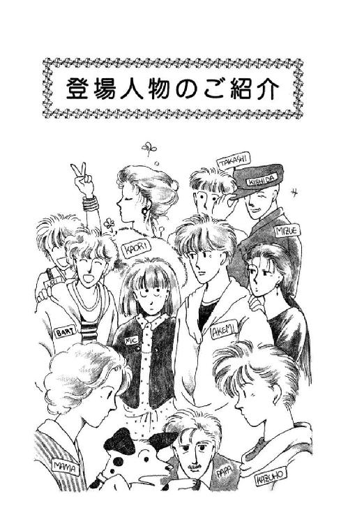
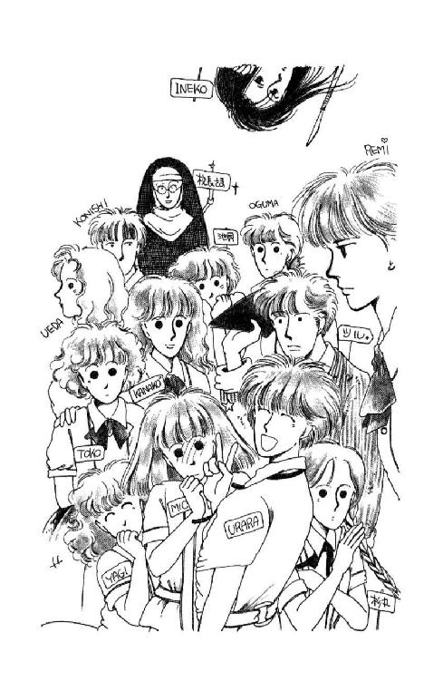
イラスト／めるへんめーかー
１
「それは......それはどういうことでしょう？」
逆さらっきょうの教頭先生は、外しためがねを淡紫色の薄い紙で拭いていた手をとめて、デスクの向こうから上目づかいにあたしをごらんになった。
「端的に言いますと、合格率の問題ですな」
「ごっ、合格率？」
......さすが、お掃除の時間にわざわざ教頭室に呼び出されただけあって、新学期そうそう、ずいぶんとシビアなお話だなぁ。
「そう。ご存知の通りわが森戸南女学館の学業レベルはたいへん低い。高等部の卒業生の半分は短大にも入らないし、実のところ、この数年四年制の大学に進んだものはほとんどありません。国公立、有名私大ともなると、まったく手も足も出ない」
「はぁ......手も足も、ですか」
急に喉がからからになって、あたしはあわててコップを取った。オレンジ・ジュースのつぶつぶがストローにつまって、うまく飲めない。
「となると、葉山近辺の優秀な生徒はますますわが校を避けて、下宿してでもよその学校に通おうとする。わが校には、ますます、あまり優秀ではない生徒ばかりが集まることになり、その自覚は畢竟勉学意欲の喪失と捨てばちな生活態度となり、ますますわが校の校風を下落させる。......これは実に不幸な悪循環だと思いませんか？」
「......ええ......？」
それはいいけど......。
「それが、あたしとなにか？」
それが、なんで、このあたしに「高校でも是非わが校に通っていただきたい」ってお話と結びつくの......？
やだ。なんか、なんか急に寒気がしてきた。鳥肌がたってきた。
この部屋、冷房がきつすぎるんじゃない？
「ですから」
めがねをかけ直すと、教頭先生は、ため息まじりにゆっくりと首を振った。
「きみが必要なんです、浅葉さん。きみが来てから、だらけきったわが校の生徒たちの中にも、真面目で勤勉なきみを見て、奮起するものが出てきています。現に中等部の中に外部高校の受験を志望するものがぐんと増えた。ひょっとしたら、あの華雅高校にだってうまいこと合格するものも出るかもしれない。なにしろ受験ってのは気力と時の運ですからね。だが、それで終わりでは困るんです。数少ない潜在的に優秀な生徒がみんな出ていってしまったら、森戸南女学館高等部はほんとうにおしまいになってしまうんだ!!」
どん！ と音をたてて、教頭先生はデスクに両手をついた。
「だから、どうしてもきみに残っていただかなくてはっ！ きみなら、きみがこの後、高校三年まで今の学力を保っていれば、聡成・慶鳳・京女・博集院、どこでもきっと楽々合格できる。たくさん受験してたくさん合格してくれればくれるほど、（マル秘）進学資料大学別合格者数一覧にハクがつく。きみひとりで、この森戸南女学館の評価をぐぐっと高めることができるんだ。わが校創立以来初の国立大学合格者にでもなってくれれば、ふっふふふ、みんな、あっと驚きますよ。うちを見直してくれるんだ!!」
「......そ、そんな......」
ひど、ひどいっ!!
あたしそんな、いろんなところ受験なんてしないもん！ 好きになれそうな大学ひとつだけ選んで、絶対、なにがなんでもここに入るんだ！ って気力がなかったら、受験なんてうまくいかないよぉ!!
「あ、いや。無理なお願いなのは重々わかっております。わたしだって、わたしだって、ほんとはね、このトシになってこんな浅ましいことは言いたくない。ですがねぇっ!!」
ぐすっ、とすすりあげると、教頭先生のしわしわの喉が、絞め殺されそうなニワトリみたいにきゅうっ、と細くなった。
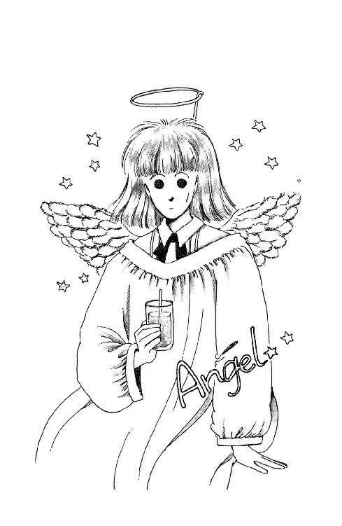
「このままでは、森戸南は堕落凋落転落の一途をたどるだけだ。そこにきみが、彗星のごとく現れた！ きみは天使です。希望の星です。ジャンヌ・ダルクです。浅葉さん、ここにいてください。そして、怠惰に流れるわが校の迷える小羊たちを導く羊飼いと、なってください！ たのむ、たのみます!!」
「あたし、とてもそんなこと」
「またまたご謙遜を。いや実はですね」
コホン、とひとつ咳をして、教頭先生は声をひそめた。
「生徒たちには知られておりませんが、わたしはこれでもクリスチャンなのです。洗礼名をトマス・モアといいます」
どっかで聞いたことがあるなぁ。......それはいいけど......洗礼名、ですって!?
「きみはミシェールというそうですね、大天使ミカエルの御名をいただいたのですね？」
「......そ......う......です......けど」
誰にお聞きになったんだろう？ 杉丸かな......そんなはずは......。
「ならばわたしたちは同胞ではありませんか!? この混迷の森戸南女学館に、主の栄光をもたらすために共に歩もうではありませんか!?」
......あっ......シスター・エルミニア!?
夏休みにうかがった時、校長さま、森戸南の教頭先生が、あたしのことでわざわざお電話くださった、って、おっしゃってたじゃない......でも、でも......？
「......ちょ、ちょっと待ってください！ でもあたし、校長さまには華雅高校に」
「ええ、わかってます。わかっていますが、この学園に、神の御心を実現するために、是非、是非、あなたの力を貸して欲しいのです。そりゃあ、華雅学園はエデンの園です。戻りたいあなたの気持ちはよーっくわかります。ですが、あなたをここに遣わされた主の御心について考えてみてください。わたしたちにはあなたが必要なのです!! 浅葉ミシェール未来さん、あなたの信仰心に訴えます!!」
......そ......そんなこと言われたってぇ!!
「そんなの、絶対おかしいわっ!!」
トコの大声に受話器がキンキン唸った。
「勝手もいいとこじゃない！ なんのかんの言って、あんたの都合なんかなんにも考えてくれてないのよ。そりゃあんたなら、ひとりで何校だって合格するだろうし、それを数字にすれば、森戸南は万々歳かもしれないけど。そのためになんであんたが犠牲にならなきゃいけないのっ？ 冗談じゃないわ、だいたい合格率、なんて下世話なもんに神様持ち出してくるなんて、信者の風上にもおけないわ。カソリックは商売繁盛の宮さんじゃないんでしょ!? きっぱり断ってやんなさいよ！」
「......だから、トコ待ってよ、あのね、どうも、なんかおかしいのよ。だから、シスター・エルミニアに、森戸の教頭さまと電話でどんなお話をされたのか、ちょっとさぐりを」
「おお、ミシェール......そんなことどうだっていいじゃないの!! いい？ 敵はあんたのひとが好いのを利用して、理不尽な要求をつきつけてきたのよ。断固、拒絶すべきよっ！」
「トコ、トコ頼むからちょっと落ち着いて」
「なに言ってんのよ!! あんたこそ、もー少し怒ったらどう？ だいたいね、たった何カ月かしかいないあんたにおんぶしようなんて、強欲よ。分をわきまえてないのよ。だから田舎っていやなのよ!!」
「............」
悪意がないのはわかる。トコはまだ、あたしが華雅の子のつもりでいるんだろうから。だけど、あたしは、今現在、まさにその田舎にいるんだからねっ!!
ああ。やっぱり......ひとに言ってはいけないことだったんだわ。
あたしだって、いやよ。合格率なんてただの数字のために進む方向を決めさせられるなんて絶対にやだ。それは確かよ。
だけど......。
ほんの何カ月しかいない学校なんかどうなったっていいじゃないか、みたいに言うトコには、ちょっぴりがっかりしてしまうわ。そんなの、とってもいやな考えかただと思う。
あたし、もしかしたら、このまま高校でも森戸南女学館にいてもいいかなぁ、って思っていないこともなかったんだから。
転入したのは偶然だけど、自分で選んで来たんじゃないけど、好きなんだもん、森戸南。
お上品じゃないし、確かにお勉強はそんなにできるほうじゃないかもしれないけど、でも、今は学校にいくのとっても楽しい。クラスのみなさんにも、やっと、転校生じゃない、浅葉未来、ってひとりのクラス・メイトとして認めてもらえてきた気がしてるところなのに、何もわざと出ていかなくたって、いいんじゃないかなぁ、って軽く考えられるようになってて。
四谷まで通うとすると、毎日何時間も電車に揺られなきゃならないのよ。そのぶん、いろんなことができなくなる。例えばヨットにだって、乗れる時間が少なくなると思う。
それに、こう言ってはなんだけど、今のあたしにとっては、華雅高校に合格するのは（たとえば普通一般の外部生として受験したとしたって）そう難しいことじゃない。むしろ、おともだちも大勢いるし、校風、授業程度すべて慣れ親しんだ華雅に戻っていくのは、巣に帰るようなもので......見方を変えれば、せっかく来た道を戻ってくみたいなものなんじゃないか、って気だってするのよ。十年過ごしてきた華雅にあと三年いるよりも、まだ、ほんとうの意味で自分の学校だ、とは言えない森戸南ととことんつきあうほうが、学ぶことは多いかもしれないなあ、なんて建設的に考えていたのに......。
教頭先生が変なことおっしゃるからっ!!
そんな期待されてるなんて思ったら、かえって吞気に残ったりできないじゃないのぉ!!
でも......正直言って、大学のことまでは考えていなかったわ。
そうよね。森戸南にいたら、知らず知らずのうちに程度が落っこって、大学受験じゃ苦労するってことになるのかもしれない。まあそれはあくまであたしの覚悟っていうか、克己心の問題で、だろうけど......こうなってみると、校長さまが直々に『おめでとう、あなたは華雅高校にすすみます』って請け合ってくださったのに、やめます、あたしは森戸に残ります、なんて言うのはとってもおヤバいような気もするし......。
ああ、もう、やっ!!
どうしてこんなこと悩まなきゃいけないの？
なぜなんだろう？ どうしてなんだろう？ （なんか、外人さんによる日本語弁論大会みたいだなぁ）なんで、あっちにもこっちにも行かないと義理を欠く、みたいなコトになっちゃったの？ 両方行けるわけないんだから!! 絶対どっちか選ばなきゃならないんだから、絶対どっちかには失礼をすることになっちゃうじゃないの！
しかもよ。しかも。どっちも、来なさい、とは言ってくださるけど、だからって楽ができるわけじゃなくて、まるで反対じゃないの！
こんなのってないわよー!!
あたしは、あたしはねぇ、華雅も森戸南女学館も、どっちも好きなのよ。どっちも、同じくらい大切なの。なのに、どうしてこんな......。
......はぁ。きっと、離婚するおとうさんとおかあさんに、「パパとママとどっちが好き？」って言われて、どっちについていくか考えなきゃいけない子供って、こんな感じなんだわ。
そんなの、決めろってほうが無理よ!! こんな立場に立たされちゃったこと自体に、無理があるのよっ!! それを、それを......。
ふぇぇん、神様のいじわるぅ！
「......あ、そうだわ。そんなことより、ね、ミシェール、あんた、学園祭、来れる？」
「が、学園祭？」
あわてて気をとりなおして、受話器に耳をつける。
「そうよ。あんたが変な話するから、なんのために電話かけたのか忘れるとこだったわ。そっちの学校のと重ならない？」
「さぁ......？」
そう言えば、森戸南の学園祭っていつなのか、知らないなぁ。
「今、準備してないなら、きっとずっと先ね。十一月なんじゃない？ あ、もしかしたら春だったのかもしれないわ。じゃ、とにかく来れるわよね！ 来てよ、ね！」
「う、うん......行きたいけど......」
そうだわ。行って、あたしの口から直接、校長さまにことの次第をお伺いしなくては。
なんだか、変なのよね。その電話、っていうのがどうも怪しい。
校長さまと森戸の教頭先生、どちらもクリスチャンでらっしゃるみたいだけど......だからといって友好な関係であるとは限らないじゃない。華雅内部でさえ、シスター同士の仲違いってあるもの。なまじ志をひとつにしたかたがたって、ほんとに些細な差異で全人格的にまっこうから対立してしまわれるから......。
やだ。あたしって疑り深い!!
でも、そうよ。もし、なんでもなければ......あたしの疑いが邪推なら、きっと校長さま、親身になって相談に乗ってくださるわ。
「いつだったっけ？」
「なによー、忘れたの？ 来月八、九、十、よ。十日なら休みでしょ？ いらっしゃいよ。なんなら手伝いなさいよ、ソロリティーは例によってバザーやるから」
バザー!!
おお。バザー!!
あたしのまぶたに、たちまち、絢爛と飾りつけられた華雅会館大会議室が浮かんだの。
先輩やご父兄から寄付していただいた不用品と会員の手作りの品々を集めて開くソロリティー伝統のチャリティー・バザーは、毎年大人気なんだけれど、昨年のは特に、ほんとうに素晴らしかったのよ。会長をなさってらした真里村さんの叔父上が在ウガンダ大使をなさっていたご縁で、都内の各国大使館の方々のご協力が得られて。あちらこちらの国々の特産、名品、民芸品、美術工芸品の数々を、ご寄付いただけて。あの大きな会議室が、毎日たいへんな賑わいだったのだわ！
それに、麗美さんがいらっしゃった。
麗美さん自らが、あの美しいお指を煩わせてお作りになるものが、いったい、何であるか、いくつあるか、誰が手にいれることができるのか、学園祭の準備が始まったころからみんなさやさやとお噂していたけれども、えっへっへ、あたしは、知っていたんだ。加奈子さんから聞かせていただいたからー。
三十センチばかりの小さなクッション、ひとつだけ。
粋な刺子は七宝つなぎの模様で、生地は浅草『留め木綿』の藍染め地織木綿を、色落ち縮みしないよう反物まるごとすすぎ水が青くなくなるまで手洗いなさったもの、針は西ドイツ製特殊カーペット針、中袋は『オカダヤ』既成のすでにパンヤのはいっているもの......だったのだけれど。
そうよ。見るからに手のこんだものを作りたがるひとが多い中、麗美さんは、手芸の基本中の基本とも言える運針がきちんとおできにならなければ美しく見えるはずもなく、また、単調な中にもひと針ひと針に心を映す、刺子、という課題を自らに課されたのよ。ほんとうに、なんて気高いご気性でしょう。
さりげないものではありながら、麗美さんの魂を宿したそのクッションを、あたしはもちろん、欲しくて欲しくて、しかたがなかった。欲しくて欲しくて、予約をしたいほどだったけれど、ぐっと我慢をしたんだわ。
日頃からなにかと麗美さんとお話しできる機会も多いあたしなどが、こんな時まで特権を利用してしまうなんて、ソロリティー外のひとに申し訳ない。ご自分の手作り品を欲しがるひとが多いことをご存知でありながら、あえて、たったひとつに心をこめられた麗美さんに、申し訳ない、と思って......。
そしたら......そしたらっ!!
なんと、そのクッションには、あたしが実物を初めて見た時、すでに燦然と輝く売約済みの札が貼られていてっ！ 手にいれたのは、こともあろうにあの池貝でっ!! ......うっ、まったく、いったいどこから手を回したのよっ!! あんたには、あんたには、謙譲、とか、遠慮、とか、分別、ってものがまったくないのか!? この強つくばりっ!! 厚顔無恥！
ううう。
今になってもまだ腹がたつわ。まったく、いっぺんひっぱたいてやんなきゃ、だめなのよ、あのおバカはっ!!
......ああ......それにしても......バザー!! なんて懐かしい!!
「それで、それで、今年もみなさんそれぞれ何か作るの？」
「もちよ!!」
「うわぁ、トコは何作るのよ、お得意のコットン・レースでしょう？ エプロン？ ピロー・ケース？」
「今年はね、ちょっと数がんばろうと思って、パッチ・ワークに挑戦するの。ランチョン・マットが七枚ほどできたんだけど、どうも半端でしょう？ せめて二十枚にはしたいんだけど、間に合いそうもなくて......それで、相談なんだけどね。あんた、手伝ってくれない？」
「え」
「材料送るから。二、三枚でもいいの。もしさ、他になにか作れたら作ってよ、あんたのも出品しちゃうから」
あたしが......今年もソロリティーのバザーに......？
「ね、そうしなさいよ！ ランチョン・マットはさ、ほんとはどうでもいいの。とにかく、あんたを参加させたいのよ。なにかさ、ひとつでもいいから。そしたら、麗美さんだってお喜びになると思うわ。がんばってさ、素敵なの、何か作って、ミシェールここに有り！ っていいとこ見せなさいよぉ!!」
麗美さん......麗美さん......。
わぁん。麗美さん今年は何をお作りになるの？ どなたにさしあげるの？
ふぇぇん。こころは華雅に戻っちゃう。そんなこと聞くと、華雅エンヌのミシェールに戻りたくなっちゃうじゃないよぉ！
「文化祭？」
うららは、下着代わりのＴシャツを脱ぎかけてた手を止めて、ふっ、と首を振った。
「あー。世の中にはそういう優雅なものもあったんだわね」
「あったんだわね、って、そんな他人事みたいに!!」
「だぁって、ほんとに他人事なん......痛てっ!!」
誰かに押されて、ロッカーに肘をぶつけたのよ。第二更衣室は、毎度おなじみ場所取り合戦の最中で、あっちこっちで押し合いへしあい、ちょっと油断してると自分のかばんと離れ離れになっちゃうくらいなんだ。
「ったくもお、戦争だぜ、こりゃ。......あのね、わが森戸南女学館には文化祭ってものは、ないの！」
「ど......どうして!?」
はっきり聞かされるとやっぱり驚いたけど。
そんな気はしてたのよ。生徒手帳を見たけど、年間予定のどこにも、文化祭の日程って載ってないんだもの。
でも、まさかじゃないの!! なんでやらないの？ うっ......ここには文化、ってものが存在しない、ってことなのかしら......まさか......そんな......。
「以前はあったらしいわよ」
器用にというか、せせこましくというか、ボタン外しただけで脱がないままのブラウスの上からせっせと体操着を被った杉丸が口をはさんだ。
「ほら、うちの親戚が裏門のすぐそばに住んでるじゃない？ 文化祭の時ってほんとに迷惑だった、って言ってたもん」
「迷惑だった？」
どういうこと？
「うちの学校って、おっきなスピーカー使ってるじゃない。月曜ごとの朝礼だって、早く並べとか、いつまでもしゃべってるんじゃない、とか延々ガーガー言われるじゃない。あれって、けっこううるさいらしいのよね。文化祭ともなると、それ、一日中だからねぇ」
「そんな......」
それは、確かにうるさいかもしれないけど。
「そんなの、だって、選挙の宣伝カーとかちりがみ交換（註１）だって同じじゃない、音が大きすぎるんだったら、小さくすれば」
「それだけじゃないのよ。校門の周りとかにガラの悪い人たちがうろうろして、気持ち悪かったらしいよ。ほら、バイクとかで、 パラララパラララ言ううるさいのあるじゃない？ ああいうのが団体さんで来て、ずっと、あたり走ってるんだって。まったく幼稚だったら。バッカみたいだけど、きっと、そういう程度の男でも、きゃあきゃあ喜んで相手にするひとがいるからでしょ......」
パラララパラララ言ううるさいのあるじゃない？ ああいうのが団体さんで来て、ずっと、あたり走ってるんだって。まったく幼稚だったら。バッカみたいだけど、きっと、そういう程度の男でも、きゃあきゃあ喜んで相手にするひとがいるからでしょ......」
どこかで、バキッ、と何かを撲るような音がして、さすがの杉丸もあわてて黙ったわ。
......それより。
「変なのぉ。そのひとたち、せっかく文化祭やってるのに、どうして周りなんか走ってるの？ 中に来て、展示物とか、研究発表とか見ればいいじゃないの」
「んなことするかよー」
......う......うらら......いくら女の子同士だからって......そんな大胆な脱ぎかたを......いくら必要ないからって、ブラぐらいして欲しい。せめて、隠す、とか、背中向く、とかぐらいしてくれたっていいのに......目のやりばに困るじゃないのっ......！
「女ひでりでヒマ持て余してんのが、退屈しのぎにくるんだよー。ひょっとしたらかわいー子とお近づきになれないか、ってさ。だいたい、そんな、見るからに下ごころのありそうなの、学校側が入れさせるわけないだろ」
あ、そうか。
そういえば、華雅祭でも学外のひとはチケットがないと入れなかったんだ。確か、生徒本人とご招待したいかたとの関係を明記して父兄のはんこをもらった『部外者招待許可願』を提出し、その『許可願』は後から親展扱いで父兄に郵送されるんだったわ。
そうか。あれは、下ごころのあるひとを、神聖な校舎に近づけないためだったのか!!
なるほどねぇ。そうよね。思えば『親戚』でも『恩師』でもない『友人』の男性をご招待するひとって、ほとんどいなかったもんなぁ。時々、六年生のかたの『婚約者』だ、ってかたがいらしてる、って大騒ぎしてたもの。『許可願』なんてもらったことなかったから、気がつかなかったけど（だって、パパやママや、華雅同窓生であるさえら伯母さまのとこには学校からちゃんと案内状送ってくれるもの）......うわぁ、じゃ、例えば、もしあたしが、バザーに出品できたとしても、うららや杉丸や、ましてや朱海さんたちのこと、学園祭に勝手に誘ったりしちゃいけないんだ!! っていうか、あたし自身もチケットがいる？
め......めんどくさいんだぁ！
「ねーねー、その話の続きでさぁ、なんでもアーパーなのが嬉しさあまって塀乗り越えて入ろうとするのを、岡村だの柿間だのが竹箒もってひっぱたき落として歩いてたっつーじゃない」
あたしが混乱してるのに、うららったら、ひっひっひ、なんて笑いながら言うのよ。
「見たかったと思わない、それ？ 傑作じゃん。バカだねー。こんな学校でも女の花園に見えるんだねぇ。幻想なんだけどねー」
「じゃあ、文化祭やめちゃったっていうのは、そのせいなの？ その箒部隊が大変すぎて、先生がたが音をあげられたの？」
「まさか」
「......じゃ、どうして？」
「さぁ？」
「予算足んなかったんじゃないのぉ？」
うららも杉丸も、そっけなく言うばかりなのよ。
そんな。そんなのって、ある？
「だって、自分の学校じゃない、自分たちの文化祭じゃないの！ わけもわからないのにやらせてもらえないなんて、そんなのないわ!!」
「んーなこと言ったって、ないもんはないもんねぇ」
「あたし知ってるよん」
突然。
ぺちょり、と首の後ろにねばりつくような声がしたのよ。振りかえってみると。
「おおっと、美土里ぃ......なんなの、それは？」
さすがのうららも唸ったわ。
黒い下着が、まるで外国映画のラブ・シーンみたい。透けてみえる白いからだとくらべると、誰かさんのただの裸のほうがよっぽど健康的なくらいよ。それはともかく......黒いのと黒いのの間、肋骨からヒップ・ボーンまでの間を一面、巨大な黄色いゴムみたいなものがおおってるんだもん！
「やだ、そんなに見ないでよぉ。だぁって、太っちゃったんだものぉ。あたし、夏ってだめなのよねぇ」
お休みの間にますます長くなった巻き毛を、シャンプーの宣伝みたいにかきあげながら、植田美土里さんはぽってり赤い唇を半開きにして笑った。
「この前のはどうしたのよ？ あの『とびきりセクシー、マリリン・モンロー愛用を再現した古典的スタイルのコルセット』とかいうの。気にいってたんじゃなかったの？」
「あれはあれでいいんだけどねぇ、こっちのほうが効きそうだったんだもの。とにかく、強烈に締まるわよぉ。あせもできるけど」
言いながら美土里さんはさっさと体操着を羽織ってしまった。
みごとだわ。ウエストがきゅっ、とすぼんでるから、でるべきところがより強調されてる。
同じ年なのに......同じ学校指定の草色ブルマーなのに......ずいぶん違うものだわね......あたしなんて、あたしなんて、胸よりお腹のほうがぷっくりふくれてる幼児体型のままなのに......が、がーどる、とかいうものだってまだ持っていないのに。
うう。まだ焦らなくってもいいんじゃないかって気はするけど、でもやっぱり、そろそろ買ってもらおうかなぁ。
「あ、そうそ、文化祭でしょ？」
あたしの気も知らずに、美土里さんは、サーモン・ピンクの毛糸のリボンくわえて、かきあげた髪を位置の高いポニー・テールにしながら、くふふん、と笑った。
「あのねぇ、おととし退学になったエリ子先輩にきいた話なんだけどね、エリ子先輩よりもっと前の先輩たちがドジったんだってぇ」
「ドジったって？」
「だからさ、文化祭って泊まりこみで準備とかするじゃない、で、ちょっと手伝いにきてくれてたひとたちとちょっと飲んでね、ちょっと寝ちゃってたのを、みつかったわけ」
ちょ......ちょっと飲んでって......ね、寝ちゃった、って......。
「男ひきこんでたわけか。ったく、しょーがねーなー」
と、うらら。
うわぁん。やっぱりそうなの。
「でさぁ、まずいのはさ、アンパン（註２）やってたらしいのよねぇ。今なら誰もやんないだろうけどさ、当時は、流行ってたからぁ。雑魚寝ぐらいなら、センセーなにいやらしく勘繰ってるんですかぁ、って手もあったんだろうけど」
「え？ あんぱんって、なあに？」
聞いたのに、
「そらまー、処分だね」
「でさ、こんな不祥事が起こるんじゃもうダメだ、って、文化祭そのものもぶっつぶしちまったらしいよ」
「なるほどねー。どーせんーなこったろーと思ったよ」
「でもさぁ。お祭りだったんだから、もちっと大目に見てくれたっていいと思わなーい？」
うららも美土里さんも、話に夢中で答えてくれないのよ。
わぁん。あんぱんってなんだろう？ きっとまた、何かいけないことなんだろうけど......きっと、知らないとまた、無知だおバカだって軽蔑されるような、みんなが知ってるあたりまえのことなんだろうけど......。
ええと、ほんもののあんぱんなら購買部でも売ってるから禁止されてるはずはないし......あんぱん、あんぱん......ひとつのパン？ 木村屋？ 違うなぁ......あんこ、って確か、詰め物の意味でも使うけど......。
「甘いわっ!!」
「うん、確かに!!」
......あれっ？
杉丸、いったい何を甘いって言ったんだろ？
「飲むとか寝るとかご自分の勝手でしょうけど、なにもわざわざ学校でしなくたって良いじゃないの。悪いことするんだったら、みつからないとこでこっそりしたらいいのよ」
「やだ、もうとがんないでよぉ。そこがスリルなんじゃないよ」
しなだれかかるようにした美土里さんの手を、杉丸はぱし、とはねのけた。
「さわんないで。あんたたちってずるいから嫌いよ。誰かに叱られたって、ごめんなさいって気になんか絶対ならないんだもん。許してくれない世間が悪い、わかってくれないのは心が狭い、みたいに言うんじゃない。他人にばっか期待して。そんなの甘いわよ!!」
「ねぇねぇ、でもぉ」
あたしは、美土里さんと憤然とにらみあってる杉丸のブルマーをつんつんつついた。
「そんな前のことで、今のあたしたちからも文化祭取り上げられちゃうの？ ずいぶんひどいんじゃない？」
「おお、ミシェール!! あんたったら、植田の味方をするの？」
「そういうわけじゃないけど......」
ただ、あたしは、文化祭がやれないのはつまんないからって......。
「ま、歴史は繰り返すと言いますから」
うららはちらっ、と美土里さんを見て、
「文化祭だなんだで、下校時間過ぎても居のこりしていい、なんてことになったら、今だって、宿直のセンセに夜這いをかけようなんて考えるやつが出ないとも限らないからねー」
「なっ......!!」
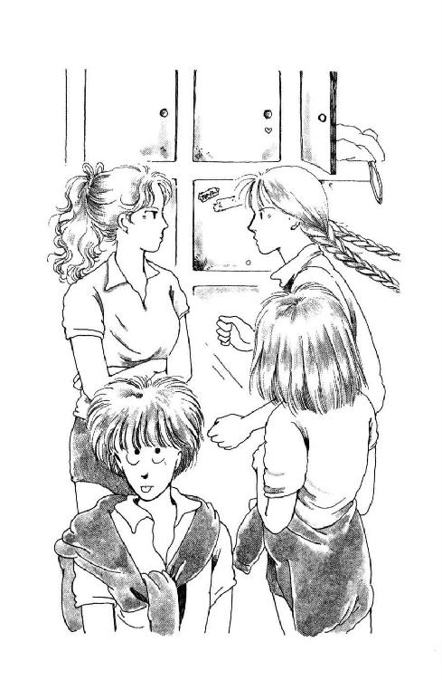
美土里さんはいったん大きく開けた唇を、ぎゅっ、と嚙みしめて、
「まったくっ！ ひとが親切に教えてあげに来たっていうのに！ いい加減にしてよ!! ......そうか......そういう手もあったか......うふふふふ」
怒ってるのかと思ったら、顔を赤らめて、ふくみ笑いしながら行ってしまったのよ。
「あ、いけない。わたしも当番だから。お先に!!」
杉丸も出て行った。
......あんぱん問題がまだよくわからないけど......。
とにかく、森戸南女学館にだって文化祭をやる素地がないわけじゃないんだわ。なのに、みんな、ないから、ないのがあたりまえみたいに思ってしまっているんだわ。そして、あの、素晴らしい感動を味わうこともなく過ごしていることに気がつきもしない......。
これは悲劇だわ!!
「......ね、うらら。文化祭、復活できないのかしら？」
「復活ぅ？」
「そうよ!!」
だいぶ空いてきた更衣室の壁に、あたしの声、やけに大きく響いた。
「文化祭のない秋なんて、つまんないじゃない！ 今年はもう大掛かりなのは無理かもしれないけど、せめてなにか、ちょっとでいいから......そうだわ。かつて騒音その他でご迷惑をかけたご近所のかたがたをご招待して、森戸南女学館を見直していただくのよ！ 地域と一帯になった総合文化祭典を!! そうよ、それなら、先生がただって、絶対賛成なさるわ!!」
「あー、もう行かないと体育始まる」
「茶化さないで！」
だって、だって......。
「あたしたち、せっかく同じ学校にいるのに、毎日同じクラスにいるのに......みんなで力をあわせて、いっしょに、ひとつのことを作り上げ、なし遂げる喜びも味わわないで、ただ机並べて勉強してるだけだなんて、悲しいじゃない、もったいないじゃない!! そうよ、勉強するだけなら、家でひとりでだってできるもの。学校って、クラスって、何かほかのことのためにあるはずだわ!!」
「ミッキー......」
ジョギング・シューズの紐を結びなおしながら、うららはため息まじりにあたしを見上げた。
「あんたもいい加減わかってきたかと思ってたけど、どうやら、まだみたいねー」
「なにがっ？」
「だからねー。学校なんてどーでもいいじゃないの。おもしろいことは外にいくらでもあるんだしさー、みんなで力をあわせて、なんて、ひとつ間違えばナチスだよ。ほんとに同じもん好きな同士ってのは、ほっといたって集まるっしょ。ね、ほら、ヨットだってそうじゃん、別に頼まれなくたって、みんなで力あわせてるっしょ。なにもわざわざ学校で」
「そんな......!!」
うららもそうなの？
いつかの奥山さんと同じね。学校になんて、何にも期待してない。はじめっから、つまんないとこだって決めてるみたい。
「つまらないのは、あたしたちがおもしろいこと、よそでばっかりしてるからじゃない。学校でおもしろいことすれば、学校だっておもしろいとこになるじゃない」
「だけどねー......えいちきしょう、解けなくなっちったぜ」
「貸して」
よじれた紐は、きつく締まってこぶみたいになってる。爪を切ったばかりで、なかなかひっかからない。ロープ・ワークはヨットで練習してるはずなのに、変な結び方するからよ。
更衣室の床は埃っぽくて、剝き出しの膝にざらざらした。ちっとも緩まない結び目をよく見ようとして、あたしはいつの間にか、うららの足下にはいつくばってる。
なんだか、やだなぁ。
なんでみんなそんなに、学校が嫌いなの？ 自分たちの学校じゃない。自分たちのものだって思ってないから、お掃除だって行き届かないのよ。だから教頭先生が、外の人間みたいなあたしにあんなことおっしゃるんだわ。華雅だったら、華雅だったら、みんなどんな部屋のどんな隅だって大切にしてる。きれいにしてる。みんな自分の学校のこと、とっても好きだわ。
「バザー、素敵だったのよ」
あたしはそっと言ってみた。
「ソロリティーではね、学園祭に毎年バザーをするの。みんな、なにか作って持ってくの」
「ふうん。お店やさんごっこね」
「そうよ」
いいわよ。茶化せば。そうだもん。だけど、お店やさんごっこって、おもしろいもん!!
「自分が作ったものにどんな値段つけるか、ちゃんと売れるかどうか、ドキドキするわ。あたしが去年出したのはね、ウェディング・ドレスのお人形だったの。へたなくせに見栄はって大作に挑んじゃったから、すごかったわ。縫い目はぼろぼろだし脚の長さが違った。もちろんいっしょうけんめい作ったんだけど、みんながあんまり上手な素敵なの出したから、冷や汗かいた。実際、ずっと売れなくて、いつまでも残ってて、もう恥ずかしくって、こっそり隠しちゃおうかと思ったぐらいだったんだけど......どこか南米の国の小さな女の子が買ってってくれたのよ。ちょうどあたしが売り子さんしてる時に......ぱっ、と見るなり、大きな目を輝かせて、お父さんらしいひとに早口になにか言って、おさいふを持たせてもらって、あたしの人形、ぎゅっ、と抱き締めて、カタコトの日本語で『クダサイナ』って......うっ......」
目の前の結び目が、急にぼやけて、あたしはあわててまばたきをした。
「......どうせね、どうせうららはバカにするんだろうけど、あたしはその時、ほんとに、ほんとに嬉しかったんだからっ!!」
......ぐすっ......う。いけない。
急に、紐が遠くなった。うららが足をひっこめたんだ。
「あ、まだ解けてないのに」
「いいよ。なんとか履けそう。サンキュ」
うららはなんだか寂しそうに見える顔で笑うと、靴のかかと踏んづけたまま、ぎゅうぎゅう足をねじこんだ。
「ばかになんかしないけどねぇ。なんか、よその国の話って気がしちゃうわけよ」
「............」
「まー、そーふくれないで。ほら、いこ!!」
「パスパス!! まわしてー!!」
「ダッシュだ小西ー、いけー!!」
体育は、あたしの苦手のバスケだった。
ただでさえ球技っていうもの一般が得意じゃないのに、バスケっていっぱい走らなきゃならないじゃない？ すぐ息がきれちゃう。それに、自慢じゃないけど、ドリブル、っていうのができない。黙って立っててだってできないのに、走ってなんてなおできない。
バレー・ボールのほうがまだなんとかなるわ。ひとの邪魔さえしなければ、サーブさえ入れば、それほどチームのみなさんの足ひっぱることにならないもの。
今日の授業は試合形式で、名簿順で五人ずつに班わけされたんだけど、なにしろあたしは名簿の最後でしょ。うららや杉丸と別になっちゃったし、まぁまぁ親しいって言えるのは、八木沢さんだけで......どのひとが味方でどのひとが敵なのか、とっさにわかんないんだもん！
なのに......。
どたどたどたたたた。ばんばん、しゅっ！
うわわわ、なんであんなに素早くドリブルできるんだ。すごーい、うまいなぁ。ボールのほうが手にすいついてくるみたいじゃない。
「ほら浅葉さん!!」
「きゃあ！」
そんないきなり、そんないきなり!!
「もーらいっ!!」
横からすっとんできた末金さん（敵チームだ）が、ばしばしドリブルしながらコートを激走した。みんな、いっせいに、こっちのゴール・サイドに突撃していく。
どどどど、ばしっ、ばんっ！ びしっ!!
「ちっ!!」
「カットカット！」
飛び上がって、外れたゴールから落ちてくるボールをうばいあうひとたち。あ、宮野さんが取った!! えっと、宮野さんだから、味方で、だからこっちのゴールで......。
「ほら速攻!!」
「ぎゃあ!!」
わーん、こっちに投げないで!!
き、来ちゃった!! ......ど、どうしよ？ しようがない、えい!!
「あ......」
八木沢さんに向けたつもりのボール、大幅にホームランして、コート外に転がってってしまった。
う......あたしって、なんて下手なの......。
「何逃げまわってんだよ、ミッキー!!」
外野のうららから怒鳴られた。
「ドッジ・ボールじゃないんだから、がんばってボールに食いついてみなって」
そんなこと言われたって、そんなこと言われたって......。
いいわよ。食いつくわよ。食いつけばいいのね！
「小西マークだよぉ」
「パスつないでいけー!!」
佐野さんのスロー・インで、またコートはしっちゃかめっちゃか、ひとが入り組んで、どこどこ地響きの音があっち行ったりこっち行ったりしてる。
あん。こんなふうに、ひとの後ついて走ってたんじゃだめなんだ。
どうせあたしは、ひとのパス横取りしたりできないんだから。よし。ゴール下で待っていよ......うわわ!! ほんとに来ちゃった!!
「いいぞー!! シュート打てぇ!!」
えっと、えっと、いち、に、さんで飛んで......。
べしっ!!
「たっ......」
小西さんだった。シュート妨害しに来たんだろうけど、ボール持って、やっと伸ばしたあたしの手、ひっぱたいたのよっ!!
いちちちち......。
ジャンプから落ちて転んだままのあたしが、べったり座りこんでる間に、たちまち、どごごごご、とボールを追ってみんな移動してったけど......。
うわ。腕みみず腫れになってる。爪でひっかかれたんだぁ。
......まったく、乱暴ねぇ......。
いいわよ。あたしだって、食いついていくもん！
ええと。どこにいればいいか。味方はどこか。敵は。
......そうか。
気をおちつけて見てみたら、ボールの流れが読めた気がした。ぱっ、と飛び出すと、ちょうど末金さんから佐野さんに出したパスの真ん中だった。
と、取った！
誰か、誰かにパスしなきゃ......。
「ぎゃっ!!」
脇腹のあたりを何かかすめた。とっさに、反対側にボールをかばったけど......い、いまの拳固だった......？ 気のせいかしら......。
「わん!!」
ボールつかまれちゃった!! すごい力でひっぱる!!
また小西さんだぁ!!
やだなぁ、小西さんうまいんだから、あたしみたいなお下手な子にかまわなくたっていいのに......あ、違うか。だから、あたしをマークしてたのか。
「はなせよ。怪我したくないんだろぉ？」
え......え？
小西さんの、こけしさんみたいに細い目が上目づかいにカッ、と開いて、喧嘩しかける時の猫みたいなんだ。はぁはぁ荒い息に、舌舐めずりをしてるのが、こ、怖いよぉ......!!
「おらおら。はなしなってばっ!!」
「やだっ！」
「こいつ......」
怖いけど......怖いけど、放せないよ、今放したらひっくり返るし......せっかく、やっと取ったのにい！
うう、う......手がすべる。こんな大きなボール、しっかりつかめないよぉ。あたし指が短いんだもん。取られちゃう。取られちゃうよぉ......。
バスケ・ボールの表面のざらざらが頰にへばりついて、ぐいいん、って顔がよじれた。
「ヘルドボール!!」
ピピーッ、と岡村先生が笛を鳴らした。
「小西と浅葉でジャンプ！」
う、うそ......。
みんながさっ、と退いて、先生がボールを掲げた。
あたしと小西さんが、向かいあって立つ。
小西さんは、大きい。たぶん、あたしより十センチ以上は大きい。肩とかもがっしりして、いかにもスポーツ・ウーマンって感じで、特にバスケはすごく上手い。
絶対だめだ。絶対だめだけど......とにかく、がんばって......あれ？
ちらっ、と見ると、小西さん、肩を怒らせたまま、なぜかボールじゃなくて、あたしのことにらんでる。なんで？ なんで？
なんで？
ぽーん、とボールが上がって、落ちて来て、あたしは飛んだ。
......あ、だめだ、タイミングが間違った、早すぎ......。
どこっ!!
「きゃああっ!!」
当て身、っていうの？ 小西さんとぶつかって、あたしは吹っ飛んだ。オーバーな言い方だけど、ほんとにそんな感じがしたのよ。
ボールはもうどこかに行って、誰かがドリブルしながらばしばし走る音がしてたけど......。
痛たたた......もろ、目に当たったわ。
なんか、変だった。あたしが飛んだのは早すぎたのに、バスケ上手なはずの小西さんが同じタイミングで飛ぶなんて......。
それに、目に当たったの、肘だった。たぶん肘だったのよ。
ジャンプしながら肘を張ることだって、そりゃあるかもしれないけど、それがちょうどあたしのほう向いてた、なんて、なんだかまるで......。
わざとぶつかって来たみたいじゃないのぉ!!
あ痛た......たたた。
「ちょっと、ちょっと待って、待って!!」
八木沢さんの甲高い声がして、ボールの音が止まったわ。
「ミッキー、ミッキー、大丈夫？ 立てる？」
「ありがと......平気」
助けおこされて、えへっ、て笑ってみせたけど、
「あたたた」
顔動かすと、すごく痛い！
「今の反則じゃないの？ からだにぶつかったみたいだもの」
「そお？ 着地がへただったんじゃないの？」
肩をすくめながら、小西さんが歩いてきた。
「でも、いいわ。じゃ、やり直しましょ」
うへぇっ！
「飛べる？」
な、何なのよ、その挑戦的な言い方はっ!!
「やるわよ......やりますっ!!」
「よし、じゃ、センターから......」
先生が宣言して、みんな、だるそうに、配置を変える。
何なの、どうしたっていうの？ あたしが何か、気にいらないことでもしたっていうの？ だったら、だったらそう言えばいいじゃない！ 卑怯ものっ!!
ピーッ!!
ええいっ!!
......と、がんばったつもりだったんだけど、ボールはあたしの手のずっとずっと上のとこで、軽く小西さんにつかまって、味方陣深く飛んでった。
「小西さんっ!!」
二十二対八であえなくうちのチームの負けになったところで、あたしは小西さんに近寄ってった。
「さっきの、どういうこと!?」
「さっきのって？」
振り返った小西さんの目の前に、あたしは右腕のみみず腫れをさっ、と突き出した。「あーら。痛そうね」
「痛いかどうかじゃなくてっ!! わざとかどうか、聞いてるのっ!!」
「なんで？」
小西さんは眉を上げて、じっ、とあたしの顔を見た。
「なんでわたしが、わざとそんなことすんの？」
「だからそれを聞いて......」
「なによ。やぁねぇぇ」
大きな声に、コートに集まってたひとたちまでこっちを見た。
前に勝ってたうららたちのチームと、小西さんのチームがいる。決勝戦なんだ。
「浅葉さん、あんた、ちょっとおかしいんじゃないの？」
「......で、でも」
「自分がトロいから怪我するんでしょう？ なんでそれがあたしのせいなの？」
「どうかしたか？」
岡村先生が、コートから声をかけてきた。
「小西、こい。始まんないだろうが」
「だって浅葉さんが。怪我したって。わたしのせいだって、因縁つけてくるんです」
い、因縁だなんてっ!!
「怪我ぁ？ ひどいのか？」
「いえ、そんな......あの」
「じゃ、保健室行ってこい。よし、始めるぞー」
ピリピリピリっ、て笛が鳴って、試合が始まった。
「ふん。お嬢さまは、かよわくてらっしゃるわね！」
捨てぜりふを残して、行ってしまう小西さんを見送ってから、ふと見ると、いつの間にか、杉丸と八木沢さんがそばに来てた。
「大丈夫？ 保健室行く？」
「ううん、怪我なんて。たいしたことない。ただ、あたしは......」
「ミッキー間違ってないわ。ほんとに、絶対おかしかったわよ」
小さな小さな声で八木沢さんが言った。
「もっとシュートできるのに、なんだかわざとパスまわしてるみたいだったもん。小西だけじゃないわ。......ほら」
八木沢さんが目だけで示す方角をちらっ、と見ると、佐野さんと小西さん、加田さんの三人が、コートの中で固まって、なにやらクスクス言っている。こっちを、ちらちら見てるような気もする。
「試合なんかより、ミッキー、あんたにボールぶつけるチャンス狙ってたんじゃないの」
「......どうしてそんな......」
ひどいわ!!
なんか言いたいことがあるなら、言ってくれればいいのに！
「あいつら不良だもん。近頃流行りの、校内いじめにでもめざめたんじゃないの？」
座ろ、って杉丸が袖をひっぱった。
流行ってるからって、そんなぁ......。
あ。でも。
そうだわ。不良、で思い出したけど、はるか昔に、あたしが消しゴム麻雀で大勝してしまった時の相手って、小西さんたちだわ。でもまさか、いくらなんでもそんなはるか昔のことを根に持って......？
「ねーミッキー」
ぼんやりしてると杉丸が、あたしの耳に口をつけるようにして言ったのよ。
「だから。あのひとたちの理屈をあたしたちが理解しようなんて無理なんだってば。いーい佐野さんなんかね、昨日まで三日ぐらい出てこなかったじゃない？ あれ、謹慎よ」
「謹慎？」
「そうよ。何やったのか知らないけど。もう、何度めか。今度は停学だ、この次は、ってずっと言われてんのよ」
そんなに......？
知らなかった......あたしったら、そんな恐ろしいひとに『因縁』つけてしまったの......？
ううう。
気をとりなおしてコートを見ると、ちょうど、うららがコート半分も独走してゴールに向かってるとこだった。
あれ？ せっかく、ゴール前まで来たのに、くるっ、とふり向いちゃって。だだっ、と追ってくるみんなを見回しながら、にこにこドリブルなんかしてる......余裕だなぁ。
「こっこまっでおっいで、......と。ほいっ!!」
「わっ!!」
カットしようと踏み出した佐野さんが、フェイントかけられてバランスくずし、
「ど、どいてよっ!!」
反対方向から飛びだしかけてた加田さんともみあって転んでいるうちに、うららは、ゴールを見もしないで真後ろにボールを放った......！
「お？ わあい。はいったぁ！ あたしって天才！」
「西在家っ!!」
どこんどこん足音をたてて寄ってきた岡村先生が、持ってらしたメガホンで、ぱこっ、（註３）とうららの頭をたたいた。
「そんなバスケがあるかっ!!」
「えーっ、どうしてですかぁ？ ちゃんとゴールしたのにぃ」
「だがな、これは授業なんだから。真面目にやらんなら退場させるぞっ!!」
「そんなぁ。あたし、めいっぱい真面目ですよぉ？」
「ああっ......もういいから、ほら、やれ！」
「スロー・イン？」
「ああ」
「ええーっ？ ジャンプにしましょーよー」
「なんでだ」
「だぁって、試合続けられるのに先生が入ってきちゃったから、どっちのボールだかわからないしぃ」
「あああ、わかった、もー、好きなようにしろっ!!」
「はぁい」
うららは、お手玉していたボールを先生に渡すと、ちらっ、とあたしのほうを見て、ウインクした......？
うっ。相手チームは小西さんだ。うららよりも、やっぱり大きい。
大丈夫かしら......なんか、なんか、いやな予感が......。
ピッ!!
高く高く、ボールがあがった。
その時。
......え......？
バレエでもするみたいに両手を胸元に丸くあわせたかっこうで、いったん沈みこんだうららのからだが、ひねりながら飛びあがったかと思うと、いつの間にか、脚が、脚が伸びて......。
「......坡ァッ!!」
強烈な蹴りが、ボールをぶっとばしたのよ......。
みんな、その場に凍りついてた。
ボールが壁にぶつかって、床に落ちて、何度か弾む、たん、たん、たん、という音が耳の底にこだました。
「......こ、こおらぁぁあぁあっ!!」
岡村先生が、ワナワナ震えながら、怒鳴ったのよ。
「西在家、このバカっ！ だれが、だれがサッカーを、いや、北斗の拳（註４）をやれと言ったあ!?」
「わー！ ごめんなさい、ちょっとやってみたかったんだよぉ」
メガホンでぱこぱこぶたれて、うららはひ～～ん、とうずくまったけど......。
「小西？ 小西どうした？」
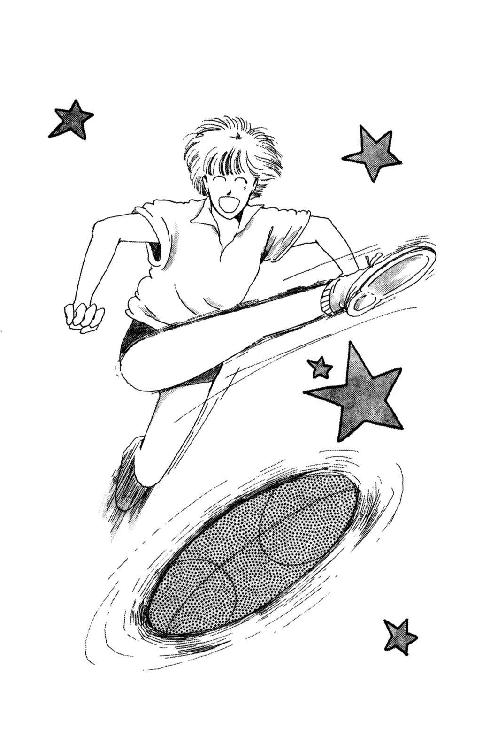
やっと気づいた佐野さんが駆け寄った。
小西さんは、着地するなり、真っ青な顔してへなへな崩れるように座りこんじゃっていたんだ。
「な......なんともないわよっ!!」
佐野さんの手をふり払うようにして立ち上がった小西さんは、しばらく顔をひきつらせて大きく息をしていたけど、やがて、決心したみたいにまっすぐ、うららのほうに歩いていった。
気配に顔をあげて何か言いかけた岡村先生が、思わず声を飲むほどの迫力だった。
「うらら......あんた、邪魔する気なのね」
「え？ なにが？」
うららは何気なく立ち上がったけど。
「なんか、陽炎みたいなものが立ってない？」
杉丸がささやいた。
「効果じゃないの？」
八木沢さんが答えた。
「こ、こここ、こら。よせ。喧嘩はするな。な、な？」
あまりの殺気に、岡村先生は泣き笑いみたいな顔でその場にしゃがみこんでしまい、下のほうから小さな声で、
「こらー。喧嘩はー。するなよー......」
なんて、おっしゃってる。
「話せばわかる、話せばわかるぞー......あ、そだ。これがあったんだ......（と、メガホンを口にあてて、やっぱり小さな声で）喧嘩はー。するなよー。......ちきしょう、だから女子校なんて嫌いなんだ......」
「うらら」
右手でふぁさっ、と前髪を払うと、小西さんは、どすのきいた声をしぼりだした。
「なんで邪魔するの？ なんであんた、いつでもそうやって浅葉のことかばうのよっ!!」
「ふん。吐いたわね」
ゆっくり腕組みをしながら、うららが笑った。
「やっぱりわざとだったってわけか。何が気にいらなかったのかしらないけど。やり方が陰険なのが気にいらない、これは理由にならない？」
「............」
「いったい、どーしたってのよ？ ねー、小西、あんた何のわけもないのに、弱いもんいじめするような情けないヤツじゃないだろ？」
小西さんは、黙ってうららをにらんでたけど、やがて、ぱっ、と首を振った。
「ふう......いいよ。わかった。じゃ、言うよ。始業式の日のことだけど」
え？
「覚えてるだろ？ 浅葉のことが原因でさ、ひどい騒ぎがあって。こいつも、教頭に呼ばれたじゃない」
「ああ」
「なのにさ、なんでよ？ 停学にも謹慎にもなりゃしなかったじゃないよっ！ そんなのおかしいじゃん？ あたしたちなんかさ、佐野なんか、佐野なんか、つまんないことですぐ親につげ口されてさ、三日も家で反省文書かされたっていうのに......あんだけ大騒ぎ起こしときながら、こいつは......こいつは......」
「つまんないことって？」
静かな声でうららが言った。
「バイトだよ、な」
「う......うん」
青白い顔の佐野さんが加田さんに押されるようにして、うららの前に出た。
「でも、そんな、変なんじゃないんだよ。喫茶店だけどさ、高石先輩がずっとやってて。それが用ができちゃって、今日行けないから代わりに行ってくんないか、って頼まれたんだよ！ 急だったから、バイト届けだせなかったけど、先輩にさ、直々に頼まれたらさ、そんな、届け出せないからなんて言って断れるわけ、ないだろう？」
「ふうん。それで、それがなんでバレたのよ？」
「偶然その店に、前捕まった時の刑事が来ちまって......」
「変な店じゃないんじゃなかった？ んな、刑事が目ェつけてるようなトコでバイトするほーがどーかしてるでしょーが、まったく......」
佐野さんも、小西さんも唇を突き出して黙ってる。
「まーさ、ミッキーに悪気があったわけじゃないんだしー。とにかく、あんたらは、目ェつけられちまってるんだから、この上妙なやつあたりしたって、あんたら自身の首がしまるだけじゃないよ、わかってる？」
「でも、うらら......！」
「あたしだって、何も言われなかったよ。始業式の時」
「だって、あんたは止めにはいったほうなんだし......！」
「ミッキーなんか、ただ巻き込まれただけでしょーが」
「......ね、ね、小西もういいよ」
佐野さんが小西さんの袖をひっぱった。
「わかったよ、うらら。こっちが悪かったよ。......ね、小西、いこ」
ずっと黙って、下を向いてた小西さんが、うんうん、って首を動かしてその場を離れたんで、ようやく、みんな息をするのが楽になったみたいだった。
あたしも、もちろんそうだけど......。
でも。
そーかー。あたしって、そんなにひいきされてるみたいに見えるのか......そんなに、嫌われてるのか。
もし、うららがいなかったら、なんでだかもわからずに、きっともっといじめられてた。
この上、教頭先生が、あたしにあんなこと言ったなんてバレたら、絶対、ひどい反感買っちゃうだろうなぁ......。
しょげてると、うららがあたしの目の前にしゃがみこんできた。
「まいったね」
「......うん」
「あんたって、どーもひとのサド心そそるとこがあるみたいだねー」
「............」
「まー、あんまり気にせんと」
ぽんぽん、なんて肩たたかれちゃったけど。
はあ。先が思いやられる。
２
「テストをする」
教卓につくなり、数学の柿間先生は、もぐもぐとそう宣言した。
「え──っ!?」
「またぁ？」
みんながわぁわぁ騒いでも、お返事もなさらずに、一番前の席を回って用紙を配ってしまう。
ただでさえそんなに大きなかたじゃないのに、お年のためか長年机に向かっていらしたせいかすっかり猫背になってしまわれてて、むっつり口を結ばれているとなんだか異様なのよ。誰とも目をあわさないし、歩きかたも陰鬱で、大きな声では言えないけれど、古いお城を守りつづけている拷問好きの門番の役をなさるとぴったりだと思う。
先生は教卓に戻って、みんながいやいや教科書ノートの類をしまうのを、表情ひとつ変えずに見ていた。にらまれているわけじゃないのに、なんだか、ぞっとするほど、憎しみがこもった視線で。
「やだなー」
隣の席で浜田さんが小さくため息をついた。
「なんだかこのごろ、テストばっかじゃないのよー。どうせすぐ中間なのに」
「うん」
ほんとに、そうなの。
三時間目の英語で単語テストがあったばかりだし、昨日も歴史で「この次テストするから覚えておくように」って年号表のプリント配られたし。
小テストなんて、華雅にいた時はめずらしくもなかったけれど、しばらくなかったからちょっぴり重荷に感じる。
あたしがそうなんだから、みんなは、もっと抵抗感じてるはずだわ。
「わかったか？ じゃ、始めて。十五分で集める」
「ぎゃあー」
「なんだこれー!!」
ようやく静かになっていた教室がまたざわついた。
......すごい。単純な計算問題ばっかりで難しくはないみたいだけど、数が多すぎる。うわ、問30まである!! 十五分じゃ、とにかく全部解くのがせいいっぱいじゃない？
なのに。
「半分以下しかできなかったひとは、放課後残ってもらうから」
柿間先生は、教室の椅子をがたがたひきずって、窓辺に寄せながらそう言った。
「そっ......そんなぁっ!?」
「えーっ、あたし約束があるよぉ」
「ちきしょー!! 何なんだよぉ!!」
「でも、学校の方針だから」
ぽっそり座った先生は、老眼鏡を外すと、くしゃくしゃのハンカチを出し、ハァッ、と息をふきかけてこすりだした。
それにしても......おかしい。いきなり。どうしたんだろう？
学校の方針？ こんなの全然、森戸南らしくないじゃないのー。
首をひねってると。
「ミッキー」
浜田さんが息だけで呼んだ。
「はやくやっちまってよ。みんなにまわすから」
「......ま、まわす、って」
カンニングぅ？
「頼むよ」
見ると、末金さんも、奥山さんも、加田さんも......周り中の席のひとが片手をあげて拝むようなかっこうをしてるのよ。
「............」
あたしは急いで、問題用紙に目を落とした。
ど、どうしよう......困ったな。
だって、だって、カンニングなんて絶対良くないけど、いけないことだけど......ここでだめだ、なんて言ったらあたしまた、やなやつだって言われる......みんなに嫌われちゃう......。
ええと、ええと、六分の十五だから......問１は『二分の五』だ。
「いいよ......そうやってて、見えるから」
浜田さんが素早くシャーペンを走らせて写してる音がした。
答えの欄を隠すこともできるけど......そんなのあんまりいじわるだし......。
だいたい、こんな急にテストして、しかも、残す、だなんて、まるで鼠取りじゃないの！
こんなのずるいわよ。みんな当惑するの当然じゃない。普段、あんな精気のない授業してらっしゃるくせに......窓の外なんか見ちゃって、ひだまりの猫みたいに背中丸くしちゃって......柿間先生だって、柿間先生だって......。
えーい、もういいやっ!!
とにかく、次の問題っ!!
「おまえらもう気づいてると思うが」
ツル先生は、眉の間にＶの字の皺をこさえた顔で教卓に寄っかかるようにして、みんなを見回した。
「先週、緊急職員会議っつーもんがあって、おまえらのできが悪すぎるのが問題になった。これまでみたいな生微温いやりかたじゃ、おまえら自身のためにならん、もっとビシバシ厳しく指導して、たるみきった脳みそに喝をいれてやらなきゃならん、と、校長直々の演説があった。で、こころ温まる多数決の結果、わが校もいよいよ、天下に恥じない進学校をめざそー!!って盛り上がっちまって、ご存じの小テスト連続奇襲攻撃となったと」
声にならない声がざわざわ広がった。
やっぱり、というか、まさか、というか......。
そうか。学校の程度のこと気にしてるのは、教頭先生だけじゃなかったんだ。
柿間先生だけでもない。
単語テストは毎回必ずになっちゃったし、歴史の年号だって、ひとりひとり当ててって、答えられなかったひとはそのまま立たせたりしたし、国語の先生も、「このぐらいのことはできなければ」とか「おまえたちだって本来ならもう高校受験なんだから」とか、やけにヒステリックにおっしゃってばかりなんだもの。
まさか......まさか、ツルさんも？
心配そうな視線を一身に集めたツル先生は、寝不足みたいな厚ぼったい目をぎょろぎょろさせていたけれど、やがて、にやっ、と笑った。
「俺はやらん」
「ほ、ほんとーっ!?」
「ああ。小テストだのプリントだのってめんどーなもんが作れるか。俺は不器用なんだ。ガリ切る（註５）のなんざ、中間期末だけでたくさんだ」
緊張してた空気が少しほぐれたけれど、みんな、まだ息をひそめるようにしてツル先生をみつめてる。
「だいたいなー、教師が自分で作るテストなんつーのは、ただの問題集じゃねえはずだ。本気でおまえらを明るく正しい未来に向けて前進させようと思ったら、こっちゃ、いちいち、ひとりひとりの回答のしかたを見て、この子はどこを理解していないのか、大勢がわかってないのはどういうとこなのか、これからどう教えればいいのか、フォローしてかなきゃ意味ねーんだ。んなめんどーな、気力体力のいること、あの安月給でできるわけねーじゃねーかっ!! それを、あのバカ校長め、『そこまで真剣にならなくても、いいんですよ、とにかく一枚の回答用紙に真剣に集中するための訓練が必要なんだから』とかなんとか......ったく、あのくされ○○○○......」
ツルさんはひとしきり下品な悪口を並べられ、
「だがなぁ。クラス担任としちゃ辛いとこなんだぜ。実際こんなにほんとのことを言っちまって、おまえらが公然と立ち上がっちまったりすると、首が飛ぶべ。......まぁ、ほんとに気の毒だけどもさ、ここはひとつ、俺のためを思って一見真面目にやっといてちょうだいよ。『悪法もまた法なり』っつーことばもあるし。知ってっか？ カントだぞ」
「ソクラテスです」
と、奥山さん。
「......む......だから、ソクラテスがそう言った、とカントが言ったんだ」
ほんとかなぁ......。
「とにかく！ テストなんてもなぁ、気にしなきゃなんでもねぇ。つまらん授業を何分間かは聞かないですむんだと思えば嬉しいもんだろ！ ......あ、またヤバいことを言ったかな、とはははは」
ツル先生はやけに豪快に笑ったけれど、誰もいっしょに笑わなかった。
それを見て、先生の笑顔も、重たいため息に消えていった。
「すまんなぁ。俺がもー少し発言力ありゃー......」
............。
みんな黙ってた。
体を乗り出してた子も頰杖ついてた子も、そのまま。誰かが教科書をぱたんぱたん、とぶつける音ばかりやけに響いた。
「いーじゃないよー」
突然、うららが、うーん、と伸びをした。
「大したことじゃないよ。ツルがしょげることないじゃん、ねぇ？」
「ま、学校なんてそんなもんよ」
奥山さんが肩をすくめると、みんな、次々に言い出した。
「そうよ、気にすることないよ」
「ツルさんのせいじゃないもんねぇ」
「またいいとこみせようなんて、ナイーブぶっちゃってぇ!!」
「わぁ、植田が赤くなってるう。惚れなおしたんだろー、って」
「ほっといてよっ!!」
先生の眉は、八の字になってひくひくした。
「ね、だから、ツルは元気だせばいーの。落ち込むのはあたしらだけでいーから」
「だいじょぶよ、うまくやるから。心配いらないから」
「......おまえらぁ......」
ツルさんは、今度は鼻の穴もぴくぴくさせながら、ぐしっ、とひと息すすりあげ、
「優しいなぁ。ちきしょー、かわいいやつらだぜ。ったく、おまえらのそーゆーいいとこ、あのタヌキはなーんにもわかっとりゃせんのだ」
「そんなによければ彼女になってあげるよー」
「ちょっとぉ、なんだってぇ。美土里に殺されても知らないよぉ」
大騒ぎの中で、ツルさんの顔もようやく、いつものツルさんらしくなった。
「へーえ、それでなの？」
ちりん、と涼しい音をさせて、ママはお急須に蓋をした。
「このごろずいぶんたくさんテストが返ってくるなぁ、とは思っていたけど。......あなた、お代わり、いかが？」
「あ、頼む。しかしだな。なかなか食えん男だな、その、おまえの担任」
パパは、今日のお茶うけの舟和のいも羊羹（大好物なのよ）の巨大な塊を、食べちゃおうかもう少し先にしておこうか迷ってるみたいに楊枝で撫でながら、そう言った。
「食えない、って？」
「ああ。食えん。まだ食えん......もったいなくって......え？ ......あいや......つまり、相当な曲者だな。うむ」
「どうして？」
「だって......ううむ、なんとみごとなツヤだろう？ うふ。うふふふふ、このぷりぷりのおイモちゃんが!! うりうり!!」
しばらくいも羊羹独得の若草色のやわ肌を楊枝でツンツンしていたパパは、ママとあたしにじと目で見られてるのに気づいて、あわてて、ひと切れ切り取った。
「あ......何の話だったかな？」
「だから、鶴橋先生」
「おお。そうだそうだ。だって、そうじゃないか。未来の話を聞いたところじゃ、実質その男は何もしとらんだろうが。ひとのやりかたを批判だけしておいて、自分はサボるぞ、と公言しただけじゃないか。なのに、おまえたちの信頼というか、評価というかはバッチリ手にいれとるんだから、うまいもんだ。......あーぐ......いや、うまい。実にみごとなもんだ、うん」
「そんな......ひどいわ!!」
「にゃにぃがだ？」
「だって、ほんとに立派な先生なのに。みんな、お勉強あんまり好きじゃないけど、ツル先生の授業だけはおもしろいから、熱心に聞いてるもん。時々、ううん、しょっちゅう脱線するけど、その脱線の先に、必ず、教科書には書いてない何かがあって......とってもためになるのに......パパは、パパはすぐ」
そうよ。パパはいつだって、トンチンカンなんだもん！
蛍の時だって。せっかくパパのために、あたしが......じゃなくて、うららが、蛍取って来てくれたのに。パパったら、ピールを飲みすぎたとかで、もうグーグー眠っちゃってらして。
それだけならまだしも、翌朝おでかけの時に、あたしたちが、パパのためにもう一晩だけ、って空の金魚鉢に草とかお水とか入れてあげてお玄関に置いておいたのをごらんになって、「なんだ、このゴキブリの小さいようなのは？」
なんて......なんて、言ったのよっ!!
「パパはいつだってそうやって、あたしがせっかく良いなぁ、素敵だなぁ、って思ってるものけなすんだもの!!」
「なんだ？ そんなサボり男のどこが素敵なんだ!?」
パパはいも羊羹色の前歯を剝き出してイイーッ、としてみせた。
「だって、先生は、みんなの思ってることちゃんとわかって」
「ちゃんとわかって、だ？ おまえたちの思ってる通りになんかさせてたら、教育にならんじゃないか。学校が、勤勉を勧めるのはあたりまえだろう。真面目にやる必要などないようなことを言う人間が、なんで教師などやっとるんだ？ ふん！ なーにがためになるお話だ。生徒のご機嫌取りなどするような男に、ろくな授業ができるわけがなーい!!」
「そんな......ご機嫌取りだなんて......」
パパは知らん顔で、羊羹の最後のひと切れをぱくん、と口に入れ、とろけそうに幸せなお顔になった。
でも......でも......だけど......。
「未来」
膝の上で固めてたあたしの拳固を、ママがそっとたたいた。
「そんな顔しないで。パパはただ、妬いてるだけなんだから」
「......ぐっ......（！○●○●！）......」
「未来がパパじゃない男のひとのこと、素敵だなんて言うから」
パパがあわてて胸をたたいて、お茶を飲んでいるのにも振り返らずに、ママはにっこり笑いながら続けたわ。
「ツル先生が未来たちのこころをしっかりつかんでらっしゃるのに、ご自分はそうじゃないから。くやしいのよ」
「そおお？」
「ほんとはね。パパだって未来に『理解あるなぁ』って思われたいのよ。だけど、どうすればいいか全然わからないみたいね」
「そ、そんなことはぬわいっ!!」
パパはみるみる真っ赤になった。
「わしは、わしはただ、未来を一個の人格と認めているからこそ、変に理解ある態度をとるよりも、正しくないものは正しくないとはっきりっ......！」
「照れやなの。不器用なのね」
「だいたい、そんな、そんな口先ばかり器用な男を信用するようじゃなー、未来の将来が」
「ご自分は思ってることをうまくおっしゃれないほうだから」
「お、お、男なんてものはだな、思っていることなどそうやすやすと口に出しては」
「古いひとなのよね。明治のオトコ（註６）みたい」
「ほんと」
あたしとママがクスクス笑ってると。
「え、英子ッ!!」
「なぁに、あなた」
ママは涼しい顔でパパを見た。
「あたくし、なにか、間違ったこと申しまして？」
「............」
パパはくわえた楊枝を動かしながら、拗ねたガキ大将みたいな表情で、眉をしかめてらしたけれど。
「い......いも羊羹はもうないのか」
「ありますわ♡」
ママがにっこり立ち上がると、パパはため息をついてがっくり座り直した。
勝負ありぃ！
「......なぁ、未来」
開いた膝を支点に肘をついて、両手の指をもぞもぞ動かしながら、パパは低い声を出した。
「なに、パパ？」
「そんなに、おもしろいのか？ その男の授業は」
「うん。だいたいね」
「そうか......」
うん、うん、ってうなずく。お髭の端が、ちょっとアンバランスに上がって、なんだか、泣きたいのをがまんして笑ってるみたいに震えてた。
ああ。
どんなにいろんなこと話しても、ツルさんがどんな先生なのか、森戸南が今どんな変な状態なのか、ほんとうのところは、パパには絶対わかんないんだろうなぁ。実際いっしょに授業受けてみてくれれば、ちょっとはわかるんだろうけど......。
......え......？
あーっ、そうだぁ!!
「授業を？ テープに取る（註７）の!?」
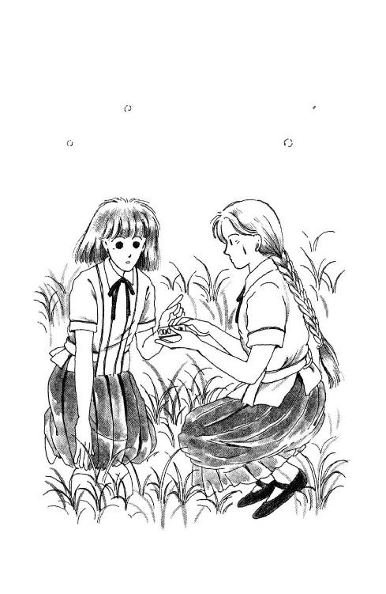
「しっ！」
あたしは、杉丸の肩を押さえつけて、しゃがみこんだ。
校門わきの藪の中。登校してくるひとたちがすぐ鼻先を通っていく。
生徒だったらまだいいけど、先生がたに聞かれると、この計画はおじゃんになっちゃう！
「あたしの席じゃ、後ろすぎて音がはいらないと思うから。百二十分テープだから、回しっぱなしでいいの。簡単でしょ。お願いよ!!」
「いいけど、何にするの？」
首筋を搔きながら杉丸が尋ねた。
「パパに聞かせるの」
「え？」
「あたしが、日頃、どんな授業受けてるか、パパやママに聞かせてみたいの」
ふくらはぎをひっぱたきながら、あたしは答えた。
あん、また、耳もとにっ!!
ここ、蚊が多い！
「ミシェール......」
杉丸は、情けない顔でウォーキー（録音できるやつ!!）とあたしを交互に見た。
「なんか、こういうのってあたし......」
「どうして？ だって、何も悪いことするんじゃないわ」
「でも、じゃなんでこんなとこに隠れて」
「だから。みんなにも先生にも意識してもらったら困るからよ。ありのままの、普段通りの授業じゃなきゃ、意味ないじゃない」
「............」
細めた横目であたしを見ていた杉丸が、急にぴしゃん!! と自分の頰をたたいた。
にっこり笑って見せようとしたんだけど、あたしの顔の周りにも、ぶ──ん、って聞いてるだけでくすぐったくなるようなのがいて、落ち着かない。
あ、また。やだ、背中に入ったんじゃない？
「わかったわかった。も、出よ」
ごそごそ、もぞもぞ。
「や、やってくれる？」
もぞもぞ......パン！ ぱしぱしぱし。
「だって、こんなとこにいるの、もーやよ!! で？ どれがスイッチ？」
一時間めの国語が、ぶじ終わった。
それとなく見ていたけど、杉丸ったら、みごとなまでのポーカー・フェイスで、大胆にも、腿の間、スカートが窪むあたりにウォーキーを置いてるらしい。机の中に入れといてくれるより、そりゃ、ずいぶん音は拾いやすいだろうけど......。
わざと杉丸の横を通るようにして廊下に出ると、しっかりついてきてくれたのはいいんだけど......なんでノートなんか持ってるんだろ？
すぐわかったわ。
杉丸ったら、さりげなく廊下の壁にもたれて広げたノートで顔を隠すようにしてる。あたしが声をかけようとすると、待って！ と言わんばかりに片手をあげて、カサカサ横歩きで近づいて来るのよ。
いいけど......こんなことしてるとかえって目立つんじゃないかしら......。
「うまくいってるわよ」
杉丸は、ノートを見たまま、恐ろしく小さな声で囁いた。
「ほんと？」
しかたないから、あたしも、あさっての方角を見たまま答える。
「ね、スカートの中はおヤバいんじゃないかなあ。布ずれの音ばっかりになっちゃうかもしれないし、落としたら大変よ」
「そうか。いい考えだと思ったんだけど」
「だってあたしのとこからだってわかったわよ。あんたの周りのひと......うららとか、何か変だと思ってなかった？」
「寝てたみたい。でも、いいわ。次から中にする。次は......ツルか」
「頼むわよ」
行こうとしたのに。
「待って！」
がばっ、と袖をつかまれた。
「ねー、ミシェール、なんかこうしてるとロマンチックじゃない？」
「そ......そおお？」
「そうよ。なんだか、女スパイになったような気がするわ......」
酔然と目を細めて遠い彼方を見つめたまま、杉丸は、ほにゃら～～、と微笑した。
「東洋の神秘、最後の間諜マタ・ハリ！ おお、確か映画ではエラ張り具合も気高いグレタ・ガルボだったわ。花の生命も顧みず、恋しいひとの許を去り、ひとり陰謀の渦中に飛び込んでいく美女......ああ。なんって哀しい運命なの!!」
「杉丸、杉丸、いいけどあんまり......」
「そうか。杉丸、って言うからには忍者のほうが似合ってない？ おお。真田太平記では、あの遥くららさまが女忍者をなさってたわね！ 良いわぁ......くららさん好きなのよ、だって、うららに似てるじゃない、名前が？」
忘れてたわ。杉丸って、異常に思い込みが激しいっていうか、その気になりやすい性格だったのよね。
人選を過ったかしら......。
ツル先生の授業の間中の杉丸の動作は、忍者というより、ＵＳＡ・フォー・アフリカで見たスティービー・ワンダーさんを思わせたわ。
「杉田？ おまえ、どうかしたのか？」
ツルさんがおっしゃった時には、どきっ、として、思わずシャープペンの芯を折ってしまった。
「な......なんでもありませんけど？」
「じゃ、なんであしかの真似してるんだ？」
幸い、それ以上の追及はなかったのだけれど......。
「まずい。敵は勘づいているかもしれぬ」
次の休み時間に廊下に出ると、すぐ、杉丸はヤモリみたいに壁にはりついて、油断なくあたりに視線を配った（なんでそんなことする必要があるのよぉ！）。
「次の指令は？」
「あのさ、できるだけ目立たないように、こう、いつもと変わらない普通の杉丸でいて欲しいんだけど......」
「心得た！」
あのねぇ......その、サカサカいうすり足が、もう充分に人目についてるんだけど......。
通りがかったひとたちが、みんななにやら怪訝そうなお顔で耳打ちしている中を、あたしはごまかし笑いしながら教室に戻った。
「......ですから、おむつというものの当て方は、男児、女児、それぞれで違います。つまり、われわれ人間は、赤ちゃんの時から、はっきり、男と、女に、わかれている、と、いうわけですね」
黒板には、丁寧な字で大きく『育児』と書いてある。
家庭科の根岸先生は、お化粧の白すぎるお顔を、気取った感じにちょっこりと傾けて、みんなの胸に先生のことばが収まるまで、待ってるようだった。
「はいそれでは。みなさんで、正しいおむつの当て方、畳み方を練習しましょう。用意して来ていただいたおむつモデルを出してください」
あたしは急いで、ノートの端にたたんでおいたミニチュアおむつをひっぱりだしたけど。
あーっ、という声が教室中に広がった。
先週の家庭科の終わりに、みんな、適当な紙を切って、原寸の十分の一のおむつの模型を（要するに、細長い紙をただ貼り合わせて輪にしたものを二枚）作って持ってくるように言われていたのよ。でも......。
「しまったー......」
「忘れてたよぉ......ちょっと、急いで！ 急いでノート千切ってさ、なんとか」
「だって、糊がないのよぉ」
「テープ、 テープ」
「そんなもんあるわけないじゃない!!」
覚えてたひとは、三分の一くらいだったみたいね。
ふう。しかたないかもしれないよ。
あんまりいろんな科目の宿題だのテストだのがあって、あたしだって、メモに書いて筆箱の中に入れて確認しておかないと、忘れそうだったもん。
「なんです？ さ、出して。出しなさいっ!!」
先生は、みんなの間を回りながら、おむつモデルを出してないひとの机を、いちいちエンマ帳（註８）でひっぱたいて歩いた。
「ないの？ あんたも？ ......あっそぉ。おりこうちゃんねぇ。つけるわよ。つけとくわよ、エンマ帳にっ!! ......ふん！ まったく、しようのないガキどもめ!! おむつモデルがなかったら、畳み方の練習ができないだろう、ええっ？」
その間にみんなは、ちゃんと作ってきたひとで、無事先生が通過しちゃったともだちのおむつモデルを、ものすごいスピードでこっそり回してる。
うふ。こういう時は、おみごとね。チーム・ワーク。
あ......末金さん、ないみたい！
「末金さん、ないの？」
「ないのよぉ。すっかり忘れて......」
「じゃこれ」
あたしは、余分に作ってあったおむつモデルを出した。
「みんなに回して。あと四人分しかないけど」
「ミッキー!! 助かるよ」
ううん、って首をふってる間に、おむつモデルは四方から伸びた手にさぁっ、と奪われて、みるみるうちに消えてしまった。
「どうしてこう、揃いも揃って頭の悪いのが集まったもんだろうねぇ？ わたしが何だって、美味しいお料理だの、楽しい手芸だの、おまえたちにまかせっぱなしにしてりゃいいもんじゃなくて、のどをからしていっぱいしゃべらなきゃならない、育児、なんてもんを選んだか、おまえたち、わかってんのかい、え？」
目の前の机に骨ばったお尻をどっかりと乗せられて、思わず顔をそむけた宮野さんのポニー・テールを、先生はぐいっ、とひっぱった。
「死にたくないから。死にたくないからだよっ!! みなさんがたのご立派なおつむで、包丁だのコンロだの断ちばさみだの針だのふりまわさせりゃ、死人が出たって不思議じゃないだろうが、ええっ!?」
すごいわ......。
この先生って前からずいぶんヒステリックだとは思ってたけど。
こんなの、とっても、パパになんか聞かせられない。そんなことしたら、きっとすぐ転校させられちゃう！
「だいたいねぇ、おまえたちにはやる気ってもんがないよ。あたしが何か、難しい、おまえたちの手に負えないようなこと、してきてね、って頼んだって言うの？ たかが、おむつの模型だよ。たかが、切って、貼って、終わりだろうが!! 教科書にもちゃぁんと書いてあるし。脳みそがあったらできるよ。誰にだって。それをっ!! なんでやってこないのさっ!?」
先生は、しどけなく机に乗り上げて、宮野さんの後ろの席の美土里さんの頰を、関節の突き出た指で不気味にやさしく辿った。
「ねぇ。こんなに色気づいちゃって、いつ赤んぼができたっておかしくないだろう？ 今、練習しておかないと、どうやっておむつするのか、わかんなくなっちゃうよぉ？」
「いいです」
「なにい!?」
美土里さんは真っ赤な唇をへの字にして、にやっと笑った。
「パンパースでもいいし、ムーニーちゃんも、マミー・ポコもありますから、困らないわ。確かに先生と違って、いつ素敵な恋をするかわかんないけど、大丈夫です！」
「このガキぁ!!」
先生はエンマ帳をふりあげ......ふりあげたまま、くしゅくしゅと笑った。
「いいわよ。いいの。あたしは体罰はしないんだから。......あそーぉ。植田さんは卒業したくないのよね。来年もあたしの授業、聞きたいのよねぇ、ほほほほほ......あら」
笑顔の生命は短かった。
「......西在家さん......？」
「は？」
うららが横を向いて、完璧に平常心のままの表情が見えた。
「これ、何かしら？」
「はぁ。おむつの、ミニチュアですが」
「これが？」
先生がつまみあげたのは......。
やだ。アンネのあれなの。
「どうして？」
「ええ。あたしも、彼と相談して、おむつは清潔で手間のかからない使い捨てのにして、そのぶん愛情はたっぷり注ごうね、って決めたんです。お互いまだ本分は勉強ですから。だから、ミニチュアっていうと、ちょうどこのへんじゃないかと」
大真面目に答えて、みんながきゃあきゃあ喜ぶのに当惑したような顔さえみせる。
やぁね......もう。よく自分で吹き出さないもんだわ。
「く......くそガキ!!」
先生は、うららの言うところのミニ・おむつを、ぴしゃっ、と叩きつけて、教卓に戻りかけた。
その時。
「う......うららっ......!!」
杉丸が、がたっ、と机を揺らした。
「うそでしょ、彼だなんて、彼だなんて......」
ばかばかっ!! そんなの、うそに決まってるじゃない!!
杉丸ったら、このあたしにだってわかるのに、なんでそんなの本気にするのよぉ！
ほら、うららだって、黙れ、ってジェスチャーしてるのに、そ、そ、そんなに、そんなに机揺らしたら......忍者の使命はどーしたのよ、こら杉丸!!
「いーから、ちょっとま、後で」
「ごまかさない！ 答えてよ、うらら、あんた、あんたほんとに、そんな、赤ちゃんができるようなことをっ!?」
「だから、じょう......だ......」
「じょ、情事ぃ!?」
わぁっ!!
立つんじゃないー!!
がた！ がたん、がったん、ごっとん、ごと。
杉丸が立った拍子に、机が傾いて、あたしのウォーキーは、あちこちぶつかって落っこちたあげく、ちょうど机と机の間の通路の真ん中に、止まっちゃったのぉ!!
「なんだこれ？」
と、うらら。
「なぁに、それ」
と、先生。
先生は、エンマ帳を左手に、パシンパシン音をたててぶつけながら、ウォーキーをあわてて拾って後ろ手に隠した杉丸に、じりっ、じりっ、と近づいて来た。
「それなぁに？ 杉田さん。見せて」
「あ、あの......これは......ちょっとその」
「見せなさいっ!!」
「杉丸、パスだ!!」
「こ、これっ!!」
先生があわてて手を伸ばした時には、ウォーキーは宙を飛んで、うららへ、そして美土里さんへ、加田さんへ、日向さんへ......。
「こっちだ、こっちだ!!」
「やっほー！」
「不要な私物の持ち込みは、没収よっ!!」
先生が金切り声でわめく間に、ウォーキーは、どんどん回ってく。
「何？ 何なのそれ？」
「何だ、ウォークマンじゃん」
「やめなさいっ!! よこしなさいっ!!」
「違うよ、知世（註９）のウォーキーだよ」
「ええっ、杉丸、こんなもん、なんだって」
高井さんへ、前島さんへ、奥山さんへ......。
「よこしなさいっ!! 触ったひとは全員始末書ですからねっ!!」
ああっ......もうだめだ!!
「それ......それ、わたしのです!!」
みんなが、立ち上がったあたしのほうを見た。
目を丸くしていた先生が、ゆっくり、からだをこっちに向けた。
「浅葉さんの？」
「はい」
「ほんとに？ かばっているんじゃないの？ 杉田さんを」
「いえ。あたしが杉田さんに、頼んだんです!!」
あたしは、奥山さんのところまで大股に歩いて、受け取ったウォーキーを掲げた。
「ここに、シールが張ってあります。浅葉未来、って書いてあります」
あんなにみんなの手を飛んできたのに、ウォーキーの録音ボタンはまだ押したままになってた。あたしはそれを止めて、歩いていらした根岸先生の手に渡した。
「どうしてこんなもの？」
ひっくり返して見ながら、先生は顎をつきだした。
「......それは......」
「どうせ、なにかくだらない音楽でも聞いてたんだろうけど......どうして、それをあなたが、授業中に、杉田さんに頼んだの？」
「そ、そうじゃありません！」
「じゃ何？」
「あのう......」
どうしよう？ どうしよう？
ほんとのこと言ったら、先生きっと、もっとびっくりする。言わなくても、きっとお取り上げになっちゃって、ご自分で、あの迫力のセリフを聞くことになる。
音楽だって思っていただいてたほうが、平和かもしれない......。
「どうしてあなたがこんなこと......困ったわねぇ。いい、浅葉さん、こういうことすると、没収になるのよ。知ってた？」
「ええ......あの......」
「はっ！ まただよ」
小西さんが何か投げるようなかっこうをして、憎々しげに言ったわ。
「どいつもこいつも、そいつには甘いんでやんの!! なんでさっさと取り上げないわけ？ まったく、ばかにしてるよなぁ！」
「......没収します」
先生はウォーキーを持ったまま、教壇に戻りそうになった。
ああ。取られちゃう!!
やだ。
それ、あたしの持ってる唯一のラジオだもん。取り上げられたら、麗美さんがいつもお聞きになっているはずのラジオ講座、いっしょに聞けなくなっちゃう!!
思ったとたん、言ってしまっていた。
「それ、変な音楽なんかじゃありません！ 授業です、今の、先生の授業なんです!!」
「え？」
「今のだけじゃありません。あたし、いろんな授業、録音して、あの......家で復習する時に聞くことにしてるんです!!」
根岸先生のやせぎすの顔が、だらん、と緩んだ。
「うそ」
「ほんとです。あの......実は、席が遠くて、耳が......その、夏にちょっと中耳炎になっちゃって、よく聞こえないんで、前の席の杉田さんに頼んで」
あああ。ほんとだなんて。ほんとだなんて。
未来のうそつき!! なんでこんなに、すらすら、ほんとらしいことがでて来るの？
ひ～～ん......あたしはすっかり悪い子になってしまった!!
「なんだって？」
先生は、つけまつげのめだちすぎる目をパチパチさせた。
「じゃ、このテープには、音楽じゃなくて、授業で、つまり、今さっきまで、あたしがしゃべってたことが？ ......そんな！ ......あ、こ、こらっ!!」
先生の後ろから、そぉっとそぉっと近づいてたうららが、ウォーキーを取ったのっ!!
「小西!!」
「あいよっ!! ......ナイス・パス!!」
うららからウォーキーを受け取った小西さんは、にんまりＶサインを出した。
小西さんの位置は、とっても遠かった。
先生は茫然と、あたしと、うららと、小西さんと、小西さんの持ってるウォーキーを見た。
「......うそ......」
「さぁて、根岸せんせー」
ポキポキ指をならしながら、うらら、にっこり笑ったのよ。
「あれはこっちであずからしてもらいますよ。なかなか素晴らしい授業でしたからねぇ、ダビングして、みんなで保存しようかなー。ＰＴＡのかたがたにも、聞いていただいちゃったりなんかしてもいーなー」
「や、やめて！ ......そんなことしないで」
「ま、いいじゃないですか。授業、続けてくださいよ。ずいぶん時間を無駄にさせちゃって、ほんと、すみませんねー」
「こ......校長に聞かせる？」
「さぁ？」
「教頭にも？」
「どーでしょねー」
「ぴ、ＰＴＡ会長にも？」
「それって、なんか、うちの父親だったよーな気もするなー」
「......うそ......」
根岸先生は、いらいらと手を嚙んで、いじけた目でちらちら教室中を見回してたけれど。
「きょ......今日はここまでにしますっ!!」
がらがら声で怒鳴るや、せかせか教卓の上のものを集めて、出て行ってしまった。
「おーい、おいおいおい」
「やったじゃん!!」
「わーい、根岸のバカ野郎ー!! ヒステリーばばあ、ざまーみろっ!!」
「きゃっほ──っ!!」
教室中に、教科書やノートが乱れ飛んだ。
「ミッキー、ミッキー、サンキュ!! あんたのおかげだよぉ」
浜田さんが、きゃあっ、とばかりにあたしに抱きついた。
「えっ......そうなの？」
「そうだよぉ！ すごいね、どうしてあんな名案思いついたの？ 今の授業を録音した、なんてさ。根岸完全に本気にしてたよ!!」
「完全にって......だって、ほんとにほんとだもん!!」
「え──っ!!」
何人かのひとは、まだ、うそだぁっ、て顔してる。
「きっとほんとだよ。だって、ミッキー、そんなにとっさにうそなんかつけるひとじゃないもん♡ ね!!」
八木沢さんは言ってくれたけど......。
でも、実のところ、ちょっぴりはうそもついたんだよね、あたし......。
「でも、実際これっていい手だと思わない？ みんなでさ、カセット持ってくんの。堂々と」
「あ、そっか。全部録音されて、誰の耳にはいるかわかんない、っていったら、めったな授業できなくなるわけだ」
「うへーっ。そうかぁ。ミッキー、偉いっ！ 天才じゃん!!」
「え？ え？ あの、......あのね」
ちょっと待ってよ、あたし、そんな大それたことを考えたわけじゃ......。
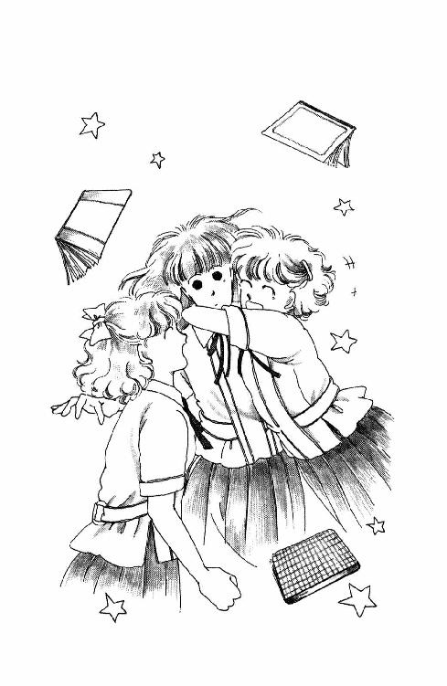
「没収されない？」
「だって、家に帰って復習するためなんじゃんさー!!」
「すごーい。柿間の授業なんか、是非、うちのかーちゃんに聞かせたいわ」
「寝ちゃったりして」
「おまえみたいなバカがこんな難しいことやってんのかって、尊敬されたりして」
「だよー、あたしらが毎日どんなつまんないコト我慢して過ごしてっかわかったら、同情してもらえるよ、きっと」
「そうだ。これはあたしたちからセンセーたちへの、テスト返しだよ!!」
ど、ど、どうしよう......。
なんかあたし、すごーくいけないことを率先してやってしまったような......。
でも、みんなこんなに喜んでるし、実際、先生がたが、良い授業をしてくださるんだったらそれはちっとも悪いことじゃないはずだわ。
そうよ。生徒本人たち以外に聞かれたら困るような授業は、なさるほうがおかしいんだもの!!
「......おい。浅葉。ほら」
いきなり、ぐい、と目の前にウォーキー突き出されて、あわてて顔をあげると。
小西さんが、むっつりした顔でどこか関係ないほうをにらんでたの!!
「あ。ありがとう......」
「いや」
......うわぁ......うわぁ......!!
すぐ、背を向けて行っちゃったけど......。
あたし、あの小西さんと、ちゃんとお話したんだ！ ついさっきまで「また、ひいきだ」って言ってたのに、あたしのとこまで、わざわざ、これ届けに来てくれたんだ!!
小西さん......あたしのこと、もうそんなに嫌いじゃない？ もう、憎らしいって思わなくなってくれたの？
「ごめん......ミシェール......あたし、取り乱しちゃって......」
「杉丸！」
杉丸は半べそ顔でしょげている。
「やだ、あたしのほうこそ!! だって、杉丸はちゃんと、やだ、って言ったのに無理に頼んで迷惑かけたんだもの。ごめんね」
「それ、壊れなかった？ あたし、落としちゃったから......もし、だめだったら、あの、ちゃんと貯金で弁償......」
「大丈夫よぉ、ちゃんと回ってたもの。......聞いてみよっか？」
「そうね」
イン・イヤー式のステレオ・イヤフォンをふたつに分けて。
「うわー、すっごーい、バッチリ!!」
「ほんと」
「ちょっと、ちょっと貸して......うへっ!! 怒鳴ってるゥ!!」
「あたしにも聞かせて、あたしにもー!!」
いろんなひとが寄って来て、イヤフォンを取ろうとするから、あたしはコードでぐるぐる巻きになる。
なんだか......なんだか......とっても、一体感じゃない？
「うぇぇ。なにをみんなして女同士でくっついて。おおー気味わりー」
その声に、杉丸がハッ、としたのよね。
「そうだわ、うらら！ あんたその、お腹の子の父親って、いったい誰なのっ!!」
「げっ！ ......待て、落ち着け、杉丸」
「誰なのっ!! 白状しなさいっ!! 殺してやるんだからっ!!」
「そんなのいないって。あたしがそんなドジをするわけが......うわぁ！ ひっかくな、こらこらこら」
へんな冗談、言うからよ。
３
九月の後半になって、海はほんの少し荒っぽくなった。
まるで、夏じゅうずっと愛想良くサービス良くしてくれたことを突然後悔してしまったみたいに、よそよそしく気紛れで、いっそ憎らしいくらいよ。
「......やまないねー」
うちの老朽ボート・ハウスの軒下に立った一穂さんは、深くかぶったヨット・パーカーから突き出したお鼻を天に向けて、ぽっそりとつぶやいた。
「でも、もう少し待てば......きゃ!!」
外を覗こうとしたあたしの頭を、大きな雨つぶが直撃したのよ。
とっても冷たい。
「俺も、午後になれば少しゃいいんじゃないかと思ってたけどー、だめだぁね、こりゃ。まだ、マリーナのほうにでっかい雲あるし。まず、やまんね」
「つまんないのぉ」
せっかくの日曜なのに、いじわるな雨。
昨日からずいぶんどんよりしてたけど、今朝になってとうとう降り出しちゃった。ざあざあ大雨だったら、いっそのこと気持ちよくあきらめるのに、しょわしょわ煙るような霧雨で、わが『ミッキー』チームは未練たらしく集まってしまったんだけど、ほんとね、だめみたい。
空も海も砂浜も重苦しく灰色になっちゃってる。
朱海さんと尚志さんを乗せて沖に出ている『ミッキー』の帆が、まるで、校庭に落っこちた紙屑みたいにたよりなく、あっちこっちに揺れている。
小屋の中に引き込んだデッキ・チェアに座って、あたしはそれを、ぼんやり見てたの。
バートさんは、どことかのフィルム・センターに出かけた時お知り合いになった米国人さんとすっかり意気投合しちゃったとかで、このごろさっぱりヨットには参加なさらず、今日もそのひとといっしょにどこか行ってしまったそうだし。一穂さんはさっきまでうららといっしょに、以前みづゑさんが置いてっちゃったウィンド・サーフィンなんか引っぱり出して元気に遊んでたから。
あたしは、ずっと、ふてくされた顔でそばに座ってる羅士丸とふたりっきりだった。
なんだか、すっかり秋だなー、と思う。
あんなに光でいっぱいだったのに、あんなに緑が鮮やかだったのに。ちいちゃかった羅士丸もいつの間にか背が伸びておとなびた顔つきになって来ちゃったし。制服だってもうじき衣替えだわ。
この夏は、ほんとうにいろんなことがあったけど、みんなもう過ぎちゃったのね。
このままなにげなく冬が来て、なにげなく今年が終わって、お正月が来て、ひょっとすると雪なんかも降って、あたしは中学生じゃなくなるんだ。でも、いったい、どこの高校に行くんだろう......!?
......あー。もーやめやめやめっ!!
もう。天気が憂鬱だから、一番考えたくないこと考えちゃうんじゃないのっ!! お陽さまのバカッ!!
なーんか頭が重たいなあ。風邪っぽい。
さっき、舟を出すのを手伝って膝くらいまで水に入っちゃったんだけど、その冷たいことといったら......ぶるるっ!! 思い出しただけで震えちゃう。
いつもより上下半身とも二枚ずつは多く着てるのに。体の芯のほうから、なんだか時々ぞくぞくして......して......。
くしゅっ！
「家に入ってれば？」
一穂さんが振り返った。
「平気です。一回くらい乗りたいから、待ってます」
「......知らねーよぉ、風邪ひいちまってもぉ」
「平気。......あ、ごめんなさい、座りますか？」
「あ、そんな、いいっすよ。俺、ケツ濡れてっから、遠慮しないで」
一穂さんは、隙間のある歯を見せてにこっ、と笑ったけど、それがなんだか、妙にぎごちなかった。
......と、思ったら。
「......あの......あの、それよかさー。良かったらちょっとそのぉ......話があんだけどもぉ」
「あたしに？」
どうりで。
うららひとり置いて小屋に雨宿りしにくるなんて、変だと思った。
膝を抱えて、座りなおしたあたしに、軒先に立ったままの一穂さんはカクカクッ、とうなずいた。
「なんですか？」
「いやその......あのさ、イエモトが言うにはぁ、そーゆーことはおまえの口から直接聞け、ってさ、あんま、その、ひとりで悩んでるよりか、とにかくなんか行動してみないことにはしよーがないとか、その」
「......え？」
「そーゆーわりに自分はどーだ、っつー問題とか、まぁ、いろいろあんだけどもぉ、やっぱ、俺はあいつみたいに辛抱強くないし、こっ、こっ、こっこういうことはその、思いたった時がそのタイミングかもなぁ、なんて......」
「......？？？」
「......わ、わかんねー？」
「ええ」
「だめかぁ......」
一穂さんは真っ赤な頰を両手で押さえた。
「だからあの、あのさぁ......あの......うっ。言うぞ。言う。......さっ、逆井さんのことなんだけどぉっ!!」
ずりっ。
思わずデッキ・チェアを滑り落ちそうになったあたしに驚いた羅士丸が、飛び上がってバフバフ吠えた。
なぁんだ。トコのことかぁ。
あたしはまた、この悪天候であたしをパートナーにするのは怖いから、今日のとこは『ミッキー』あきらめて、さっさとお家に帰りなさい、とかなんとか言われるかと思って、身構えてたのにぃ！
「トコがどうか......」
......あっ!!
言いかけて、あたし、思い出したのよ。
そう言えば。ずうっと前に、トコが麗美さんたちといっしょにヨットを見に来た時、一穂さん、トコのこと、ちらちら見てなかった？
思えば一穂さんだって第二次性徴を終えられた男性なんですもの。異性に関心を抱いても不思議じゃないわ。
トコはかわいいし、賢くて勤勉だし、おきゃんで純粋でロマンチストで気風がよくて......ああ、とっても素敵な子よ!! 一穂さんがみそめるのも無理ないわ！
そうだわ。トコだって、ヨットに乗りたいって言ってなかった？ その上一穂さんが、トコとおともだちになりたい、って思ってくださっているなら、これは是非一度、トコのこと、あたしたちのヨット遊びに参加させてあげなくっちゃ!!
「あ......はははは。や、ややっぱりいーやっ、ごめんっ!!」
「あ、ちょっと待って!!」
歩きだしかけたままのかっこうで、一穂さんは硬直した。
「トコのこと、気にかけてくださったなんて嬉しいです!!」
歩きだしかけたままのかっこうで、一穂さんは細かく震えた。
「もしも、もしも良かったら、今度トコ連れてきますね」
歩きだしかけたままのかっこうで、一穂さんは百八十度回転し、こっちを見た。
「ほんとに？」
「うん」
「は──」
へなへなへなっ、と崩れるようにして、一穂さんはあたしのすぐ隣の床にしゃがみこんだ。
「なんでぇ、知ってたならさぁ、もー少し、それとなく気ぃつかってくれればいいのに」
「ごめんなさい。そんなにはっきりわかってたわけじゃ」
「やっ！ そんなさ、あやまってもらってもぉ、困るんだよな、はっきりしない俺が悪いんだからさぁ......へへへ......あー、汗かいちまった」
一穂さんはパーカーごと、被ってた野球帽を脱いで、ぐるぐる顔をぬぐった。いつものトサカ頭のてっぺんがつぶれてて、なんだか違うひとみたい。
「......まいったなぁ、そんなに見るなよ。照れる。......うう、いや、あのさぁ」
ひとしきり、唇をしめらせて、
「ちょ、ちょっと聞かせてもらえるかなー。逆井さんのこと」
「いいですよ」
「えっと、じゃ、趣味はなに？」
「うーん......少女小説を読むことと......音楽かな？ エレクトーンが上手なの。それから、バレエと、宝塚も。女の子らしいロマンチックできれいなものが大好きなんです。レース編みも得意だし、レモン・シフォン・パイを作ってくれたこともあるわ」
「......エレクトーンと、宝塚と、レモン・パイ......」
一穂さんは額に手をあてて唸ったの。
「......な、なんの接点もない......ど、どうすりゃいいんだイエモト......」
「え？」
「い、いや、ちょっと待ってね。......えーと......あ、その、エレクトーンで何を弾くの？ ユキヒロ（註10）なんて嫌いかな？」
「ゆきひろ？ それ、なんですか？ トコはよく、モーツァルトやハイドンのピアノの古典派をアレンジして弾いていましたけれど」
「こ......こてんは？ ......ははははは、だめか......。ほんじゃあの、ディスコ......には行くわけないだろうし......あの、映画とかは、観る？」
「そんなには。華雅では、学校指定以外の映画を観てはいけないことになってるんです」
「か、歌手なんかでいうと、どーゆータイプが好きそう？」
「田坂ひまりさん」
「？ ......聞いたことがねーなー......？ だ、だ、だから女じゃなくてさ!!」
「さぁ......トコの口から男のかたの、悪口じゃない評価って聞いたことがなくて......」
「ううう......さっぱりわからねーな。......じゃ、もういいやっ！ ねー、逆井さんってさ、好きなひととか、いるの？」
「好きなひと？ ええ。いますけど」
「え？」
たちまち、一穂さんの表情が止まって、それから、急にくしゃくしゃっ、と歪んだ。
「あ、あはははは、なんだー。やっぱなー。やっぱそーかー。ぐわぁぁん！ だぜ。あっ、わかったー。だから未来ちゃん、あきらめさせようと思ってえ！ 俺の気持ち知ってたけど、知らないふりしてたんだべー。なっ？ そーだべ！」
「いいえ、そんな！」
あたしはきっぱり首を振った。
「ただ、一穂さんももうお気づきかと」
「え？ う......うそだろ......なんだ、じゃ、俺の知ってるやつなんかよ？ ま、ま、まさかイエモトのやつだなんつーんじゃ......」
「どうして朱海さんが出てくるんですか？ 加奈子さまよ」
「......へ......？」
一穂さんのまん丸い目がぱちぱちした。
「千葉加奈子さまのことですけど？ 覚えてませんか。こないだ、蛍の時にいらしたおねえさまの、髪の長くていらっしゃるほうのかたなんだけど......」
一穂さんは、形容しがたい発音のことばをおっしゃった。
「そらいいけどねー......あのねー未来ちゃん、俺が言ったのはぁ、......だから、逆井さんに、誰か付き合ってる男とか、いないわけ？」
「そんなひと、いるわけありません！」
「ほ、ほんと!?」
「ほんとです。だって、トコ、男のひと嫌いなんだもん」
「......あ......」
一穂さんは、ぱさっ、と目のところまで野球帽を被った。
「なんだぁ。そうかぁ」
「あ、でも、でも、そんなにがっかりしないでください！ トコだって、このごろはもう前ほどじゃないと思うの。前は、あたしがみなさんといっしょにヨットしてる話でさえ、聞きたくないって言ってたけど......ほら、この間のバーベキューの時なんて、自分からはきはき手伝ってたし......もしも今でもヨットに乗りたいって思っていれば」
......ああ、でもそれって違うのよねぇ。
ほんとは加奈子さまが男のかた連れていらしたから、トコと杉丸ふたりして、やけっぱちになってただけなのよね。なのに、こんなこと言ってしまうなんて......。
いけない。このごろあたし、気がつくと口先でその場をごまかしてる。
ふぇぇん、なんかあたし、とっても、とってもずるい子になっちゃったんじゃないかしら？
「いや、だからさー俺もねー」
一穂さんはしゃがみこんだまま下唇を突き出してもごもご言った。
「わりかし望みがあんのかなー、なんて思ったからさー。川原行った時、それとなく近づいてみたんだけど、なんか、邪険っつーかさ、全然無視されてる感じでさ」
「......はぁ......」
それはきっと加奈子さまが、トコのほうをご覧になっていなかったんだわ......一穂さんもお気の毒に......。
「バーベキューやってる時なんて、ほんっとやさしかったのにさー、てーんで違うんだぜ。何なんだよ？ まったくさ、わかんねぇよ。女って、何考えてんだべ？」
「......あの......その、悪気はないと思うんですよ、ただ......」
「俺だってさー、何もね、すぐ、その交際、とか、そんなことは言ってねーよ。たださー、自分からさ、その気がありそーにしといて、こっちがようやく勇気だしてしゃべりかけたら、なんか鬼でも見たよーな顔して逃げるっつーのはちょっと......こっちだって傷つくぜ」
「......はぁ......」
そうだろうね。そうだよね。
男のひとだって傷つく時は傷つくんだろう。そんなこと、考えてみれば当然なんだ。
なのに。あたしは考えてみなかった。トコと杉丸のことばっかり心配して......一穂さんに、そんな変なとばっちりが行ってるなんて、思いもしなかった。
「はー。やっぱだめかー。ならまぁ、いいけどさ。女の子とつきあうのって、けっこう疲れそうだから」
「......疲れる？」
「ああ。......あのね。ゆーとなんだけどね。未来ちゃんだって」
......え？
一穂さんは、帽子の影からちらっ、とこっちを見上げて、またすぐ、向こうを向いてしまった。
「例えばさっきだけどねー。未来ちゃんがひとことしゃべるたんびに、なんか俺、喜ばされたり、がっくりさせられたり......おもっきり悪く取るとさー、なんかこう、もてあそばれてるんじゃねーか、って気だってしちまうんだよねー」
「そんな！」
「気ィ抜けちまってさー。なんか、はぐらかされてる、っつーか、しっくりしないのな」
「ご......ごめんなさい......」
「いや、わざとじゃないだろーから」
一穂さんの帽子の先にぽそんぽそんと雨つぶが落ちた。
もてあそぶ......？ はぐらかす......？
あたし、あたし、そんなこと......？
「別にね、あんたを責めているわけじゃないんだけどね。そーゆーのが快感なやつもいるかもしれないから。ただ、俺はそれじゃ、イエモ」
「おーい！ 何ふたりして『の』の字書いてんだよぉ」
能天気な声に顎をあげると、ウィンド・サーフィンをやめたらしいうららがウェット・スーツからざばざば重そうな水をしたたらせながら、こっちに来るとこだった。
きゃあ！
ぶるぶるぶる......見ただけで寒い！
「ひどく降ってきやがったぜー。ちょっちいれてくりー！」
「......そういえばあれも女だったな」
一穂さんがお尻をはらいながら立ち上がった隙間に、濡れねずみのうららが飛び込んで来た。
「やーまいったまいった。ちーいとも立たねーぜ。まるっきりインポでやんの！」
「......確か......確か女だったと思うんだけども」
「え？ なんか言ったぁ？」
「わん！ うらら、水飛ばさないで!!」
「あ、ごめんごめん。......ちぇー。むつかしくてさー。みづゑさんにできんだからあたしにできないはずないのになぁ」
うららは狭いヨット小屋の奥のほうにいって、羅土丸みたいに、ぷるぷるぷるっ、と頭を振った。
「無理ねーべ。今日は変な風吹いてっから」
「あらかばってくれんの？ んまっ！ 好きよ、一穂!! うう、ううう、しっかしこー濡れっちまうと、止まってるほーがさみーぜ。兄貴たちまだ？」
「そろそろじゃねーかな？」
「もーあがるんだろ？」
がたがた震えるうららに、ポットの紅茶を差し出しながら、あたしは一穂さんの顔を見た。
こんな悪天候の時は、うららとあたしの非力おへたチームじゃ出航させてもらえない。昼からずっと待ってて、少しは波風が収まって来たとこで、まず、具合を見るために、一番お上手な朱海さんと尚志さんのチームが出ていったから......次に乗るとしたら、一穂さんに、あたしかうららかのどっちかが連れていってもらう形になると思う。
乗りたい。せっかく舟を出したんだから、一回くらい乗りたい。
あんなに遠くまでじゃなくてもいいから。十五分でもいいから、乗りたい。
だけど、うらら、唇を紫にしてる。
そんなに冷たい海に、もし落ちたりしたら危ないよね。風も強いし、夕方みたいな変な天気で波もよく見えないし。
危ないってわかってる時、したい気持ちを抑えるのも、ヨット・マンの心意気だよね。
今日は、だめか。
「......あきらめます」
小さく言うと一穂さんは、ぽんぽん、ってあたしの頭をたたいた。
「そんなにがっかりしないでさ。次があるから。......まぁ、これからぁだんだんこんな日が多くなるけどな。こう水が冷てーんじゃあ......せいぜい十一月いっぱいかな」
「日曜っきゃできないしねー」
と、うらら。
「せめて晴れてくれりゃいいけど。あと何回できるかなぁ」
「ああ。春になりゃあ......俺らも三年だしなー」
......高校三年生......。
ぽんぽん叩かれた瞬間から、なぜだかキュッ、となっていた胸が、その言葉を聞いたとたん、しんしんと痛くなってきた。
そうだ。
来年の春になったら、朱海さんたち忙しくなっちゃうんだ。もうあんまり、ヨットに乗せてくれられなくなるわ。きっと。
でも、大学生になったら、大学生になったらまた......でも！ でも。もし、近くの大学じゃなかったら？ 朱海さんと一穂さんと尚志さんが、みんなばらばらの学校に行ってしまったら？ 朱海さんたちだけじゃない。あたしも。あたしだって、どこに行くのか、何をしてるのかわからない。そうよ。うららだって！
ああ。
みんなどんどん変わってく。今年の、この、チームがいつまで続くのかわからない。わかっているのは、いつかは、きっといつかは、終わりが来るってこと......。
わぁん!!
やだ。そんなのやだ。秋なんて嫌い。こんなこと、つい考えちゃう秋なんて嫌い。夏が良かった。夏の真っ只中にいた時、夏が終わる時のことなんて何も考えなかった。『ミッキー』にだっていっぱい乗れたし、みんなでいっぱいいっぱい楽しいことできた。あのまま、永遠に続くんだと思ってたのに......ほら、もう、今日でさえ、海はあたしたちを拒んでる。秋だから。夏は過ぎたから。パーティーはおしまいだから。
今年の夏は、きっと、一生で一番素敵な夏だったんだわ。
だけど、もう、過ぎてしまった。二度と来やしない......。
二度と......。
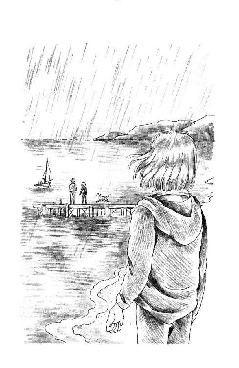
「あ。おい、イエモトたち戻ってくるみたいだぞ」
「ほんとだ！」
飛び出したうららたちを、あたしもあわてて追いかけた。
「オッケー、ラフして、ラフして......着くぞー、おーい、うららバウ・ロープ取れよー」
着艇に入った朱海さんの声が風に吹き飛ばされて、跡切れ跡切れに耳に届く。
「あいよー」
そばで見ればまた一段と、どす黒く気味の悪い海の上を、『ミッキー』は滑るように近づいて来る。
「どんなぐあいぃ？」
うららが怒鳴ってる。
「うん。七メートルってとこかな......突風が吹くんだ。今日はやめたほうがいいなー!!」
やっぱり、今日は乗れないか。
それでも、今日はいい。来週が、この次があるから。
いつか、これで最後だっていう日が来たら、どんな気持ちがするんだろう......。
近づいてくる小さなディンギー。濡れた桟橋を一穂さんの白いパーカーとうららの黒いスーツと、びん、と尻尾をたてた羅士丸が走ってく。あたりは薄暗く霧雨に煙ってる。
きれいだった。
色合いはとってもきたないのに、なんだか、かけがえのない一枚の絵みたいにきれいに見えて、あたしはちょっぴり、その場に立ち止まっていた。
「じゃ、おばさん」
「どうも、お騒がせしました」
「まぁ......だめよっ!!」
庭から挨拶して帰ろうとしたみんなに、小走りに縁側に出てきたママは、両手を腰にあてて大きな声を出した。
「そのまんまのかっこうでオートバイになんか乗ったら病気になっちゃいますっ！ ちゃんとお風呂わかしてあるから、順番にはいりなさい！」
みんな顔を見合わせた。
ぺしょぺしょくっついた前髪、土気色の頰、濡れて重そうな服......。
「まずは女の子からよ。いっぺんにふたりは入れるから、あなたがた男性はちょっと待ちなさい。異議ある？」
「お、俺は、いいっす」
後ずさりしながら、一穂さんが作り笑いをした。
「ど、どうせ、自転車だから家帰るまでにまた濡れちまうしぃ」
「だーめ」
ママはきっぱり首を振った。
「自転車は置いていきなさい。主人の服があるから、お風呂であったまったら、しばらくそれを貸してあげます。あなたがたのその、きったないのは、みんなお洗濯して乾燥機にかけちゃうから、ちゃんと帰りには渡してあげられるわよ。急いで帰らなくてもいいんでしょ？ こんな天気じゃなかったら、もっと遅くまでヨットするつもりだったんだから。いやだって言うなら......二度とうちの庭に入れませんよ！」
「しかし、これじゃあんたン家大変すぎるよねー」
せっけんの泡の中からうららが言った。
「思えばこれまでは、暑いぐらいだったから、濡れてようとバイクに乗って帰ろうと平気だったけどさぁ。毎週毎週よそのガキが四人も来てざあざあ風呂入ってったんじゃ、ガス水道もバカになんないんじゃないの？ その上、お洗濯までしてくださるんじゃ」
「ほんらほと、ひに......気にしなくって、いひほひょ」
あたしは湯舟の中で、手を振った。なんだか、力がはいらない。
「ママにひてみへば、ほへへいんはははへをひふひょい（それでみんな風邪をひくより）......」
「え？ ちょっとミッキー!! やだ、あんた、しっかりして」
「へー」
だって、うららが洗い場にいるし。いくら女同士でも、まるまる裸んぼじゃ......。
うららは急いでお風呂場のドアをあけて、ばたばた風を入れた。
「なーによ、そんなけんめいに隠さなくたって見やしないってば。のぼせそうならさっと出ればいいでしょーが」
「ふにゃー」
「......ばかねー、まったく」
うららはあたしをひっぱり上げると、タオルをしぼって顔にぶつけた。
「ぎゃっ!!」
水でしぼったなぁ!!
「ごめんよ。あんたはゆっくり浸かってるのが好きなのかと思って、さっさとこすりだしちゃって。正気になった？」
「うん、ふー......もう平気」
「ほら、ちょっとここにお座り」
あたしの頭からざばっ、とお湯をかけると、じゃぼじゃぼシャンプーかけて、がしがし泡立て始めた。
「あ、いいよ、自分でする!!」
「なら、からだやっとき。さっさと洗ってあがっちまわないと、あいつら凍えるべさ」
「......うん......」
ドアはまだ半開きで、あたしにはすーすー気持ちよかったけど。
とろとろ撫でてる背中に時々さわるうららの脚は、ひやっと冷たかった。
「うららあったまっていいよ、風邪ひくよ」
「へーきだって。ちょっとそれ貸し。背中やったる」
うわー。
ひとに背中こすってもらうなんて、何年ぶりだろ？ 気持ちいい。皮一枚まるごとはがされるみたい。
「かけるぞー」
「えっ、もう？」
ざっぱーん！
「え......これ、あたしが着るの？」
小花プリントのワンピース、ローウエストの後ろがわにリボンを結ぶだけのすとんと単純なデザインで、体格が違ってもちゃんと着れると思って選んできたんだけど。
うららはぱんつひとつのままで、うそぉ、と苦笑いした。
「いいじゃない、入れば。ちょっとの間なんだから」
あたしはさっさと、サマー・セーターとスカートを身につけた。
「早くしないと、男のひとたち困るわよ」
そうだわ！
この後すぐ男のひとたち入るんだ。
あたしはあわてて、洗面器なんかをひときわきちんと片づけ、髪の毛が落ちてないかどうか点検した。一応もう一度お湯を流して、流れ残ってた泡なんかも始末する。
これでオーケー。
脱衣所に戻ってみると。
「......うわー。素敵じゃない、うらら、とっても似合うわ」
「そ、そおお？」
湯気で曇った鏡からふりむいて、うららは、にかっ、とわざとらしく笑ったけど。
ほんとにおしゃれ。
あたしが着ると、少し長すぎるぐらいなのに細い足首がひょんと飛び出してかわいいし、肩のあたりのシルエットも全然変わっちゃって、タオルを巻きつけたままの濡れ髪が、ちょうどターバンみたいで。
知らなかった。ボーイッシュな子が着ると、普通のお嬢さんっぽい洋服ってすごくナウく（註11）なっちゃうんだ。うわー。ずるいー。この服こんなに素敵だったのぉ？
「なーんか変じゃないー？」
「そんなことないわ。モデルさんみたいよ。そうだわ、それに麻のカーディガン羽織ったらもっと決まりそう!! 待って、取ってくる」
「あ、あにきたちに声かけてってよ」
「だって、まだ髪乾かしてないし。あんた行ってよ」
「このかっこでー？」
「そうよ、そのタオル、そのまんまでいいわよ」
「......そうなの？」
曇り鏡を指でこすって、うららは眉をひそめてたけど。
「まいーわ。たまには」
「そうよ」
階段を駆けあがっていると、男のひとたちのどよめく声が聞こえてきて、あたしはちょっぴり振り返った。
「はい、お紅茶です。少しあったかくなればと思って」
「ああ、ありがと」
縁側で羅士丸をかまっていた朱海さんが、にっこり笑った。
「ごめんね。うららに服まで貸してもらって」
「そんなこと。お先しました。お待たせしてごめんなさい。最後になっちゃったんですか？ じゃんけんにでも負けられたとか」
「いや。ひとりでゆっくり入りたかったからね、やつらに先に行ってもらったんだ。でも、あいつらちゃんとこすってるかなぁ。未来ちゃんたちのあとにしておけば、オトメの柔肌をつつんだばかりのお湯で気持ちよかっただろうに......惜しいことをした」
「......へ、変なこと言わないでください」
「どうして？ 正直な男の気持ちですよ」
すっかり陽灼け色に落ち着いてしまったお顔を、微笑ませる。
「まー、うららもいっしょだったかと思うと、残念さも半分になるけどね。......のぼせたんだって？ 大丈夫？」
「平気です」
「らしくん、大きくなったねぇ」
「ええ。でも、あいかわらずいたずらばっかり」
言われていることがわからないのか、羅士丸は朱海さんに撫でられてきゃんきゃん嬉しそうに尻尾を振った。
ヨットをしまってしまうと、いじわるな雨はまた小降りになった。
じゃれる羅士丸をかまって、ちょっとうつむいてる朱海さんの横顔の向こうで、時々軒から落ちる雨つぶに、縁側とお勝手口の間に植えてあるコムラサキシキブと海棠がおじぎするようにゆらゆら揺れてるのが、なんだか夢の中の風景みたいに遠く見えて、あたしはあわてて目をこすった。
「うららは？」
「あ、髪乾かしてます。あたしの部屋で。洗面所にいると、男のかたがた困るから」
「そう。......なんだかすっかりご迷惑かけちゃって」
さすが兄妹、同じことを言う。
「いいえ。母はにぎやかなのとっても好きなんです。今、みなさんに食べさせたい、ってはりきって、何か作ってます」
「いいおかあさんだね」
この庭に、朱海さんをひとりきり残して、じゃあ、って立ち去ってしまうのがなんだか申し訳なくて、あたしはその場にそっと座ってしまった。板張りの床が小さな音をたてた。
おでぶだからじゃない！ 家が古いのよ！
「お手伝いしにいかなくていいの？」
「大丈夫みたい。あたしが上がったら、もう、何かオーブンに入ってましたから。呼ばれたら、いきます」
「うん」
なんだか、嬉しそうに、朱海さんはそうおっしゃったのよ。
雨に煙る庭木の向こうに、青銅色の海が広がっている。空と海との境いめを消しさろうとするように、重そうな雲がゆっくりと動いていく。
とっても、静かだった。
「あのさ......」
「あの！」
ほとんど同時に言ってしまって、あたしたちは困った顔を見合わせた。
「なぁに？」
「あの......いいんですか？」
「いいよ。お先にどうぞ」
「ヨット、どうなるんでしょう。これから」
「ああ」
朱海さんは羅士丸の耳のそばをくしゅくしゅと撫でながら、ちょっと視線を落とされた。
「きみの家にはご迷惑だけど、もう少し乗せて欲しいんだよね」
「それはちっともかまいませんが、いつごろまで？ いつ、乗れなくなっちゃうかしら」
「そうだねぇ。雪が降り出す前にやめなきゃね」
そうだろうなぁ。
きっと、あっという間だなぁ。
「いや、で、ぼくの話なんだけどね」
「はい？」
「十一月の始めに、マリーナ沖で、ぼくの知ってるヨット・クラブ主催の大会があるらしいんだ。それに、参加できないかな、と思ってね」
「大会？ 競技ですか!?」
「そう。交代で乗っているだけでも楽しめることは楽しめるけれどね、一度、レースに出てみるのも、いいんじゃないかなと思って。聞いてみたら、参加費を払えばまぜてくれるそうなんだ。優勝者はハワイだって」
「うわぁ、がんばってください!! カンパします。是非応援に行きます」
「いや、だから、誰が出るかはこれから決めるんだよ」
朱海さんはからだをこっちに向け直した。
「未来ちゃんが出ることになるかもしれないよ」
「え？ いいえ、とてもとても、あたしなんかまだ」
「いや、だから、これからトレーニングするのにね、レースに参加するつもりでやればずいぶん違うと思うんだ。ヨットはもちろん安全に走ることが第一だけど、より速く、より正確に自分の思ったとおりに走らせるのが、楽しみなんだから。勝つためのテクニックはともかく、決められたコースをきちんと完走させられたら自信もつくと思うし。他の舟といっしょに走るのも勉強になるだろうし、これを機会によそのチームとの交流もできるしね。......うん。やっぱり、申し込みたいな。みんなが賛成してくれたら、だけど」
「......はぁ......」
いいけど......。
やっぱり、あたしにはレースなんてまだ無理よ。落ちないように乗っているだけでせいいっぱいなんだから。相変わらず懸垂もろくにできないし。
でも。
そうかぁ。ほかのひととの交流か。
「何艇ぐらい参加するんですか？」
「さぁ？ 二、三十じゃないかな？」
『ミッキー』みたいな旧式のディンギーって、きっとめずらしいだろうな。シャフトとかカムとかの艤装器具も、あたしたち一番くらいお安いのを使っているし......たとえわがチーム最強の朱海さんと尚志さんのコンビでも、優勝なんてとてもとても......。
「......いやかな？」
「いえ......そんな......いやだなんてことは」
「そんなに根性いれてやらなくてもいい？」
「............」
「でもね。いいかい、未来ちゃん、しろうとばかりで遊んでいるとね、どうしても自分の得意なことしかやらないようになるじゃない。クローズ・ホールドが苦手だから、アビームのままどんどん流されちゃうとかさ、ジャイブしないでタックばっかりしてぐるぐる回ってるとか。そうしてると、例えば緊急事態で急いで戻りたい時にも回り道しかできないし、とっさに危険を回避することもできないかもしれない。これは、とっても危ないことなんだよ。だから、安全に楽しく遊ぶのも、レースを完走するのも、基本を全部きちんとできなきゃならないのはまったく同じなんだ」
それはわかりますけれど。
ただ。
このままじゃだめなのかなぁ......。
あたし、ほかの舟なんて見たくない。朱海さんより上手なスキッパーなんて見たくない。
見てしまって、あたしたちがやっていることが、しょせん子どもの真似ごとでよそでは通用しないただのお遊びなんだ、なんて思うようになっちゃったら、いやだもの。
どんなに参加することに意義があるっていっても、やっぱり負けたら、くやしいと思う。
それに。
レースのために練習なんてしたくない。それも、そんな目の前に目標がある時に、焦って練習なんてしたくない。ただでさえ、もう、そんなにいっぱい乗れないのに......。
だって。前に、ヨット操作ちっとも上手にならない、って落ち込んでいたあたしに、楽しむために来てるんだから、へたでもそれでいい、って言ったのは朱海さんよ。なのに今度は、ただ楽しんでいるだけじゃやっぱりだめ、みたいなこと、言うの？
レースなんてめざすことにしたら、あたしみんなのお荷物になっちゃう。いないほうがいい子になっちゃう。
もちろん、朱海さんたちはそんなこと顔にださないと思うけど、それでもあたしの気持ちとしては......。
「......一穂さんたち遅いな。ちょっと、声かけてきます」
「未来ちゃん？」
わかってる。
わかってる。朱海さんは、ほんとうのことを言っただけ。
確かにあたしは、横から凄い力が加わるクローズ・ホールド、っていうかたちの走り方がとっても怖い。いっぱいに下ろしたセンター・ボード（抵抗板）がびんびん揺れて、思い切りハイク・アウトしないとひっくり返っちゃう。スピードもうんと速いから、ちょっとバランスをくずすと簡単にチン（横転）してしまう。
ジャイビングっていうのも怖い。マストの位置を左右反対側にひっくり返すなんてことすると、とっさにどう動いていいかわからなくてうろうろしてしまう。
だから、あたしがスキッパーにならせてもらう時は、あんまり沖まで行かない。いろんなことができないから、ハーバーを離れすぎると戻ってこれなくなっちゃうんだもん。内湾でぐるぐる回っていれば、桟橋までまっすぐ、全部バックで（ヨットはバックできます。はっきりいって、これが一番怖くない。なにしろとびきりゆっくりできるから）戻ればいいし、いざという時は、助けてぇ！ って言って、浮き輪のひとつも持ってきてもらえば、泳いで帰れるし。
ああ、でも。
こんな乗り方していたんじゃ、進歩ないのよね。いつまでたっても、沖に行けない。
いっしょに乗ってくれるひとだって、きっとつまんない。
結局レースをめざそうとめざさないでいようと、あたしはやっぱりお荷物なのよね。
廊下には、洗面所からの明かりがもれていた。
「あのう、そろそろ朱海さんを呼んでもいいでしょうか？」
アコーディオン・カーテンだから、ノックするわけにもいかなくて、そっと声をかけると。
「あ！ はいはいっ!!」
じゃっ!!
「うへっ！」
アコーディオン・カーテンの片方、ほんの三センチばかりあいていたのを、尚志さんがばん！ と閉めたとたん、磁石がくっついてなかったらしい反対がわが、ひゅるるるっ、と開いてしまったのよ。
あわてて閉め直したけれど、一穂さんのお尻......しっかり見てしまった......白かった......。
４
「ほ、あのばあさん舟がレースにな。よくそこまで直したもんだ」
南部のおじいさんは、クラシックなミルを回しながら、サンタさんみたいな白い眉毛の下の目を細めた。純和風のお茶の間に、コーヒーのいい香りが漂ってきた。
純和風だけれど、掘りごたつの炉が切ってあって脚が出せるから、痺れはきれないの。
「しかしきみたちの中には、レースに出たことのあるものがいないんじゃなかったかな？ ちゃんと走れるかね」
「それで、お願いにうかがったんです」
姿勢をただして、朱海さんが言った。
「本を読んで、レースのルールはあらましわかったつもりですが、実際やったこともなしにいきなり本番、っていうのは無謀でしょう。でも、やってみるといっても、海の上には線が引けませんから、コースをずれていてもなかなかわからないと思うんです。沖に出てしまえば、陸からの声はまず聞こえないし、陸にいれば『ミッキー』の帆走を正確に見ることもできないから......『ミッキー』一艇では、なかなか実になる練習ができません」
「......ふむ」
「ですから、モーター・ボートを貸していただけませんか」
「うちの釣り舟かね？」
ミルを回す手を止めて、南部さんはパイプをくわえなおした。
「貸すのはいいが、あんな小型でも一応動力船だ。ほんとうは船舶免許がいるんだよ」
「ほんとうは、『ミッキー』を出す時には、いつでも、動力船をいっしょに出しておかなければいけないはずです。帆船だけで遊んでいるところを海上保安庁の巡視船なんかにみつかったら、危険だからやめるように、って注意されます。今までは、浅葉さんのお宅から一キロと離れないところでやっていますからノータッチでしたけれども......練習のためにもっと沖にでたら、止められるかもしれないんです」
「なるほど......おっと、挽けたな。ウリ坊、すまんがこれ、ばあさんのところに持ってってくれんか」
「あいよ」
「あたしも行く？」
「いいよ。朱海くんひとりにしないで、座ってな」
ミルを受け取ったうららが素早く立って行くと、南部さんはゆったりと座り直した。
「それじゃ、つまり、わしは大事なオンボロ船を、無免許のきみたちに貸さなきゃならんわけかね？」
「いいえ。......甘いお願いで恐縮なんですけれども......ご都合が良うしかったら、レースまで何度か、南部さんにも来ていただきたいんです。お願いします!!」
あたしもあわてて、朱海さんといっしょに頭を下げた。
「実際の操艇は、ぼくがしてもいいです。一応、できるんです。まだとてもモーター・ポートまで買えないと思って、試験を受けてなかったんで、確かに無免許ですが、今からじゃ間に合わないし......聞いたところによると、免許を持っているひとが同乗していれば、うるさいことは言われないそうです」
「せっぱつまっとるな」
南部さんはにやりと笑ったわ。
「慎重居士のみーくんがそこまで開きなおっとるのに、いかんとも言えまい。どーせわしはヒマな隠居だし」
「それじゃ！」
「行くよ。とりあえず、次の日曜じゃね？」
「よかった......」
朱海さんが、ほうっ、と肩の力を抜いた。
「ありがとうございます!!」
「なんのなんの」
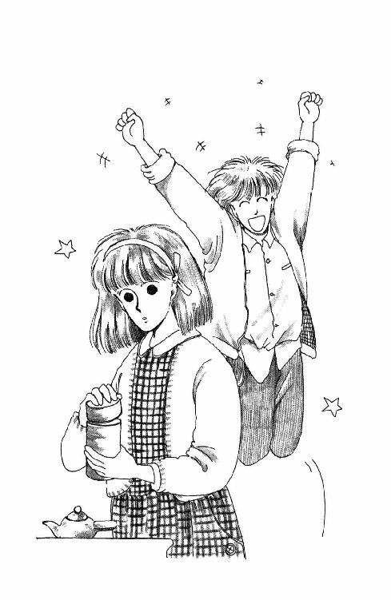
「はいよ、おまちー」
コーヒー・カップを五つ乗せたお盆を掲げて、うららが戻って来た。南部さんのおばあさんも、エプロンで手をふきふき入ってらっしゃった。
「なんなら息子の舟を出させよう。二隻あったほうが、練習もはかどるじゃろ。では、コーヒーで乾杯といくか」
「うほほほ、すげーわ。『エンチラーダ』に乗れるんだぁ！ きゃーだわきゃーだわ」
お台所で、お代わりのお番茶の準備をしてる時にうららが言ったのよ。
「『エンチラーダ』、って？」
「雄作さんってさ、南部さんとこのボンの舟よぉ。フライング・ダッチ・マンってさ、六メートルもあるでっかいやつ。ほら『ミッキー』いらなくなったのは、それ買ったからなのよー。かぁっこいいんだから！」
「へえー」
六メートルもあるヨットなんて、きっと高いんだろうなぁ。それを、買っちゃうわけか。
お金持ちなんだぁ。
「南部さんの息子さんって、何なさってるの？」
「シェフよ。前はオークラかどっかの料理長してたけど、茅ヶ崎に『コートレット』ってかわいいフランス料理のお店出してさ、奥さんとふたりでやってんの。小さくてさ、十人も入らないから、予約だけの店なんだけど、おいしーのよー。そーだわ、あんたもいっぺんお父さんたちに連れてってもらえば？」
フランス料理か。
そう言えば、三番町にいたころは、週に一度はママとお外に食べにいってたけど、ちかごろじゃ、パパ毎日しっかり帰ってらっしゃるし、近くにそれらしいところもなくて、家でばっかりだったなぁ。そんな素敵なところがあるなら、行ってみたいけれども......。
「今度の日曜はすごいぞー。きっと雄作さんも来る。雄作さんね、学生の頃からずーっとヨットやってんのよ。国体にだって出たんだから。そりゃーうまいんだぜ。きゃー、いよいよ本格的なプロの指導が受けられるんだ！ ......ちょっと、お皿下げてくんね」
うららが行ってしまうやいなや、お茶の間のほうから、なにやら楽しそうな笑い声が聞こえてきて、あたしは思わずため息をついてしまった。
そうなの。
あの雨の日曜日、レース参加は全員一致で可決されて。となると、これまでのやり方じゃだめだ、って、南部さんのご協力を仰ぐことになって。今日の放課後、朱海さんが頼みに行くはずだから、様子を見に行く、っていううららについてきちゃったけれど。
なんだか、ついていけないみたい。
今度から知らないひとが来るのかぁ。
知らないひとって言ったって、うららや朱海さんはよく知っているみたいだし、国体の選手までなさったかたに指導していただけるとなれば、スポーツ少年の一穂さんも尚志さんもまったく意義ないだろうけれど。
コーチが入るとなれば、きっと雰囲気が変わる。レース用の厳しい指導になるに決まってる。あたしみたいなお下手な子がいると足ひっぱっちゃうんじゃないかなぁ......。
しゅんしゅんお湯が沸く音に気づいて、あたしはあわててガスを止めた。
でも未来、だめよ。......落ち込んじゃだめ。
どんなに落ちこぼれたって、あたしはあの浜の持ち主の娘なんだもん。胸張って参加していていい。遠慮しないで『ミッキー』に乗せてもらって、いいのよ。みんなだって、だめって顔なんかするわけないし。
でも。
あっちでは、また、笑い声が起こった。
うららが小さい時どうしたこうしたって、あたしの知らない話してるみたい。
......つまんないの。
どうせ、どうせ、あたしは新参者で、森戸に来てまだ半年しかたってないもん。そんな昔のことなんて、わからないもん！
思えば、ヨット・チームだって、朱海さんを中心にみんな以前からの仲間なんだわ。あたしだけ、後から来た。
ヨットの技術も、楽しいお話も、ついてけない。
......くすん......。
「未来ちゃん？」
あわてて振り向くと、お勝手の入り口ののれんをくぐって、朱海さんが入って来るとこだったのよ。
「あ、今行きます」
あわててお盆を持ったのに。
「どうしたの？ 元気ないじゃない」
向こう側からお盆を支えて、朱海さんは、あたしの目をのぞきこむような顔をした。
「思っていることがあるなら、言ってごらん。黙ってふくれてると、かわいくないよ」
「ふくれてなんか......」
「これでも？」
朱海さんの指が、あたしの頰をちょっとつついた。
「ほーら。すねてる時の羅士丸そっくりだよ」
「............」
「困ったおひめさまだねー。......ちょっと、おいで」
「お茶は？」
「置いとけばうららがやるから。さぁ」
手を引かれるままに、サンダルをつっかけて、お勝手口から表に出た。
茜色の空が広がっていた。
左手にあじさい公園への道、右手の段々になった住宅街の先に、遠い海が見えた。
夕暮れの裏庭の真ん中のどっしりたった太い樹の幹に、古くなったぶらんこが下がってる。朱海さんは、ぶらんこの綱に手をかけて、手招きした。
座ってみると、ずいぶん低かった。
「ボロくなったなぁ。もうぼくじゃ無理だな。昔はよく乗ったんだけどね。うちの鉄棒のとこのは、これの真似なんだよ」
「はぁ」
あたしの短い脚でも余ってしまって、うまく漕げない。
「じゃあ、小さい時よく遊びにいらしたんですね。南部さんのとこに」
「ああ。おやじのおやじからの付き合いだからねぇ。ぼくたちは孫みたいなもんだから......だから、こうしてわがままを言うのもかえって孝行みたいなもんだったりして」
「あたしは......」
あたしは、孫じゃないから。
かわいくないことばが飛び出しそうになる。
うららが行こうって言ったからなにげなくついて来ちゃったけれど、来なければよかったんだわ。あたしなんか、お邪魔だもん。お話にもうまく加われなくて、どうしていいのかわかんなくて、お手伝いする顔してひとりでお台所にひっこんでたけど。
われながら暗い。
でも。暗くだってなるよ。
この町にはこの町の昔があって、あたしはそれを全然知らない。朱海さんにもうららにも、小さい時があって、でもあたしは、知らない。
森戸南女学館にも森戸南女学館のやりかたがあって、あたしにはまだよくわからない。慣れてしまったつもりなのに、時々、ああ、やっぱりあたしって途中から来た子だから、って思い知らされることがなくならない。
おひっこし以来のあたしは、まるで、根っこがなくなった草みたいだ。どこかにちゃんと根を張りたいのに、どこにいっても、前から咲いている花がある。無理に割り込んでも、あたしのとこまではお陽さまの光が届かない。
このままじゃ、きっと枯れてしまう。
「そんな顔しないで」
ぶらんこの樹にもたれて、朱海さんはこっちを見ていた。
「そんな顔されるとお兄さんは悲しい」
「............」
ごめんなさい。口だけ動かすけど、声にならない。
こんな気持ち話せない。だって、朱海さんは、あたしがしょげるたびに、いっしょうけんめいお水をくれた。お陽さまになってくれた。
他の花と同じ高さまでなかなか伸びないあたしが、なさけない子なだけなんだもの。
「困ったなぁ」
朱海さんはお陽さまの微笑をうかべる。
「いつもなら未来ちゃんが考えそうなことはだいたい見当がつくんだけどねぇ......今度ばかりはよくわからなくてさ。レースに気乗りがしないのは知ってる。でも、一応賛成してくれたんだし、きっと熱心に練習してくれると思って強引に参加することにしちゃったんだけど......読みが甘かったのかな？ それとも、他に何かあるのかな？」
うつむいてたから、朱海さんの顔はわからなかった。
黙っちゃったところをみると、何か考えこんじゃったに違いない。
......やだ。
あたしったら、勝手にうじうじして、また、朱海さんにご自分を責めさせてる。朱海さんみたいな優しいひとを、困らせてる......！
「レースのせいじゃないんです！」
思わず顔をあげると、朱海さんは、何でも全部受け止めてくれそうな真面目な顔で、まっすぐこちらをみつめていた。
「ただ、なんだか、変なんです。あたし。自分がどこにいるのか、どこに行けばいいのか、よくわかんなくて」
「どういうこと？」
「だから......」
華雅か森戸か。ふたつにひとつを選ばなきゃならない。レースをするなら、誰が選手になるのか決めなきゃならない。
平等のまま、みんな同じくらい好きで、大切だと思っていたいのに、割り切って順番をつけなきゃならない。あたし自身も順番に組み込まれて、いらない、って切り捨てられるかもしれない。どこにも根を張っていないまま、放り出されるかもしれない。
「このままでいたいのに......みんななんだかどんどん変わってくでしょう？ 変わるたびに、何を残して何を切り捨てるのか、決めなくちゃならないみたいなのがいやなんです。自分が捨てられるのもいやだし、比べたくないものを無理に比べて優劣つけるみたいなのが、とても怖いんです......！」
「......なんか、ずいぶん難しいことを考えてるね」
前髪をかきあげたから、朱海さんの当惑顔がよく見えた。
「秋だからなぁ」
「はぁ......どうもそれもあるみたいで」
「でも、このままでいたい、っていうのはわかるような気がする。あいにく、もうじき誕生日なんだよね、ぼく」
「え？ お誕生日？」
「そ。十月九日が来ると十七なんだよねー。なんと、ぼくは、ジョン・レノンと同じ日に生まれたのさ」
はずみをつけるようにして樹から起き上がる。
「それは光栄なんだけど......どうにもいやなんだよねぇ......まだそんな、トシ取れるほど成長してないのに、誕生日だなんて」
「そんな！ おめでたいことじゃないですか」
「めでたくなんかないよ。去年はねー、これでやっとバイクの免許が取れる、って待ち遠しかったけどさ。何にもしてないのに、時間だけ過ぎてったことを思い知らされるのは、とってもこたえる」
「何にもって、朱海さんは充実した日々をお過ごしでしょう？」
「してない」
朱海さんは、厳しい顔で首を振った。
「まったく、何にもしてない！ ほんとーにしてない。なんとかしたいと思ってるのに手もだせないんだ!!」
「......は？ ......」
「もー、いっそのことさっさとやってしまおうかって思う時もあるけれども、今一歩決心がつかなくって......ものごとには時期ってもんがあるからね、きっといつかは、うまくいく、きっとわかってもらえる、ってゴリ押しを避けてるんだけども。だからといって、ほんとうに、いつかうまくいくかどうかはわかりゃしないんだ。......ぼくは時々、むしょうに虚しくなるよ。こんなにのんびり、やせ我慢しているうちに、どっからかトンビが来てアブラゲさらっていっちまったらどうしよう、って......」
なんだか全然わからないけど。
ひどく重大なことらしい。
「......朱海さんでも、そんなに悩むことがあるんですか」
「ありますよ、悩むことぐらい」
「でも、そんな、そんなにしたいって思ってること我慢なさるなんて、からだによくないんじゃないでしょうか。思い切って、やっちゃったらどうなんです？」
「......思い切って......？」
あたしはぶらんこから降りて、考えこんでいる朱海さんのそばに立った。
「そうですよ！ 勇気を出して。だいじょうぶ、きっとうまく行きますよ！」
「ありがとう」
朱海さんは複雑な表情で微笑まれた。
「未来ちゃんがそう言ってくれると、なんか、元気出る気がする」
「よかった！」
「でもね」
腕組みをしたまま、朱海さんはこっちを向いた。
「未来ちゃんは、変わってくのはやだって言ったでしょう？ ぼくが行動を起こすと、何かが変わるかもしれないんだよ」
......あ......。
それで、なんだか複雑なお顔だったのか。
「でも......でも、あたしのはただのわがままなんですから。朱海さんは、心配なさらずになさりたいことをなされば」
「ほんとに？」
「そうですよ。だって」
だって、時は止まらない。
そうよ。どんなにいやでも、いつかはみんな終わってしまうんだもの。
「今年の夏......素敵だったけど、もう来ないし。過ぎてからじゃ取り返しのつかないことも、きっとあります......か......ら......」
あ、あれっ？
な、なにかあたしよっぽど大変なことをけしかけてしまったんだろうか。朱海さん、すっかり苦しそうなお顔になってしまったのよ。
「未来ちゃん......」
「は、はいっ!?」
朱海さんったら、あたしの手なんか取って！
「ほんとに思い切ったほうがいいと思う？」
「......ええ、だって、そんなに悩んでるなんて、お気の毒ですし......」
「ぼくが言ってること、まだわからないの？」
朱海さんの瞳に、吸い込まれそうになった。
ちょ、ちょっと待って！
じゃ、ひょっとすると、朱海さんがあんなに悩んでいるのはあたしのことで、つまり、あたしがいやがるんじゃないかってことで、じゃ、じゃ、朱海さんが、したくてしたくてたまらないっていうことは......！
「わかりました......！」
あたしは、朱海さんの手に、手を重ねたわ。
「あたし、ばかでした。朱海さんがそんなに熱心に思ってらっしゃるなんて露知らず、ぐずぐずとはっきりしない態度をとったりして」
「それじゃあ！」
朱海さんの手に力がこもり、あたしも、しっかりと握り返した。
「安心してください、あたし、あたし、もう絶対、ごねません、レースはやだなんて言いません！」
朱海さんがお空をごらんになった。
お口の中で何やらぶつぶつ唱えてらっしゃる。きっと、わからずやのあたしがようやくその気になったことを神さまに感謝してらっしゃったのだわ。
ああ......ほんとうに、あたし、悪い子だった!!
朱海さんがそんなに心配してくださるなら、もうがたがた言わないで参加しよう!!
そうよ。あたし、賛成のほうに手をあげたんだから。うーんとがんばって練習して、ちゃんとレースに出られるくらいに上手になってみせよう!!
「それはそうと......お誕生日って、何日だとおっしゃいました？ お誕生会しないんですか？ しましょうよ、～ケーキ作りますから!!」
朱海さんはなんだか痛々しい微笑みを浮かべられた。
「ありがと。いや、実はね、誕生会はともかく、聞香をやることになってるんだ」
「お香の席を？」
おお。さすが家元！
「そうだ、良かったら、未来ちゃんもおいでよ。蘭奢待って名香を炷くから」
「らんじゃたい？」
「ああ。うちでもめったに炷かない代物だから。聞いとくだけのことはあるよ」
「めったに炷かないと言いますと、何か特別のものですか？」
「うん......まぁ、香道を嗜むものにとっては、コーヒー屋さんのブルー・マウンテンみたいなものでね。持ってないと、どんな流派でも家元になれないわけ。って言っても、なにしろ、聖武天皇が大仏開眼の時に唐からもらったとかなんとか言われてる伽羅だから、そのへんでちょっと買って来る、ってわけにいかないし。......確か、ぼくが生まれた時炷いたっきりだって言ってたなぁ」
「そ、そんな大変なものを!?」
あたしは思わず叫んでしまった。
「聖武天皇、なんて、何百年前じゃないですか！ ほとんど博物館・美術館ものじゃないですか。そんな大変なものを、炷く......って、燃やしちゃうなんて......国家的損失なのでは!?」
「国家的損失......」
朱海さんは、クスクス笑った。
「そんなオーバーなもんじゃないから、心配しなくていいんだ。せいぜい髪の毛一本ぶんくらいしか炷かないし、ただ燃やすわけじゃない。いくら稀少な蘭奢待でも、聞いてあげなきゃ意味がない。香木は、炷いて、聞いてこそ、生きるものなんだからね」
「でも、じゃあ、どうして今年？ 朱海さんのお誕生は毎年あるのに」
「うん。バートがいるし......実は、今度免許皆伝なんだよね、ぼく」
「め、免許皆伝!?」
それじゃあ、お祝いだわ！
「ほんとは先代も先々代も十八の時だったらしいけど、昔だから数えでしょう。実際は変わらないし、来年はなにせ受験生なもんでね。まったく、香道なんて大昔を偲ぶのが商売みたいなもんで、現実にいちいち曲げられてちゃしようがないんだけど」
「......そんな素晴らしい晴れがましい席に、あたしなんかが行ってもいいんですか？ お弟子さんがたも大勢見えるんでしょう？」
「もちろん構わないよ！ そうだ。皆伝をもらったら、ぼくはもうお弟子を取れるんだよ。未来ちゃん、第一号になってくれない？」
えーっ!?
うわぁ!! 香道って、香道って、習ってみたかったのよ。着物着るの好きだし、まだ一回しかやってみたことないけど、あの静かに張りつめた雰囲気も好きだし、数々の優雅な所作、マスターできたら素敵だわ。
しかも朱海さんに教えていただけるなんて、次期家元のお弟子第一号なんて、すごいわー。「ありがとうございます！ とても嬉しいです。お弟子入りしてもいいかどうかは、父母にも相談してみないと、あのう、経済的にちょっとあれですけど」
「ぼくが未来ちゃんからお金なんか取るわけないでしょ」
「そうはいきません！ ......でも、とにかくうかがいます。十月九日でしたか？」
「いや、それがね。平日だと、学校もあるんで......十日の祝日にすることになってるんだ」
......え？
「十日、ですか？」
「そう。体育の日」
体育の日はいいけど......十月十日って、十日って、まさに、あたしが華雅の学園祭に行こうと思ってた日じゃないの!!
「今度のポイント・レースはかなり正式で、風上、風下、サイドの三つのマークを定められた順序方法で回って、その速さを競うことになる。クラスの違う舟がいっぱい集まるけど、オールド・ボートで木造の『ミッキー』は最もハンディが軽いから、安心していいよ」
ネイビー・ブルーの縞シャツに、キャプテン・ハットの南部雄作さんは、ちょっと鼻にかかる甘い声を一拍休めて、熱心にうなずいてるあたしたちを見回した。
わが家の裏庭ハーバーには、艤装しおわった『ミッキー』の他に、雄作さんと尚志さんでマリーナから持って来た真っ白でぴかぴかの『エンチラーダ』と、南部さんの釣り舟『牛追い丸』、合計三隻もの船が並んで、とっても華やかなの。
先週と違ってよく晴れて、細かく波の立った海面がキラキラまぶしい。
「このコースでは、切りあがり、リーチング、ランニング、ほとんど全部のテクニックを使うことになるから、なんでもできるに限るけど、レースの場合大事なのは、スタートと、優先順位だ。......みんな、スタートのことはわかってる？」
「知識だけなら」
朱海さんが答えた。
うん。あたしも、昨夜、復習しておいたから答えられるわ。
十分前と五分前に合図があって、あとは各舟が自分で時計とにらめっこして、ここぞと思う時にスタート・ラインを越えるのよ。つまり『位置について』と『用意！』は言ってくれるけど、スタートの合図そのものは、なんと、ないのよね。
スタート時刻前に飛び出した舟があると、フライング、じゃなくて、リコールのピストルが鳴って、その舟だけやり直しをしなきゃいけない。リコールされたのに、自分じゃないと思って帆走してくと、その後どんなにちゃんと走っても失格。リコールの舟がたくさんあると、ゼネラル・リコールって言って、全部の舟でまた、スタート十分前からやり直しになるんだ。
......レースが、こういう知識のペーパー・テストだけだったら、あたしだって充分やっていけるけどなぁ。
「オーケー。実戦テクニックとしては、スタート前の位置が大事なのはわかるね？ ほかの舟より前にでてればいいってもんじゃない。むしろ、スタート時刻直後にラインを越えるようなかたちで、うんと後ろから勢いつけて飛び出してったほうがずっといい。......まぁ、かなり正確に時計が読めないとリコールになるから、取り敢えず、このへんを練習しないといけないんだが......あんまり前に出ないほうがいい、って言うのは、なぜでしょう？
雄作さんが、ぱっ、と尚志さんをさした。
「スタート前みたいに混雑していてぶつかりそうな場合、風上艇は風下艇を避けなきゃならないからです」
「そうそう」
まるで、授業だなぁ。
「ついでにヨットの交通ルール三原則は？」
「スタボー優先、風下優先、真後ろの舟は前のを避ける。言った順序で重視する」
「それだけわかってれば充分。まあ、いっちょ、お手並み拝見と行こうか。誰と誰が乗る？」「はい、はい！ あたし『エンチラーダ』がいい!!」
うららが真っ先に手をあげた。
「ほんじゃ、俺がクルーやるからね。『ミッキー』は？」
「俺は今乗ってきたところだから、誰かお先にどうぞ」
と尚志さん。
「俺、今後のためにまず、南部さんに『牛追い丸』の操舵を習います」
と一穂さん。
え......じゃあ......？
「混合ダブルスになったね。がんばろ！」
朱海さんが、ぴっ、と敬礼した。
「じゃー、十分前ねー！」
ピーッ!!
『牛追い丸』上の尚志さんが合図の笛を鳴らすと同時に、防水時計のストップ・ウォッチ・ボタンを......あれ？ あれっ？ どれがそのボタンだったっけ？ わぁん!! あれこれついてるからわかんなくなっちゃった！
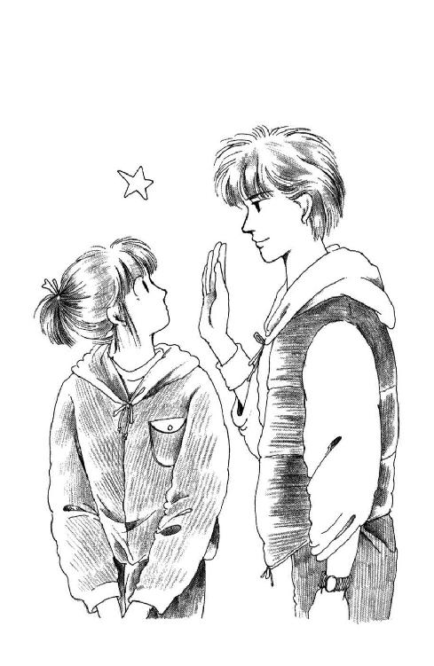
「いいよ、風見や時計はクルーの役目だ。でも、一応、いつクルーになってもいいように、今度の五分前の時にはちゃんとわかるようにしておいて」
逆ジブっていって、普通と反対がわに舵を切ってるから『ミッキー』はゆっくりゆっくり後退してる。アンカーを下ろした『牛追い丸』と、うちの家の煙突を結ぶ線がスタート・ラインだから、相当先だ。このままだと、出遅れちゃわないかしら？
うららたちの乗った『エンチラーダ』は、早くもスタート・ラインより大幅に先に行ってしまってて、それはそれで五分前までに戻ってこないとだめだってことなんだけど。
うう。
どうしてこんな、競争なんてする時に、あたしがスキッパーなんだ。そりゃ、実際の作業行動はクルーのほうが大変だし、体格のいいひとのほうがヒール・バランスの点でクルーに向いてるのかもしれないけど......スキッパーは責任重大なんだから。あたし、とてもじゃないけど、朱海さんに指示なんて出せないよぉ。
朱海さんったら、今日は任せたからね、なんていって笑ってさ。その実、あたしは、時計ひとつ満足に動かせなくて......あ、わかった!! これを一回押すとスタートで、もう一回押すとストップだ。この次はちゃんとやるぞ。
それにしても。
不安だ。なまじがんばって、ひっくり返ったらどうしよう？
「ねえ、スキッパー？ 作戦だけどね、向こうはいきなりクローズ・ホールドで出るに決まってるから、へたに近づいてあっちのセイルの影響受けた風に苦労するより、いったんポート・タックのアビームでスタートしてスピードつけて、切りあがって、ゆっくりタッキングしてまた切りあがる、っていうのはどう？」
......こんな頭混乱してる時に、専門用語を連発しないでほしい。
ええと、つまり、風に舟の真横を向けておいて出発して、ジグザグの横幅をあんまり狭くしないで、大回りするってことか。
あ。それなら、スタート前にラインに近づいても、多少ずれちゃうだけで、越えはしないってことだ。
「はい。あの、なんだかわからないけど、できるようにやりたいと思います」
「ティラー切る時は合図してよ」
「はい」
これじゃ、どっちがスキッパーだかわからないわね。
「よし。もうじき五分前だ」
「え？ もう!?」
あたしがボタンに手をかけて構えてると、やがて、笛が鳴った。
実質上、これがレースのスタートよ!!
いっぱいに風をはらんで『ＭＩＣＫＹ』の赤い文字が『気をつけ！』したみたいになる。スピードは充分、これ以上直進するとコースを外れすぎるわね。
「タックしまーす!!」
「オッケイ!!」
あたしがゆっくりティラーを押してると、朱海さんの足先が左舷側に伸びて来た。艇が風軸に向かいだし、メンスル（メイン・セール）がばたばた唸る。ジブ・シートを引き込んだ朱海さんとタイミングを合わせて、そっとブームを潜る。ゆっくりと、なんだかやけにゆっくりと艇が回る。両方のセイルが新しい左からの風に生まれ変わる瞬間、ティラーを戻す。セイルが右舷に返り、朱海さんはジブを入れ替えて、いつの間にか、あたしはティラーとメイン・シートを持ち替えてて、......左舷デッキに座ってる！
できたぁ!! できたぁ!!
「ちょっとヒールしてる！ 起こすぞ!!」
「はい！」
お尻をデッキの外へ。朱海さんは、あたしの視界をふさがないように、あたしよりもっと低くハイク・アウトしてる。
『ミッキー』は信じられないくらいスムーズに波を切って進んでるの。
「うまいぞ。ちなみに、もっとオーバー・ヒールしちゃったら、いくら体重外にかけてもだめだからね。その時は急いでティラー出して、ラフしちゃわないとチンするからね!!」
波しぶきの向こうから、向こうを向いたまま、朱海さんが怒鳴る。いちいち振り返ってると危ないんだ。
「はい！」
どっちがスキッパーだかやっぱりわかんないけど、でも、気持ちいーい!!
遠く右手に『エンチラーダ』のカナリア色の帆が翻ってる。スタート時刻に飛び出してたせいで、いったん戻ってやり直したから、今はあたしたちのほうが先なんだよー!!
もうじき風上ポイントのブイだ。これを迂回すれば、今日は風横ポイントは省いてるから、ひたすら一直線よ。風下側に向かう時はジグザグしなくてもいいから、ここで抜かれちゃうと、きっと、もうとても『エンチラーダ』にはかなわない。
うわーい、でも、しつこく言うけど、今んとこ勝ってるんだぞーっ!!
知らなかった。レースって、おもしろいんだ！
これなら、これなら、あたし、絶対がんばるっ!!
で、でも......そうだわ。思い出してしまったわ。
朱海さんのお誕生祝い免許皆伝祝いの聞香の会と、華雅学園祭と、いったいどっちに行くんだろ、あたし？ 聖武天皇の御代から伝わる名香蘭奢待と、麗美さまトコはじめソロリティーのみんなが総力を結集して挑む名物チャリティー・バザーと、どっちを取ればいいの？
ひ～～ん!!
なんでそんな大事なもの同士、同じ時にやるんだー!!
あたし、ランチョン・マット五枚作った。昨夜など、思わず夜中の三時までお針してしまった。でも、ほんとは、ほんとは、あの子のために、去年あたしの花嫁人形を買っていってくれたあの子のために、お婿さんのお人形も作るつもりなのよ。八日九日は学校があるから、きっとあの子も来るとすれば十日で、だから朝からずっとバザー会場にいってお手伝いさせていただけたら、感謝の再会ができるかもしれないと思ってたのに......。
でも、聞香に行くかもしれない、って言ったら、ママすっごく喜んでくれて。今度お香の会に呼ばれた時にしていけばいいと思って頼んでおいたのよ、って、オレンジ色の塩瀬に手描き友禅のすっごい立派な帯出して見せてくれて、ママが若い時着てたっていう黒地の紅型を貸してくれるって......はっきりいって、とっても着たいわ。涼しくなってきたからお着物にちょうどいいもん。
でも麗美さんが。
ああ、でも朱海さんが。
わ～～ん！ あたし、あたし、どっちも行きたいのにぃ！
「ポイントだぞー!!」
いっけない！
このままじゃ、通り過ぎちゃう！
「タックしますぅ！」
「いいよぉ」
そうだ。このレースで『エンチラーダ』に勝つことができるかどうかで、どっちに行くか決めよう。ええと、勝ったら、バザー。負けたら、聞香。......でも、でも、それじゃ、まるでバザーのほうが行きたくないみたいだわ。相手は国体選手と、うららの強力チームなのよ！ やっぱり、勝ったら聞香、負けたらバザー......でも、勝つために努力するってことは、なんだか麗美さんより朱海さんを選んでるみたいだし......勝つ、って縁起のいいほうが、大学受験で大変でらっしゃる麗美さんにふさわしいのでは......うううん、朱海さんにだって負けなんて似合わないし......。
うわわわっ!! やだ！ その強力チームが突進して来た！
えっとえっと、うららたちは右舷に座ってるから、スタボー・タックの優先艇になるはずだけど、あたしたちは？ こういう状態は左舷側なのかしら、右舷側なのかしら？ なにしろ、体はちょうどブームの下で......。
「未来ちゃん、裏風が入ったぞ!!」
きゃー!! もう知らない。知らない。タックしかかってるとこなんかに来たうららたちが悪いのよ。乗りかかった舟、じゃなくて、やりかかったタックよ!!
ティラー入れ換えると、凄い勢いでバウが回った。ポイントを旋回した!!
「くそぉ!!」
うららの怒鳴る声が風に千切れて聞こえてきた。
ちょっとだけ振り向くと、真後ろになってしまった『エンチラーダ』が、あたしたちを避けて、大きく膨らんだカーブを描きながら遠ざかっていくのが見えた。
うへー。ポイント、あんなとこだ!!
すごいー。なんて鋭い角度で回ってしまったんだ......。
「よーし真ランだ。センターボード上げるぞ!!」
口元だけ振り向きざまに朱海さんが怒鳴った。
「ひ～～い」
「ローリングと、ワイルド・ジャイブに気をつけて！ 風下から風受けるなよ!!」
「うへへー」
波を被ってすっかり濡れてしまってる朱海さんの赤いライフ・ジャケットの向こうに、『牛追い丸』で大きく手を振ってる一穂さんたちが見えた。
５
......ええと、スタボーは右から風受けてセイルが左なわけだから、四十五度でスローズで、フイに向いてシバーしてぇ、ベアすればブームが出るから......ティラーをむにゃむにゃ......。
「しっかり前を見ろっ!!」
はっ！
......思わず、ジブ・シートをひっぱろうとしてしまったわ。
一瞬、スキッパーに怒鳴られたのかと思ったけど、ヨットの上じゃなかった。体育の岡村先生が、メガホン片手に上半身全体に力瘤を作っていらっしゃる。
「整列！ 整列だぁ！ 何度言ったらわかるぅ!! こぉら二年Ｅ組、列が曲がっとるぞ、列がぁ!!」
月曜朝礼だったんだわ。
「ったく、うるせーなー」
隣の列の生徒が、おおあくびをした。
「さっさと始めろよー」
「朝礼なんてなんであるんだろーねー。わざわざ集めなくたってさぁ、放送でやりゃ充分じゃん」
「あーいっぺんでいいから貧血起こしてみたい。保健室でゆっくり寝かしてもらいたい」
「仮病だってバレたら鬼の十兵衛に廊下五十メートル掃除させられるって」
「うへー」
校舎の大時計は八時四十分になろうとしてる。集合がかかってから、もう十分もたっちゃってるんだわ。
わが三年Ｃ組の長い列の、あたしはちょうど真ん中くらいにいるんだけど、前のほうのひとから順々にふらふらずれてて、なんともでこぼこした線になっちゃってるの。直前の石川さんにぴったり『前へならえ』すると、あたしは朝礼台に対して三十度左向きの角度になる。
ヨットなら、セイルが死んじゃって減速しちゃうとこだわ。ええと、こういう時は確か、波舵でバックして、逆ジブで回頭を助けてクローズ・ホールドで再帆走してからふたたびタッキングにはいれば......。
ううう。
あ、あかんっ！
朝からこんなことばっかり考えてちゃだめじゃないよぉ！ ここは学校なのよ。これから朝礼なのよ！
でもねぇ......。
なにしろ、このごろ夢の中でもいっしょうけんめいシート操作してしまうんだ。転覆しそうになりながら切りぬけたりした時なんて、やったー!! って叫んでる自分の声で目がさめたりするくらいで。しっかり寝たいのに休まりゃしないし、せっかくみごとなワザを体得したと思っても現実じゃないんでがっかりするしで、頭が重くてしかたがない。
目は飛び出しそうにはれぼったいし、首の筋だってつりそうよ。完璧に寝不足だわ。
このところ、ただでさえ眠る時間が少なかったもの。相変わらず山成す宿題と並行して、お婿さん人形まで作ってたし......それは、とうとう、ようやく、昨日遅く完成したんだけど。
......ああ。
思い出してしまった。
今日は十月六日、華雅学園祭まであと二日!!
なのに。
十日体育の日の祝日を、どっちに行くか、あたしまだちゃんと決めてないのよ。
ああ。どうしよう？ もう考えるのもめんどくさい。眠いなぁ。......ほんとに、早く始まって早く終わってくれればいいのになぁ。
「頭をぐらぐらさせるんじゃないっ！ いつまでも話をやめんと、いつまででも立っとることになるんだぞぉ！ きちんと整列をせんかぁ！」
「あたしら軍隊じゃねーっつーの」
「こんなバカバカしいことに時間つぶされるなんて冗談じゃないよ、もう」
まわりのひとのぶつぶつ言う声も子守歌に聞こえてしまう。
そうだわ。この調子で朝礼が四十五分までに始まらなかったら、華雅に行くことにしよう。もし、その前に始まったら、聞香よ。あ、でも、やっぱり、始まったら華雅で始まらなかったら聞香のほうにしようかな？ いや、いくらなんでももう始まるだろうし、いやいや、やっぱり始まらないかもしれないし......。
「よし。全校朝礼を始める！」
......うわぁん！ どっちにするか決めてないうちに始まっちゃった！
「なんなの、その怒濤の絆創膏は」
うららにみつかってしまったのは、音楽の時間の始まる前だった。
「お人形作ってたのよ。うつらうつらしながらだったから、しょっちゅう針刺しちゃって」
たいしたことない怪我だけど、お人形に血なんかつけちゃったらかわいそうだから、そのたびに救急絆貼っておいたのよ。剝がすの忘れてた。
「人形!? ずいぶんと吞気じゃないよー」
たて笛の袋をふりまわしながら、うららはあきれた声を出した。
「吞気でやってるんじゃないわっ！ あたしだって、これでもひとつしかないからだをせいいっぱい酷使して」
「だって、来週は中間だよー」
「う......」
「さぁすが普段の心掛けが違うひとなわけだ」
「そんなことないけどっ......」
毎週どこでも好きな席に座っていいことになってるから、隣同士に座ってる。うららの向こうでは、杉丸が単語カードをめくってる。
......熱心だこと。
あたしなんか、眠さのあまり、つい、うんと横のほうの先生と直接目が合わないような席を選んでしまったっていうのに。
あああ。優等生だった未来はいったいどこにいってしまったんだろう。
そうよ。もうじき中間テストだっていうのに。
「例のカセット作戦のおかげで青ざめたセンセーがたが、これに復讐をかけるって、もっぱらの噂だぜ」
「そうなの？」
「だよ。柿間なんかさ、あんな授業じゃわかるわけがない、小テストだなんていって、四十五分のうち十五分もサボッてるって、父兄からやいのやいの文句言われたんだってさ。クビって話も出てる」
「く......くび!?」
過激だなぁ。
「ああ。なにしろ私立だから、父兄の文句にゃ弱いんだわ。あれがいなくなってくれるかと思うと嬉しくって涙が出ちゃうけどさ、こんな学期の途中では切れんだろうしー、学年末までねちねち怨みがましくやられるんじゃ、たーまんねーよー」
「そうねぇ。少なくとも中間テストは柿間先生ね」
「だからさー。変な点取ったらびしびし居のこりさせられるかもしれないわけよ。ただでさえ日が短くなって来たっていうのに、ろくにトレーニングできなかったら大事なレースがねー。それにもうひとつろくでもないものが......あ、そうだ。ね、ミッキー、朱海くん何か言ってた？ 誕生日のこと」
ぎく。
「う......うん」
「じゃ、くりかえさないけどね。まー、お楽しみだわよ。この前来た時はお稽古みたいなもんだったから、略式だったけど、今度のはどーんと大掛かりで。朱海くんってばかわいそーに、毎日座禅は組まされるわ、日本書紀だ水鏡だって古典を写させられるわ、たどんは作らされるわ......」
「たどん？」
たどんって何のことだったかしら？ 確か昔読んだ本に出てきたような......あ、そうか！ 雪国のこどもたちのこと書いた絵本に出てきた。雪だるまさんの目にする、って書いてあったんだ。なんか、炭のようなものだわ、きっと。
「そーよ。香たどんってね、香炉に入れるこーんな小さいやつなんだけど、正式に香を炷く時には、宗匠みずからつくらなきゃいかんの。炭の粉砕いてどーにかするらしいんだけど、それが秘伝だかなんだか不浄な女はタッチしたらいかんとかで、あたしなんかは見せてももらえないんだぜ。まったく、今は家じゅうその日の準備とかで、花だのお膳だの招待客の確認だのって上を下へよ。志乃ねえが嫁に行く時だってこうは騒がなかったぜ。......あーあ、まったく、こんなんでテスト勉強なんかできるもんかいっ!!」
うららが怒鳴ったところに、影が薄くていらっしゃるので有名な上杉先生が蕭々と入ってこられて、起立、礼、になっちゃって、それ以上話はできなくなっちゃったんだけど。
......そ......そんな大変なお集まりだったのか......。
ちょっと規模の大きなお誕生会みたいなものなのかと思っていたのに。座禅だとか日本書紀だとかって、お嫁入りよりすごいだなんて......そうだわ、免許皆伝だったのだわ。深く考えてみれば、それって一生に一度のことじゃない？ しかもお世継ぎ長男次期家元ご当人のとなれば......うわわわわ、恐ろしく格式が高そう!!
うららはこんなだし、朱海さん自身だって、普段ちっともそんな顔しないけど......ほんとは西在家さんのお宅って華雅でもなかなかお目にかかれないような由緒正しきお家柄で、そうだわ、かつて華雅御前となったこともあるおかたのお家なのだわ。
でも、信じられない。
あの、陽に灼けた腕でバイクを走らせる朱海さんが、銀メッキの鎖に通したシャックル・キイがとっても似合うセーラーの朱海さんが、座禅組んでるとこなんて、古典を写経、じゃなかった、写してるとこなんて、暗いお蔵で、す、炭の粉いじってるとこなんて......。
想像できない......。
想像できないって言えば、朱海さんたちのお父さまの杠隹氏だって、ちょっとお年を召してらっしゃるけど、すごく気さくで豪放磊落で、うちのパパとビールの飲みくらべなんかなさってお顔真っ赤になさってたとこ知ってたりすると、とても、そんな先祖代々の『秘伝』なんてものを継承していくようなかたには見えないのに。
あ、あはははは。なんだか怖いな。
たいしたことない、っていうこの間の会の時にだって、みづゑさんなんていうひととあんなことになったし......あたしなんかがのこのこ行ったら、恥ずかしい思いをするだけなんじゃないかしら？
朱海さんのお誕生日には、せいいっぱいお祝いしてさしあげたいのに......。
あ！ やだ、いけない！
あたしったら、お誕生祝いを何にするか決めてなかった！ わぁん、半月も前から知ってたのに！ もうどこかに探しにいってる暇ないじゃないの！
......でも、思えば、毎週日曜はヨットの練習してたんだわ。このところ、逗子にさえ出掛けてない。学校と家、いったりきたりばっかりだった。
ああ、もうあと四日......違うわ！ そうだわ。ほんとうは九日だって言ってた。ジョン・レノンといっしょだって。
ジョン・レノンって、どなただったかしらねぇ......聞いたことあるんだけど......確か、わりと最近に暗殺されたひとだな。でも、アメリカの大統領じゃないし......。
あ、思い出した！ ロックのひとだった！
そうだ。レコードなんかいいかもしれない。
......でも、朱海さんのことだもの、いっぱい持ってるかもしれないなぁ。何を持ってて何を持ってないのか知らないし、聞くわけにいかないし......。
うーん。
困ったぁ......。
デジタル時計の表示が、かたん、とずれる音に目を開けると、ちょうど12：34だった。
ふう。とうとう、八日になっちゃったかー。
眠れない。バザーの準備も終わって、ようやくそれほど起きていなくてもよくなったのに、眠れないよ。
今日華雅では学園祭が始まる。トコも眠れないでいるかしら。それとも、準備に疲れてぐーぐーかしら。送ったお人形、ちゃんと出してくれるかな。あたしが行くまで売れないといい、でも、売れ残っちゃってたらそれもやだなぁ。
十日に行くって手紙を出した。
ほんとうは、今日、学校ずる休みして行って来ちゃえばいいんだと思う。そうすれば、ほんとうのお誕生日である明日は西在家さん家にちょっと顔だして、朱海さんにおめでとうって言ってくることもできるし、十日のことは十日のことでそれから考えれば......。
ああ。でも。
いくら考えたってだめだわ。
うららはあたしが行くと思ってる。朱海さんも、きっとそう思ってる。
そんな大変な会で、もしもこんなあたしのためにでもしっかりお席など用意されてたりしたら、今更行けないなんていうのってすごくご迷惑で失礼かもしれない。
だけど、華雅では華雅で、トコも、ひょっとすると麗美さんだって、あたしが行くと思ってくださってるかもしれないわ。
......いっそのこと、熱でも出ちゃえば両方失礼する理由もできるのに。あんまりぼうっとするからさっきあわてて計ってみたんだけど、あいにく三十六度二分。正常そのものだったのよね。
電気を消した部屋の中に、ひっこしの時トコがくれたドナルド・ダックの洋服の白いボタンだけ、かすかに見える。
わかってる。
あたしはきっと、今日ちゃんと学校に行くわ。森戸南女学館に。
そして、何にも思いつかないうちに明日になる。
今は見えないけど、ドナルド・ダックの隣に小さな包みがある。以前さえらおばさまがくださったペパーミント・グリーンのリスト・バンド。あたしがヨットしてること知ってて、セイルと同じ生地で作ってあるから、って買ってきてくれたの。ジッパーがついてて、小銭とか鍵なんかだったら入れておける。
せっかくなんだけど、あたしの腕には大きすぎてすり抜けてしまって使えなくて、そのまま取ってあった。それを、きれいな紙で包み直したんだ。朱海さん、いつも、バイクのキイ、ライ・ジャケのポケットに入れてる。あれじゃいつか海に落としてなくしてしまうかもしれないわ。
これ、役に立つと思う。ほんとうは、生命の恩人のお祝いに、もらいものの横流しなんて申し訳ないけれど、あてもなく何か探しにいっている時間もないし、とりあえずこれより良さそうなもの、思いつかないし。
喜んでくれるといいな。
うううん。朱海さんのことだから、きっと喜んでみせてくださるわ。
でも、いつ渡すのかなぁ。
明日になったら、ほんとうに西在家さん家に行ける？ 聞香の会は、華雅の学園祭に行くのでうかがえません、ってちゃんと断れる？ それとも、うららに託すの？ 言い訳は電話で？ ......それでもいいじゃない。しかたないじゃない。
トコと約束したほうが先だった。ご大層な催しにうかがうのはあたしみたいな素人には気が重いから、って、ほんとうのことを言えばいいのよ。
なのに。
......どうして眠れないの？ どうして、こんな......ちょっと油断すると涙が出そうな気分になっちゃうの？
もう何十何回めかわからない寝返りをうつ時見ると、時計は一時を回っていた。
ああ。
あたし、そんなに、聖武天皇がうんぬんの国宝級香木を聞きたいのかなぁ......。
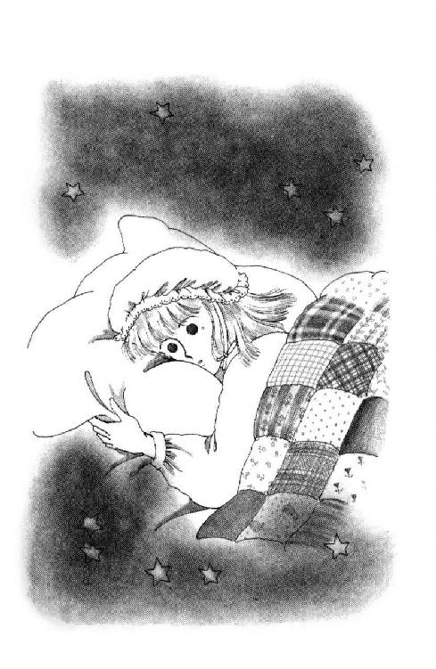
「ねぇ今日、何日？」
「九日だってば。どうかしたの？ 朝から四度めよ」
杉丸は、肘で押さえた参考書からちょっとだけあげた目を、老眼鏡からのぞいたおばあさんみたいにしょぼしょぼさせて、あたしをにらんだ。
「うーん......」
だって。
お弁当出そうと思って鞄に手を入れたら、さわっちゃったんだもの。例の包み。
ああ。ほんとに今日なんだわ。朱海さんのお誕生日。もう八日じゃない。あたしは日付け間違ってない。
どうしよう。ほんとに行く？ 放課後そのまま？ それとも、いっぺん家に帰ってから？ それとも、うららに頼むとか......。
「まったく、毎日毎日すーぐ過ぎてしまって困るわね！」
杉丸は元気にご飯をかきこみながらそう言った。
「覚えなきゃいけないことは山のようにあるのに......えーと、なになに、『ドイツは四十年四月にデンマーク、ノルウェー、五月にオランダ、ベルギーに侵入し、ついでフランスに進撃して、六月ついにパリを占領した。その直前にドイツの戦勝にまどわされたイタリアはドイツ側として参戦した』？ ？ ......何なの、この『まどわされて』って。おかしくない？ これじゃイタリアのひと、立場ないじゃない。まるで、なんかうかれちゃって、何にも考えないでやっちゃったみたいで......むぐむぐ」
「............」
いいけど。
参考書読みながらご飯食べるなんて、ちょっと女の子らしくないと思うわ、あたし。
さっ、ごはん、ごはん............あれっ？
「杉丸、それ、中間の範囲だった？」
歴史は確か、まだ、産業革命のあたりだったと思うんだけど。
「違うわよ」
軽く肩をすくめただけで、杉丸は振り向きもしなかった。
「中間なんてどうでもいいわ。あたしは華雅高校受験に備えてるの。そうだわ、ねぇ、わからない問題があったのよ！」
杉丸はお箸を放り出すと、ピンクや黄色や蛍光みどりのアンダー・ラインと、セロテープで張りつけた多数のメモで倍以上にふくれあがっちゃっている参考書を、めくりにくそうにたどっていった。
「あ、あった！ ね、この『ウラル・アルタイ系遊牧民の活動について二百字以内で述べよ』っていうの、ミッキー、わかんない？」
う、ウラル・アルタイ系......？
「......知らないわ......こんど、家で調べてくる」
「あんたが知らないんじゃ、やっぱりこれって高度すぎたかな」
買い被りだってば。
「どこの問題？」
「早稲田大学」
「......杉丸ぅ」
あたしはようやく解きかけたナプキンから手を放して、杉丸の肩をつかんだ。
「そんなまだ習ってもいないことまでやらなくたって」
「だって、華雅中学ってあたしたちよりずっと進んでるんでしょう？ どこまでやっても、やりすぎってことはないと思うのっ!!」
......それはそうかもしれないけどぉ。大学受験問題にまで手を出さなくたっていいと思う。すごいなぁ。杉丸は受かるわね。この根性なら。
それにくらべて、あたしなんか、まだ、どっちに行くかも決めてないなんて......あー。優柔不断。杉丸の一途さを、少しわけてもらわなくっちゃだめだな。
ふう。
ようやく、お弁当箱の蓋を開けようとした時に。
急にあたりが暗くなった気がしたの？
顔をあげたとたん、あたしは思わず、うっ、と構えてしまった。
美土里さん、小西さん、佐野さん、橋本さん......不良っぽいって言われてるひとたちが、いつの間にか、あたしたちのまわりをぐるっと囲んでたんだもん！
「な、なんですかっ!!」
思わず立つと、
「食事中、悪いんだけどさ」
憮然とした顔で、小西さんが言った。
杉丸は、ちょっと顔あげて、そのまま参考書とお弁当箱に顔を伏せてしまったわ。
「中間テストの予想、してくんない？」
え......えーっ!?
「あんただけが頼りなのよぉ」
美土里さんがうそ泣きしてみせた。
「数学と英語とさ、こんど赤点とったら間違いなく落第させるって晃司に言われちゃって」
晃司、ってツル先生だ。
「理科一（註12）も頼むよ。浅葉この前の時ヤギたちに、この図が大事だよ、って言ったとこがバッチリ出たそうじゃん。そーゆーの、教えてよ」
「明日休みだし、土曜日曜とあるから、今日放課後どことどこか教えてくれたら、なんとかなるんじゃないかと思うんだ」
「きょ......今日!?」
そんな！
「でも、あたし......あの......」
「ほら、教科書ならみんな持ってきてるよ」
「なに言ってんだい、全部置きっぱなしにしてるだけじゃんか」
「一冊にしるし付けてくれたら、みんなでそれ写すからさ!!」
......そう言われてもぉ！
「どーしてそう勝手なのかしらねー」
みんな、ぴたっ、と黙って、肘で開いた参考書を見たまま、ひとしきりお箸を使う杉丸のほうを見た。
「なんだよ。文句あるのかよ！」
「ま、ま、そー尖らないでさー。ねー、杉田、あたしたちだってさ、やっとその気になって、恥をしのんで頼みに来たんじゃんか。んーな、きついこと言うなって」
「だって、いきなりすぎるわよ！」
杉丸はちょっと青ざめた顔を、きっぱりとあげた。
「ミシェールにとってもテスト前よ。いろいろ予定があるでしょう。なのに、あんたたちのために時間を使えっていうの!? それ、ずいぶん傲慢じゃない？」
「杉丸......」
あたしはお箸を持ったまま宙に浮いてる杉丸の手を、そっとたたいた。
「いいから、ちょっとならあたし」
「甘やかすことないわよ。だいたい、ひとの力を頼りにして点数を良くしようなんて、まったく情けないひとたち!!」
「こぉのぉやぁろぉぉぉっ!!」
「こ、小西っ!! やめなってばっ!!」
つかみかかられた杉丸が中腰になった勢いで、参考書が食べかけのお弁当に落ちた。誰かの足があたしの机をひっかけて、あたしのお弁当もどっかに飛んでってしまった。もがくふたりをみんなで必死に押さえると、おさげをひっぱられてる杉丸と、握り変えたお箸をつきつけられた小西さんは、ようやく少し離れ、はぁはぁ言いながらにらみあった。
「杉田ぁ、おまえ、このごろちょっとできるようになったからって、なんなんだよ、そのひと見下した態度は？ いい気になんじゃねーよ！」
「見下してあたりまえのひとたちなんだから、見下されて当然でしょ？」
「なにぃ!?」
「優しくしてもらうとすぐつけあがるんだから。なんの恩もないあんたたちに利用されたら、ミシェールがかわいそうじゃないの！ まったく野蛮よ。恥知らずよ。教頭からしてそうなんだから、あんたたちじゃ無理ないだろうけ......」
「すぎまる！」
杉丸は、あっ、と息を飲んだ顔であたしを見た。
今の今までからだふたつ分も大きな小西さん相手に虚勢張ってたのと同じ子だとは思えないような、やけに無防備な顔だった。
なぜかあれ以来自習の続いている家庭科の時間に、あたしは杉丸を誘って屋上に出てみた。
並んでてすりにもたれて、海を向くと、遠く貨物船らしい船が横切っていくのが見えた。
向こうが一色、緑深い山の中に、西在家さん家があるのね。うちはもっともっと横須賀寄りだからとても見えない。
森戸神社の横、海狼って中国料理屋さんのあるホテルがひときわ高くそびえるちょっと手前に、森戸の商店街の道路が切れ切れに続いてる。狭い道、曲がった道、お寺や大きなお屋敷や暁の星教会のお庭のあたりからだんだん山になってきて、葉山小学校はあの丘のてっぺんだ。
少しだけど、風が吹いてた。あたしの髪が揺れるか揺れないかぐらいのやさしい海風だけどヨットなら充分走れるわ。
いつまでも、黙っているわけにもいかない。
「......トコね」
杉丸は前を見たまま黙っていた。
久しぶりみたい。教科書もノートも持ってない杉丸を見るのって。
「あんなこと、みんなには黙っててくれない？ さっきは、早口だったし、とっさになんのことだかわからなかったみたいだからいいけど......聞かされておもしろい話じゃないでしょ」
「あたし......あたしも、おもしろくなかったの」
小さなこどもみたいな声で、杉丸が言った。
黙って耳をすましていると、やがて、ふうっ、と息を吐いて続けたわ。
「トコちゃんの手紙読んだ時ね。ほんとに、びっくりしたの。なんか......息が苦しくなるくらいやな気分になっちゃって。どうしてだか、考えてみて思ったんだけど、あたし、きっと、......きっとうちの学校の悪口聞きたくなかったんじゃないかなぁって」
「トコ、ひどいこと言ったの？」
「まぁね」
やっと、あたしのほうを見ると、杉丸は首を伸ばすようにうつむいて、小さく笑ってみせてくれた。
「たいした学校でもないくせに、えーかっこしぃだとか。不良がいっぱいいて、ミシェールみたいな子はほんとにめずらしいとか。でも、それ、実際は、あたしがトコちゃんに話したことを、そのまま繰り返されただけなんだけど」
「......うん......」
わかる。トコは、トコはあたしが最初に、華雅を出たばっかりの時に言ったことまだしっかり覚えていて、ここってそういう学校だと思い込んでる。その後、あの時のあたしにはまだよくわからなくて、第一印象を言ってしまっただけなんだ、って話しても、なかなかわかってくれてないみたい。
たぶん、華雅っ子から抜け出してないあたしの目で見た森戸南女学館の姿は、トコにはいちばんなじみやすいんだろう。最近のあたしのようにこの学校を見るためには、トコには今ない視力が必要だ。
同じものを見ても、今のトコと今のあたしでは、そこに見えるもの、違っちゃってる。
「自分では言いたい放題言ってても、ひとから言われるのはやだったのね。いくら華雅高校に受験するつもりだ、って言っても、あたしはまだここの生徒だから。すごく気が合っちゃったつもりで、ひんぱんにお手紙出したりしてたけど、トコちゃんはやっぱり、よその子だし。だから......だからね、教頭先生が、他の誰かじゃなくて、よそから来たあんたにこの学校の運命を懸けるみたいなこと言った、っていうのも、とってもいやだったのよ。......あんたに、嫉妬を覚えたわ」
......嫉妬......？
杉丸が、あたしに嫉妬!?
「そんな顔しないでよ」
杉丸は手を伸ばしてあたしの髪をほぐすようにした。
「自分でも、そんなのおかしいって、ちゃんとわかってる。あんたはあんなことで得意がる子じゃないし、きっとほんとに困ってるんだって思った。だけど、あたしにも、うららにも、話してくれなかったし」
「それは......！」
「わかってるってば。教頭先生にそんな情けないこと言わせたのは結局あたしたち自身なんだし、ともだち甲斐がない、って怒ろうにも、あんた、カセットの時、あたしのことすっかり頼りにしてくれたじゃない？ うららはあの通りだから、そんな話聞けば、黙ってないのわかりきってるし。あんたがひとりで背負う覚悟してる以上、知ってるわよ、って口を出すのも悪いみたいで、ずっと黙ってたわ。だけどね。どうしても、何かひっかかってるみたいな、重たいみたいな、変な気分が晴れなかったの。だから、つい、カリカリしちゃってね。カリカリする分のエネルギー、勉強に向けて、教頭も、あんたも、トコちゃんも、あたし自身も見返してやろうって思ったけど......ちょっとねぇ。そこまで強くないのよね。あたし。なんかよけい疲れがひどくなっちゃって、悪い森戸の典型みたいなやつら見るたんびに頭爆発しちゃったし、あんたにもさ、......あんたにも冷たくしてた」
「そんなことない！ ちっとも、冷たくなんかなかったわ。ちっともわからなかった。杉丸がひとりでそんなにあれこれ悩んでたなんて」
あたしのせいで、そんなやな思いさせたのに、何にも言わずにけなげな決意をかためてたなんて......。
ふっ、とこっちを見て、笑った杉丸の目が、キラッ、と光ったの。
......杉丸......っっ!!
どん！
「み......」
一瞬びっくりしたみたいに開いた杉丸の腕が、あたしの背中にゆっくりまわって、それからぎゅっ、と力をこめて抱きしめてくれた。おさげ髪のつけねのあたりに顔がいったせいか、妙に懐かしくやさしい杉丸の匂いが、あたしを包んでくれた......。
「ミシェール。あたしね。でも、絶対、あんたのこと嫌いだって思わなかったわ。お腹の底のほうがチクチクしても憎めなかった。あんたのこと、ほんとに好きだと思った。ほんとよ」
何も言えなくて、あたしは、ただ、杉丸の制服にしがみついた手に力を込めた。
ああ、杉丸、杉丸。
あんたって素敵。あんたって、偉い。
あんたを愛してるわ。
あたしたち、親友よ。絶対、ほんとの親友よ......！
「......まーまー、ふたりしていなくなったかと思えば、女同士で濡れ場ですか」
......うっ......。
ぱっ、と離れて振り向くと、うららが、屋上に出るドアのところに片手をつっぱって、頭を抱えてた。
「あんたたち、とうとう肉体関係にまで発展しちゃったわけ？」
どうして、そう、いつもいつもひとが感動している時に限ってこの子はっ......！
あまりに幼稚で陳腐なからかいに言い返す気もしなくて、黙ってうららの前を通り抜けて、階段を降りて行こうと思ったら。
「浅葉」
踊り場のとこに、小西さんが立って、道をふさいでたんだ。
「な、なんですかっ!?」
「......頼むよ」
小西さんは肩をすくめるようにしてあたしの目をのぞきこんだ。
「急で悪かったのはわかったけどさ。怒らないでよ。今日がヤバいならさ、土曜じゃだめかな？ あたしもそうだけどさ......橋本とか、片倉なんかほんと困ってんだよ。誰かがめんどみてくれなかったら、あいつらテストに出てこない。柿間なんてさ、これまで、どういう問題だすか、どこ覚えりゃいいか、全部はっきりバラしてくれてたじゃん。それ、いきなりやめられて、どうしたらいいか全然わかんねーんだよ。ちょっとヤマはってもらって、それで、五点でも、十点でも取れたらいいんだ。助けてくれよ」
あいかわらず、怒ったみたいな顔だったけど、瞳が怯えてた。
機嫌なんて取らないで。あたしたち、対等なはずなのに、そんな、まるで媚びるみたいな顔しないで。そんな顔されるくらいなら、怒鳴りつけられるほうがいい。蹴飛ばされるほうがいい。
力関係なんていや。どうして、どうして、ただのおともだちになれないの？
困っちゃって下を見ると、あたしの後ろがわにそっと立ったうららと杉丸の影が、足下に伸びていた。
口出ししないのね。
あたしが決めるのね。
「......いいわ」
はっきり言ったつもりだったけど、声が小さすぎた。もう一回、言う。
「わかったわ。でも、今日はそんなに遅くなれないから、ちょっとだけにさせて。土曜日までに、あたしなりに要点をメモしてみる」
「......あ」
笑いかけて、小西さんはあわててあげた手をばたんと下ろした。
「......りがとよ......まじめに教わるよ」
「教えるなんていやよ。いっしょに、おさらいするのよ」
「......？ ......はぁ？」
「ね！」
小西さんはちょっぴり首をひねってたけど、あわててうなずいてくれた。
ほんとにわかってくれたかなあ......あやしいけど。とにかく、とりあえずは、良かった！
振り返ると、うららと杉丸が笑ってた。
にやにや笑いながら、うららが言ったのよ。
「でも、ほんとにいいのー？ 今日って、朱海くんの誕生日だぜー」
......あん、もう！
「えーっ!?」
と、杉丸。
「そりゃ悪かった。知らなかったんだ」
と、小西さん。
「んまー、ミシェール、どうしてそんな大事なことちゃんと言わないの？ デイトなんでしょ？ 絶対、絶対すっぽかしてはだめ！ お嫁に行けなくなっちゃうわ!!」
「デイトなんて、そんなんじゃないもん！ ただ、ただ、ちょっと渡したいものがあっただけで......」
あわわわわ！ 言ってしまった！
「あ、ほんじゃ、いーよ」
と、うらら。
「せっかくのヤマだもん、あたしもいっしょに聞いてくわ。ほんで、ミッキー、帰りにいっしょにウチ来ればいいじゃん？ なんなら、メシ食ってけばいいしさ。ついでに明日の予行演習してくとか」
こ......この、能天気......ひとがさんざん迷って悩んで悶々としてるのも知らないで......。
「まぁっ!? 明日ってなぁに？ とうとう、結納なのっ!?」
「朱海くんの誕生記念免許皆伝祝い」
「まー!! まー!!」
「じゃ、浅葉が西在家家のお妃候補だっつーのは、あれ、マジなわけ？ ただの噂かと」
「ちょ、ちょっと待って、みんな、静かにして、考えさせて!!」
ようやくうららと杉丸は黙ったけど、小西さんが。
「......そうか。あんたにしてみれば、一生一度の大切な時だったんだ」
そんなんじゃないってばぁ！
「そんな時に悪かったよ。ごめん。あたしらのことなんか、どーでもいいからさ、しっかり元気な赤ん坊を生んでくれ」
......わぁん!! どうして話がそこまで飛ぶのよ!?
だいたいね、だいたい、あたし、なにもそんな、絶対今日渡さなきゃいけないってわけじゃなくて、絶対朱海さんに逢わなきゃならないってわけでもなくて、もしかしたらうららに頼んでもいいかなぁって思ったぐらいで、遅くなりたくない、って言ったのはお夕飯までにちゃんとうちに帰りたかったからなだけで......。
「そうなの、ついに！ あたしの理想の、洗礼名のある高校生妻が誕生するのね!?」
「いやー。めでたいこって」
「でも、ねぇ、この間さ、どっかの学校で結婚した高校生のひとが退学になる騒ぎがあったじゃない？ ミシェール大丈夫なのかしら？」
「心配いらないよー、学校だの、うららの兄貴に岡惚れしてるのだのがガタガタ言ったら、あたしらヤキいれてやっから」
「待って、待って、あたしはただ、お誕生プレゼントを」
「ぎゃー！ 今夜初夜だったりして!!」
「ミシェール、ミシェール、心得はわかっていて？ ああ、もっと早く知ってれば参考書を届けてあげられたのに」
ちがう──っ！
あああん!! やっぱり今日、学校をサボるべきだったのよぉ！
「ぼくにこれを？ それで、わざわざ来てくれたの？」
パステル・ピンクのトレーナーなんて、男のひとでも着るんだ。よく似合う朱海さんは、なんとも言えない表情で、あたしと、手の中の包みをごらんになった。
「嬉しいなぁ。どうもありがとう」
「あがればいいっつーのに、どーしても帰るんだって」
と、うらら。
「いっそ泊まってきゃいいのにねぇ」
な、なんなの、そのじとーっといやらしい目は！
「どうせ明日も来るんだし。あたしのぱんつ貸すわよ。まだはいてないのあるから」
「だ、だめっ！ だめっ！」
「うらら」
朱海さんは低い声で咎められた。
「そう無理言わないの。未来ちゃんにだって予定があるんだから。......これ、開けてみてもいいかな？」
「あ、はい、どうぞ！」
お返事すると、朱海さんはにっこり笑って、板張りのお玄関にささっと正座してしまった。
「......ああ。セイル布だね？ これ、腕に着けるもの？」
「ええ。あのう、ヨットの時に、バイクの鍵とか小さなもの入れて、使ってくださるといいかなぁ、って思いまして」
「うん、そうする。ほんとにありがと......！」
「うわー。すごいねぇ、嬉しいねぇ、おにいちゃん、良かったねぇぇ!!」
「......どうしておまえはそう......」
はしゃぐうららに朱海さんが下唇を嚙んでると。
「あ、やあやあ、いらっしゃい、いらっしゃい」
廊下の奥から、西在家さん家のおじさまが出てらっしゃった。さっき、うららがただいまーって言った時に出てみえて、すぐ朱海さんを呼んでくださったおばさまも、足早においでになる。
「こんばんは。お邪魔してます」
「してないじゃないか。あがりなさい、あがりなさい。おいしいケーキがあるぞ」
「でも、家で心配しているといけませんから。今日は」
「そうか？」
おじさまはざっくりしたカーディガンのポケットに手をいれて、すねたようた顔をなさった。
「せっかく来たのに、もう帰っちゃうのか？ おじさんの相手なんかやだっていうのなら、ひっこんでてあげるよ」
「あなた」
「とーちゃん、しつこくすっと嫌われるよぉ」
「ぼく、送ってくる」
短く言って、朱海さんがたたきに足を下ろした。白いバスケット・シューズ。
「あ、なら、岸田くんに車を出させようか？」
「あなた」
「ジャマ、ジャマ」
女性軍に言われて、おじさまはぷっ、とふくれた。
「だって、夜道にバイクは危ないぞ。未来ちゃん制服だし」
「自転車でしょう？ 歩いていきますから」
「す、すみません......」
こんなに暗くなっちゃってから、あの鬱蒼とした林の中の道ひとりで降りるのは、確かに怖いんだもん。かえって申し訳ないことになってしまったわ。夜になる、ってことまで、考えなかった。
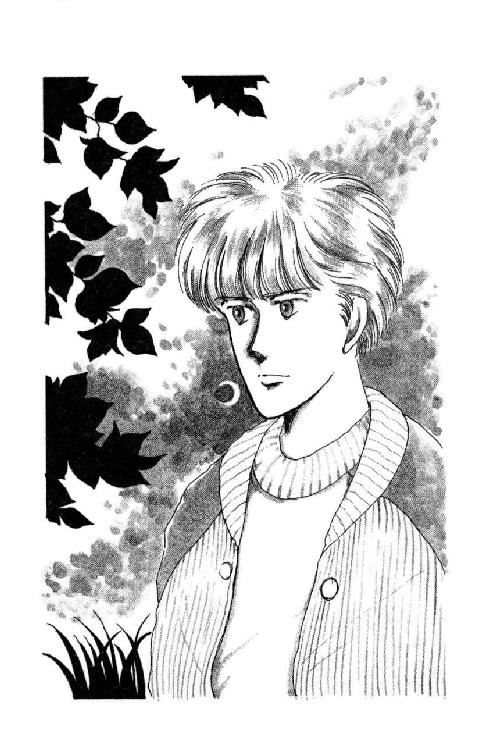
ああ。あたしって、ほんっとにおバカ！
「じゃあ、気をつけてな。未来ちゃん、明日、待ってるからね」
えっ......？
あ！ そうだ。そのお話をするの忘れてた！
「あの、あたし......明日......」
「ね、何着ていらっしゃるの？」
黒いセーターに千鳥格子のスラックス、いつもながらモダンなおかあさまが、目をキラキラさせながらおっしゃった。
「うららに何着せたらいいか、おばさん困ってるのよ。まったく、この娘は言うことを聞かなくて！ その点未来ちゃんは何でもよく似合うし、おかあさまもほんとうにセンスのいいかただから、うらやましいわぁ。あ、そうだわ、この間いただいたシチュー、とぉってもおいしかった。よろしくおっしゃってね」
「は、はい、あの......」
「おいおい、そんな、着るものなんてどうでもいいじゃないか。未来ちゃん、困ってるじゃないか、え？」
「あら、そんなつもりじゃないのよ。気張ることありませんからね。気軽にいらしてね」
「そうだよ。ご馳走もあるんだぞー。うちのが作るんじゃないからな、期待していい」
「どうせそうですけれどもねっ。あなたったら、召し上がることばっかりっ!!」
「この老体に他に楽しみがあると思うか？」
「あるでしょ。よそのかわいいお嬢さんとおしゃべりなさることとか」
「あ、そうだそうだ。それがあった。明日はあんまりしゃべってられないが、そのうちゆっくり遊びにいらっしゃいよ。青春の悩みごとは人生経験豊富なこのわしに」
つられて、つい、笑ってしまったけど。
わあん。困った！ こんな風に言っていただいちゃったら、今更、今更、やめた、なんてとても言えやしないじゃないのぉ！
「行きますよ」
きっぱり言って、朱海さんがカラカラと戸を開けた。
「あ、では、さようなら。ごめんください」
「もーいっちゃうのか？ 暗いから、気をつけてな」
「特に朱海くんにね」
「おかあさまに、よろしくよぉ!!」
「待っとるぞー!!」
......ぴしゃっ。
「ふー」
戸を閉めると、朱海さんは大きく肩を落とした。
「やれやれ......ごめんね......。みんな、明日のことで舞い上がっちゃってて、いま家中、躁状態なんだよね」
「そんなこと」
すごくさばけた、愉快なお家だと思うわ。ご両親のあのみごとな掛け合いにはちょっと戸惑わないでもないけど......家元夫妻だとはとても思えなくて......。
でも、うららを生んだかたがただと思うと納得できるし、うちのパパママだって、同じような感じだもんなぁ。
「押そう」
自転車のハンドルを受け取る時、朱海さんがトレーナーの袖をたくしあげたら、ペパーミント・グリーンのリスト・ホルダーが見えた。
「わ、さっそく」
「ふっふっふ。そりゃそうだよ。ほんとに、どうもありがと」
「気にいってくださって良かった」
「そりゃ気にいるってば。......それはいいけど......なんだか、ぼくがついて来たんで歩かなきゃならなくなっちゃって、かえって遅くなっちゃうかな。坂降りたら、ふたり乗りしちゃおうか」
「え？ でも、あたし、重いから......」
「平気平気。健脚の朱海くんですよ。まかしといて」
また髪切ったのね。ついこの前の日曜日よりすっきりしてる。明日に備えて、きちんとなさったのね。
十七歳。三月のあたしのお誕生日が来るまでは、朱海さん、みっつおにいさんなんだ。
あたしにはぶかぶかのリスト・バンドが、ちょうどいい。ちっとも太ってないのに、やっぱり男のひとなんだな。
......えっ......う、うそっ!!
こ、こ、こんな暗がりを、男のかたとふたりだけで歩いてるなんて！
ど、ど、どうしよう。胸がどきどきして来ちゃった。
わぁん、何か話題。話題。
「あ、あの......たどん！ そうだ、たどんなんて、作ってらっしゃるんですって？」
「うん。明日はぼくが作ったのは間に合わないけどね。しきたりだから。......ああ、そういえば、未来ちゃんはなにか、人形作ってたんだって？ 指中絆創膏だらけにして」
「え、はぁ......」
やだ。なんで話がそこに行ってしまうの？
お人形。バザー。バザー。学園祭！ ひ～～ん！ 思い出しちゃったぁ!!
くすん。困った。ほんとに、あたしはいったいどうすればいいんだ......あ、そうだわ。このチャンスに、バザーのこと打ち明ければ、朱海さんなら、朱海さんならきっと、わかってくださる!!
「じ、実はあの......」
「それ、もう誰かにあげちゃった？」
え......？
朱海さんの目の白いところが、夜の中に、くっきり光って見えて、あたしは目をぱちぱちさせてしまった。
「あのねぇ......なんか、こんなこというとセコいみたいだけどね。それ、ひょっとしたら、ぼくがもらえるのかなーと思ってたりしてね。いや、つまり、うららが、そうじゃないかって言ってたからで、けっして、けっしてこれが気にいらないとかそんなんじゃないんだよ。ほんとだよ!! ただ、未来ちゃんが自分で、いっぱい怪我してまで作ったものは、それじゃ、どうなっちゃったのかなぁ、なんて思ったらちょっとこのへんが痛く......」
そこまで言ってから、朱海さんは、ふいに正気に戻ったような顔をなさった。
「......ごめん。やっぱり言うんじゃなかった」
ぽつんぽつんと立っている誘蛾灯が、朱海さんの顔にくっきり影を作ってる。
そうか。うらら、そんなこと言ってたのか。朱海さん、期待してくださってたんだ。なのに......それなのに、あたしったら、もらいものなんか包み直してごまかして......。
わぁん！ ごめんなさい！
「あれは、あれは、誰のものになるかわからないんです!!」
立ち止まった拍子に、足の下で落葉がカサカサ鳴った。
「おとといから華雅で学園祭があって......その中で、前にあたしがいたクラブがバザーするんです。それに、出品してもらうために作ったもので、それで......」
あたしは、去年のバザーの時のことから、みんな話したの。
麗美さんのクッションのこと、池貝のこと、あの知らない女の子のこと。トコに誘われて、ランチョン・マットを作ったこと。
「だから......だから、あたしの気持ちとしては、その名前知らない女の子にペアで持ってて欲しいけど、誰のものになるかわかんないし。ひょっとすると、今度こそ最後まで売れ残っちゃうかもしれません。タキシードが難しくて、ひどい出来になっちゃったから......。でも、でも、とにかく、けっして朱海さんをないがしろにするつもりなどはっ!!」
「......そうだったの」
自転車のスタンドをたてて、腕組みをして、ずっと黙って聞いてくださっていた朱海さんは、なるほどね、って大きく息を吐き出した。
「よくわかった。うららとぼくの勝手な早合点だったわけだ」
勝手、だなんて、そんなことはないけれど。
実際、ちょっと思いつかなかったわ......まさか、まさか、朱海さんが、そんなにお人形が好きだったなんて！
知らなかった。ひょっとしてバービーちゃんとかに凝ってらっしゃるんだったりして......なにしろ、美を追究する定めにあるひとだからなぁ。ありうるわ。
「あの、もし、少し待ってくださるなら、テスト終わったら何か作ります。ご希望のものがありましたら言ってください」
「いいよ。また指を刺すと大変だし。バースデイ・プレゼントはちゃんともらったんだし」
ちゃんと。
ううう。それを言われるととっても苦しい。
なにせ、なにせ、横流しなんだもんっ!!
「どうか、ご遠慮なさらずに。作るのは好きなんです、でも、けっこう時間かかっちゃうから、もらってくださるかたがないとなかなか燃えられなくて......下手ですけど、やりますから。どんなのがいいか言ってくだされば」
「何でもいい？」
「できそうなのなら」
「ほんとに？」
立ち止まった朱海さんの肩ごしに、切り落とした爪の先みたいな細いお月さまが見えた。暗い道だから、知らないうちにうんとそばに寄ってて、うんと見上げるかっこうになっていたの。
朱海さんは、黙ってあたしを見てた。
ふいに、その瞳にこめられた何かの魔法であたりの空気が薄くなったみたいに、息ができなくなったのよ。
目をそらすこともできない。まばたきもできない。
頭の中のどこかが、ぼうっと痺れるみたいな感じがした。
「......思えば今日はぼくの誕生日なわけだ」
お月さまのイヤリング、異国の王子さまみたい。
アラビアン・ナイトの絵本に出てくる不思議な魔法使いみたい。
「できたら、今日、欲しいものがあるんだけどな......実は、それって、未来ちゃんにしかできないものなんだけど」
星の瞳、夜の髪。ああ。朱海さんって、何てきれいなんだろう。
やだ。どうしたの？ 変よ。胸が苦しい。
「......未来ちゃん......ぼくは、ぼくは......」
言いかけて、突然。
朱海さんは、ハッ、としたみたいにあたりを見回した。
それで、空気がもとどおり、流れ出したのよ。
「......あ、ごめんなさい、何か？」
「いや......こういう時必ず出てくるやつが、こっそりついてきてるんじゃないかって気がしてね。いないな。やれやれ......」
ふうっ、と息をしてから、あたしに向きなおってから、朱海さんは、急に、わっ！ と叫んで、目を覆った。
「し......しまった......せっかくのタイミングを......うららも出なかったのに......ううう」
がるるるるる、と朱海さんは唸った。
「朱海さん？ 朱海さん？ 大丈夫ですか？ ご気分でも？」
「......ああ、ああ、平気。大丈夫、大丈夫」
笑いながら手を振られて、唐突に気をとりなおしたみたいに自転車を押して歩きだされたけど。
なんだか、歩き方にお元気がないような気がする。
「ほんとうに？」
「ああ。ちょっと、発作がね」
「ほ、発作？」
「うん。もーちょっとで狼おとこになるとこだった、なんてね」
「え？」
おおかみおとこ？
や、やだ、怖いこと言わないで......あたし、その手のお話まったくだめなんだから......ご存知なはずなのに、なんでまた、朱海さんが？
あ、そっか。
きっと、冗談よね。こんな夜の森だから。
あたしだってちゃんと知ってるもん！ きっと、ちょっと前に流行ったあたしと同じ名前（あちらは男性だからマイケル、だけど）の歌手のかたのビデオ（註13）のお話よ。
「それはそうと、明日のことなんだけど」
「あ......はい!!」
いっけない！ ......もう、大事なこと言うの、どうしてこうすぐ忘れちゃうんだ!!
「なんかね、ぼくとしてはごく軽い気持ちで誘ったんだけど、迷惑じゃなかった？」
......ああ。
ほんとうに、朱海さんってすごいと思うの。
どうして本人がちゃんと言えないでいること、わかっちゃうの？
いえ、あたしはけっして、迷惑だなんてそんなもったいないことは考えてないけど、でも、ちょっと困ってるのは確かだもん。
言うのよ！ 今しかないっ!!
「実はねぇ、なんかうちの姉たちまで来るらしくって」
「え？」
おねえさまがた？
あ、香織さんと、あと、ええと確か、志乃さんと毬さんがおねえさまのお名前だったわ。
志乃さんは大恋愛をなさって十九でお嫁に行かれ、毬さんは今東京のマンションにおひとり住まいで大学に通ってらっしゃるとか。
そのおねえさまがたがいらっしゃるからって、どうして朱海さんが、そんな苦しそうな顔をなさらなきゃならないの？
「ひょっとして、お席が足りなくなっちゃったとか？」
「いや、そうじゃなくて......やつら、うららに未来ちゃんのこと聞いててなんか、すごく楽しみにしてるっていうか」
......まぁ！
ありがたくももったいないお話だわ。そんな、そんな楽しみになんかしていただけるほどおもしろい人間でもないつもりなんだけど。
でも、嬉しい。そんなに。こんなあたしのこと、待っててくださるかたがいらっしゃるなんて......わぁん！ 感激です。
「いや、ほとんど手ぐすね引いて待ってるっていうか......それで......未来ちゃんがいやな思いをしたら困るなぁって......いや、もちろん、悪意なんか全然ないよ！ むしろ反対なんだけど、なにしろ過激なやつらだから」
「え？」
......悪意の反対？ 楽しみ......うららに噂を聞いた......？
なんか、いやーな予感がして来た......。
「つまり......つまり、未来ちゃんのことを、そのぼくの......」
「よ、嫁だって思っちゃってらっしゃるとか!?」
「......よくわかったね......！」
もう林を抜けるところで、朱海さんのびっくり顔がくっきり見えた。
「全然気づいてないかと思ってた」
「だって、うららは、学校でも、みんなが誤解するにまかせておもしろがっているんですよ！ 否定しないばかりか、火に油を注ぐようなことばかり......あわわわ」
いけない。また、言いつけるみたいなことをっ!!
「すみません、そんな根も葉もない噂、あたしがしっかり消し止めればいいんですけど、つい瑣末事にとりまぎれまして」
「いや、ぼくはいっこうに構わないんだ」
構う。絶対に構う。
お弟子さんがただって大勢いらっしゃるのに、うら若き朱海さんに浮いた噂など、品位を損ね、家紋を傷つけてしまうかもしれないじゃないのっ!!
あたしのせいで、西在家家十三代の名誉と伝統に泥をかぶせてしまったりしたら......ああ！ 死んでおわびしたって、許される問題じゃないわ！
「未来ちゃんさえいいなら、いっそこの際」
「ちゃんと言います!!」
「え？」
「寛大なお心をきっとひと知れず痛めてらっしゃるだろうおねえさまがたに、あたしにはそんな大それた企みはないと、明日、お目にかかって、はっきり申します!!」
６
ううう。こんなのってあり？
おじさまのうそつき！ 気楽に、っておっしゃったのにぃ！
何なの、この人出は。
タクシーで西在家さん家まで行こうとしたら、坂の途中から、もう、すっごい渋滞なの。それもなんだか立派な黒塗りのお車ばかり、ずーっと上まで繫がっていて、普段だったらあっという間に通ってっちゃう道に十分近くもかかってしまった。
ご門前で車を捨てて入って行くと、居並ぶご婦人令嬢の大振り中振り色留めに、秋色に染まりかかったお庭も春のようなきららかさ。以前の聞香会のときにはみえなかった男性客も大勢いらして、羽織袴のカクシャクとしたおじいさま同士が、なにやら政治経済っぽいお話を交わされている。
どこから入ったらいいかわからなくて、お庭を鯉の池のほうまでぐるっと回ってみれば、こちらもひと、ひと、ひと。どこからか、典雅な雅楽が聞こえ、お客さまの群れは大勢いらっしゃるのに、それぞれまったく気ままにおしゃべりしてらっしゃるようなのに、まるでバレエの群舞をみるように整然と雅やかに美しいやら、奥ゆかしいやら。
なんだか、テレビで見たことのある園遊会みたい。
小紋なんて着てるのあたしだけだ。もしかしたら、正式な聞香のしかたを知らないのもあたしだけなんじゃないかしら。
はっきりいって、気後れしてる。場違いだと思う。
こ、こ、これではおねえさまがたにお目もじするどころじゃない。とりあえず、まっすぐ正しく美しい和服の歩きかたをしてられるかどうかでせいいっぱいだっていうのに、あたしったら、あたしったら......。
あああ。来るんじゃなかった......。
そう思ったけれど、足がすくんじゃって、はかばかしく動けやしない。戻ろうにも、お着きになるひとがまだ続々つづいていて、かきわけて出るのにはずいぶん勇気がいると思う。
わあん！ こんなところで、こんなところで、どうすればいいのよぉ!!
ああ、せめて、朱海さんかうららか、おじさまかおばさまがいてくだされば......。
「もしもし」
「きゃっ！」
肩を叩かれて。飛び上がりながら振り返ったら......良かったぁ。お洋服のひともいたんだ。しかもあたしと同じくらいのお年で......あれ？ あれ、確か、どこかで？
「浅葉さんでしょ？」
「はい？ ええと......」
「小熊です」
「ああ、香織さまの！」
「おぼえてておくれなすって痛みいりやす」
小熊辰子さんは、金赤色のワンピースの裾をひるがえして、さささ、と仁義を切った。
「あ......いっけね。組の集まりと間違っちまった。......あのね、さやかさま......じゃなくて、香織さまに頼まれて呼びに来たんだ。みなさんお待ちかねですんで、ささ、どうぞ、お客人」
......ご、ごくっ!!
いよいよおねえさまがたと対決だ！
言われたとおりの時間に来たはずなのに、廊下を通っていくと、もう、お屋敷のあちこちでお茶やお香のお点前が始まっているのが見えた。これだけ大勢のひとがいると、障子ふすまをほぼあけはなしてあっても、ほんのりと暖かい。
渡り廊下の角を曲がったとたん、三十畳の大広間いっぱいをうめつくし、向こう側の廊下にまであふれてるひとの群れが目にはいって、思わずのぞきこんでしまったら。
正面奥、金襴の屛風を飾った前に気負った風もなく背筋を伸ばして座っていた和服のひとが、すっ、と沈みこむように頭を垂れ前に両手をつくのが見えた。
あ、あれって、朱海さんじゃない！
「本日はまことにおめでとうございます」
列のいちばん朱海さん寄りにいたお年寄りが、ちんまりと蛙のようにからだをすくめて深々とお辞儀する。
「ありがとうございます。どうかよろしくおねがいいたします」
「若宗匠もすっかりご立派になられて、お家元もご安心ですね」
「いやいや。まだまだでございますから」
朱海さんの向こうにいたおじさまが、ご挨拶を返され、蛙のおじいさんがとびきり長いお辞儀をなさって退くと、次のひとがすすす、と前に出て、
「このたびは。たいへんおめでたきことで」
うわー。......ひとりずつあれじゃ、大変だわー。朱海さん、脚痺れちゃわないかしら？
でも......うわー。よその世界のひとみたいだ。さすが、貫禄なんだー。
「ご挨拶なさるんですか？」
肩の後ろで、小熊辰子さんが言った。
「え、いえ、結構です、そんな」
「まー、やめといたほーがいいですよ。とーぶんかかりそうだし。こんなお焼香みたいなのはしないはずだったのに、何人か並ばれて挨拶をなさってるうちに、たちまちこんなになっちゃって。まったくご老人がたは義理固いから......あ、お身内衆はうららんとこですから、こちらへ」
「はぁ......」
通り抜けてくお座敷のあちこちで、聞香は聞香らしいんだけど、なにやらそれぞれ変わったことをしているもんで、つい、いちいち尋ねてしまった。
「こちらは？」
お部屋の真ん中に木彫りのおもちゃみたいなものが並んでいて、向こうとこっちに分かれたかたがたの何人かは、手にした短冊に数字を書き込んでいる。
「競馬香って言いましてね、東西南北四組に分かれて匂いあて比べをして、当たった組の馬がひとこまずつ先に進めるわけです。人数が多すぎるんで、あまったお客人がどこが勝ちそうか予想なんかもしてるみたいですね」
「へぇぇぇ。......こちらは？」
「音寿美香です。連歌と聞香を組み合わせた宝珠流独特の典雅な遊びでして。これも紅白ふた組にわかれましてね、まず、それぞれの組のお正客が香を聞かれて上の句を詠みます。次に、ふたりのお客人が拝聞なさって下の句を詠む。詠めなかったり、句として成立してないと判定されれば失格です。次にさらにその句ひとつにおふたりずつのお客人が上の句を詠み、また下の句......と、次々続けて、どちらの組が親、子、孫、曾孫、どれだけ多くの名句を詠めたかを競うと」
「はぁー。連歌ってただひと通りの流れしかないものかと思ってたけど、このやりかたなら、どんどん枝分かれしていって、膨大な数になりますねぇ」
「豊かな感性と深い教養が必要なものです」
「......このお部屋は？」
何人かの、お坊さんみたいなかっこうの方々が、岩や貝殼の破片みたいなものを砕いては、計って乳鉢にいれ、ごりごり擦っていて、なんだか正露丸を飲んだ直後に白檀のお扇子を使ったみたいな風変わりな匂いが、あたり一面に漂っている。
「ええと、確か烏呂拿印楠香、大変難しい字を書きます。練り香の一種を作っているところです。これも宝珠流秘伝のひとつで、この香は薬品を兼ね、切り傷すり傷かゆみにたいへんよく効くといわれてます」
「ははぁ。......あれ......あの、あちらも、聞香のお部屋ですか？」
「えっ？」
あたしの肩越しにのぞきこんで、小熊さんは、ああ、とうなずいてみせた。
「ああ。あれは妃卯羅香（註14）です。含香、といいましてね、口にくわえたり、舌の裏に入れて楽しむ香を嗜まれているところです。密教では、読経の際、あのような香を口にし、塗香という見た目はまるでお味噌みたいなどろどろした香をてのひらや衣服に塗りこんでお祈りなさるそうですよ。お坊さまご自身の穢れを清めて、より仏さまに近づこうと......お線香を徹底させたようなものですね。宝珠流は仏教と大変深く関わってますからね」
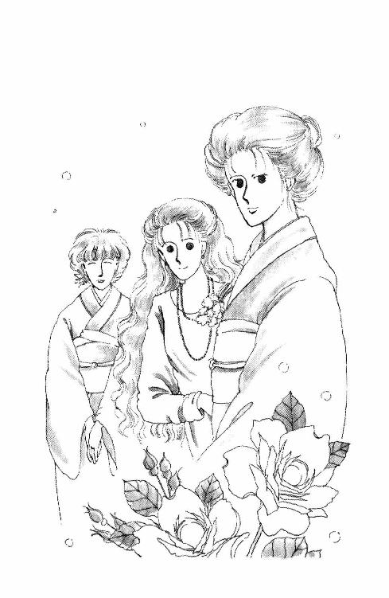
「なるほど......」
それはいいけど。
「どうしてサングラスをかけているんですか？」
「卑しいものを見ぬようにして、精神統一をはかるんです」
「じゃ、あの片耳ピアスは？」
「イヤリングではありません。経絡秘孔、ツボの一種を針で押さえ、より深く幽明の境地に遊ぶためのお作法です。......あ」
「さすがによく覚えているわね」
すずやかな声に振り向くと。
「先生」
小熊さんが深々とお辞儀なさった。
百合牡丹、桔梗鉄線杜若、四季折々の花を描いた豪奢な黒留め袖をみごとに着こなされた香織さまを先頭に、何人かの女性が立ってらっしゃった。みなさま、どこかしら、うららや朱海さんに面ざしが似て......。
お、おねえさまがただ!!
「ご苦労。なかなか来ないから、様子を見にきたのよ」
「申しわけありません、つい」
「ごめんなさい!!」
あたしは、すっ、と顔をあげた。
「あたしが、あれこれうかがっていたんです。小熊さんは悪くありません」
「楽しめた？」
「はい。......なんだか、動く美術館でも拝見しているみたいで......あ、あの、おしばらくです。今日は、このような大変なお席にお招きいただきまして......」
「まー、じゃ、こちらが浅葉さんのお嬢さん!?」
枯れ山水の渋いつけさげに金の帯、柔らかな目もとがうららのおかあさまによく似たかたがおっしゃった。左手のくすり指に細い指輪をしてらっしゃるところをみると、お嫁に行かれた志乃さまだ。
「うわー、ほんっとかわいー子！ お人形さんみたい!!」
象牙色のニットのワンピースの髪の長いかたが、あたしの手を取って、ぶんぶん振った。
「ま、毬さん、ですか？」
「きゃあ！ そうよ。知っててくれて嬉しいわ。ね、ね、あっち行きましょ。おねーさんと遊ぼ。お化粧してあげる!! ね、きっと、真っ赤な紅さすともっと素敵よ♡」
「......あ、あの......」
「だめよ、この子はあたしのとこ来るのっ!!」
きゃあ！ 毬さんにつかまれてないほうの手、香織さまがひっぱった！
「これでようやくメンツが揃うんだから。ね、未来ちゃん・あなたお上手なんでしょ？」
「は？」
「麻雀よ、麻雀。うららから聞いたわよ。あたしが鍛えたこの小熊に匹敵するすご腕だって」
「えー、でもこの子飾って遊びたいのにー」
「後にしなさい」
鮮やかなピンク色の唇を尖らす毬さんを、香織さまは、キッ、とにらんだ。
「さ、行くわよ!!」
両手を取られて、なかば引きずられるようにして歩いていくと、通りがかったひとがみんなほうっ、と感動とも恐怖ともつかないため息をもらしてた......。
「およしなさいよ、そんなに乱暴に」
あたしの横から、枯れ山水の志乃さまが、にこにこしながらおっしゃった。
「ごめんなさいねぇ。変なひとたちでしょう」
「い、いえ、そんな」
「ご迷惑だけど、主人も是非一度あなたと勝負してみたいって、待ってるの。あら、迎えに来たわ。待ち兼ねたのね」
思わず、首をねじって志乃さまの視線の方向を見て......磨き上げられた廊下の板に、ずるっ、と滑りそうになってしまった。
「やぁっと来た」
「連行されとるな」
懐手をしたまま、うららと目配せしあってクスクス笑っていたのは......。
ツル先生だった。
「独身だなんて......どうして、そんなうそを!!」
左手で右の袂を押さえておいて、えいっ、と牌を持ってきながら、あたしは言った。
「いや、そう怒るなよ。いろいろとまずいだろ、なにしろ女子校だし、義理の妹の担任だなんつーのは......」
「リーチ!!」
と小熊さんが、千点棒を出した。
「あ痛た......もうかよ？ 一発は避けたいなぁ......ええと」
「晃司さん、お早くなさって」
「待て待て......よく考えさせてくれよ、香織ちゃん」
吞気にぽりぽり頭を搔いてるツル先生の後ろに、まだお若い奥がたがにこにこ座ってる。
......信じられない......ツル先生が西在家さん家と親戚同士だったなんて......うららの義理のおにいさんだったなんて......。
まったくみんなで、とぼけてぇ!!
奥様の前だけどねぇ、それって、それってやっぱり......。
「美土里さんがかわいそうです!!」
「うーん。ありゃーねー......俺もまずいとは思ってるんだが、西在家が......いや、うららが、おもしろがってけしかけてなー、最初は冗談だったのに植田のやつすっかりその気に......えい、これだ!! ふう。通ったか」
「なんだよぉ、何でもあたしのせーにすんだからー！」
うららは、おもちゃであやしてあげてたちいちゃな坊やに身を屈めて。
「亀ちゃんはパパみたいな悪い男になっちゃだめだぞっ！」
赤ちゃんは、きゃっきゃきゃっきゃ言いながらうららの髪をつかんで、ひっぱった。なんでも鶴橋亀太郎くんというらしい。
おめでたいって言えばおめでたい名前だけど......小学校にあがったりしたら、クラスの子にからかわれそうな名前だなぁ......いいのかしら？
「カン！」
「おおっとツルの逆襲!!」
「へっへっへ！だ。......ねー、香織ちゃーん、いいけどね、その立て膝やめてくんない？ 赤いもんがチラチラして、とっても心臓に悪くって」
「これも作戦のうちよっ！ ほら、リーチッ!!」
「先生、申し訳ありませんが、それ、ロンなんですけど」
「ぎゃー!! おまえって子は!!」
「すいません。でも、高い点じゃありませんから。浅葉さんが上がるより被害少ないと思いますから」
う......。
小熊さん、鋭い！ あとひと息でコクシだったのに。捨て牌読まれてるんだ......。
「未来ちゃんとやら、早いとこ負けちゃっておねーさんと遊んでー」
やだいっ！ 負けられないもんっ！
ええい、この次はっ!!
......じゃらじゃらじゃらじゃら......。
あ......？
なんでこんなことをしてるんだろう？
なんかあたし、しなきゃいけないことがあったんじゃ......学園祭を捨ててまで麻雀をしに来たはずは......完全に西在家さん家のペースに巻き込まれてしまってるような気が......。
あん、だめだめ！ 気を散らしたら負けるわっ!!
「オーイ」
からっ、と襖が開いて。
うわっ、バートさん！ おひさしぶりだぁ。
「やっぱりここか。ノッてるみたいだけど、ランチだって」
三十畳の広間に呼ばれると、ご法事の時にしか見たことがないみたいなお膳だった。
百人からのひとが並んでる。それでも、入りきれないかたがたは時間をずらすとかで、お庭を散策なさるかたがたからのぞきこまれながらの会食となった。
さすがのおねえさま軍団もツルさんも、つい今さっきまで麻雀牌を搔き回してたなんて微塵も匂わせず、にこやかに挨拶をして回られてる。
金箔の浮いたおすましに口をつけながら、あたしはそっとため息をついた。
なんだか、気が抜けちゃった。
西在家さん家って、二重の意味で、ほんとに大変なお宅だわ。
なにげない顔でツル先生の秘密だって抱えこんでしまってるんだもの。赤ちゃんまだあんな小さいし、香織さまよりお若いはずだから、志乃さん二十歳前後なんじゃないかしら。ずいぶん早いお嫁入りなのに、悶着は起こらなかったのかしら？
結婚式なんて、いったいどうなさったの？ お弟子さんがたにだってお披露目すれば、葉山なんて小さな町よ。ツル先生が独身だなんて噓、すぐバレちゃうはずじゃない。
まさか......こっそり、密かに、ひと目につかないように、とか......。
こんなご大家なのに？ なんでわざわざそんなこと？
......わかんないわー。
お屋敷中で家伝の秘技をご披露している時に、お嬢さまがたがうちそろって麻雀などに興じてるようなお宅だからなぁ......あたしの理解の範囲、越えてるみたい......。
これじゃ、あたしごときが朱海さんとちょっと噂になったぐらいで、おろおろなさらないのも......一家をあげておもしろがってらっしゃるのも、無理ないかもしれない......。
一番、普通ですんなり理解できるのは。
正面上座、紫色のぶ厚いおざぶには、きれいな手付きでお箸を使ってらっしゃる朱海さんの凜々しい袴姿。
こんな大層なお集まりの要の座に座ってらっしゃりながら、まるで、いつもとかわらないように見える。
すごいなぁ。
あたし、今日、いろんなお部屋のお点前を見て、思ったの。
格式ばって気取りすぎるのもいやらしい。かといって、放埓に崩れるのはお粗末よ。ごく自然に、なにげなく、最初は目にとまらないくらいどうってことはない所作なんだけれど、聞香のその場を心から楽しんでらっしゃるらしいひとのお点前が、一番美しく見えた。
その点朱海さんは、黙ってごはんを食べてるだけで、気負いもなければ不作法でもない。
めだたないけど、風格がある。
......ふう。さすがに、次の宗匠になられるかたなんだなぁ。
あのひとといっしょにヨットに乗ってるのかぁ。なんだか、不思議。
ぼうっとして眺めていると、ふいに、朱海さんと目があった......と、思ったら。お箸を置いて、左右のかたがたにちょっとにっこりご挨拶して、こ、こ、こっちにいらっしゃる!!
「ようこそ」
きゃあ！
そんな、そばに座ってくださると、みんなに見られちゃう！
「おじゃましてます!! あの、本日はほんとにおめでとうございまして」
あわてて、おざぶを滑りおりて、両手をついたのに。
「そんなこといいってば。未来ちゃん、昨夜きみが帰ってから急に思いついたんだけどね」
「はい？」
「華雅に行かなくて良かったの？」
三つ指ついたまま顔をあげると朱海さんの真面目な瞳とばったり出くわしてしまった。
「昨日もおとといも学校だったでしょう。今日は、ほんとはそのバザーに行ってみたかったんじゃないの？」
「あ......」
「だったら、無理しなくていいよ、って連絡しようと思ったんだけど、思いついたのがもう夜中でね。今朝はばたばたして電話できなかったんだ。もし、行きたいんだったら、車を出してもらってあげるよ。まだ間に合うでしょう？」
これから......華雅のバザーに？
バザーに、行けるの!?
「ほんとはぼくも......その、未来ちゃんのお人形とやらの行方が気になるからね、行きたいとこなんだけど。この後点前しなきゃならないんだ。だから、岸田さんによく言っておくから、ごはん食べたら、姉貴たちにみつからないうちに......」
「若ぁ？ 若ぁ？ まぁ、こちらにいらっしゃったの？」
大正ロマン夢二の絵みたいな、粋な着物のひとが、すり足の小走りで近づいてきたかと思ったら。
「あら、浅葉さん」
太く描いた眉を露骨に寄せたのは、鈴原みづゑさんだった。
こんな日に、このひと来ないはずがないもん。そろそろ、逢っちゃう頃だと思って、覚悟してたから驚かないわ！
「おしばらくです。夏中おあずかりしてたウィンド・サーフィンのお道具、いつ頃取りにいらっしゃるんですか？」
「あら。あれは、ウリちゃんにさしあげたつもりだったのよ。あたくしまた新しいの、買いましたからいいの！ ふぅん、浅葉さんとぉってもいいお召しものね、かわいらしいわぁ。まるで七五三か、猿回しのお猿さんみたいねっ！」
ふんっ！ って感じに鼻息荒く言ってから、みづゑさんは、あらぬほうを眺めてらっしゃる朱海さんに気付いて、さぁーっ、と白くなった。
ぎろっ、とあたしをにらんでおいて、うって変わった猫撫で声で、
「若宗匠、そろそろ蘭奢待のおしたくをしてくださいませ」
「わかった。今行く......じゃ、未来ちゃん」
とろーり、と、とろけそうに微笑んだみづゑさんは、朱海さんがあたしに話しかけだしたら、朱海さんの背中越しに、顔中に皺をよせていやぁな顔をした。あたしがお猿だとしたら、きっぱりお獅子よ。吹きださないように、あわてて頰の内側を嚙まなくちゃならなかった。
「今日はありがと。また日曜日にね。じゃ、気をつけて」
「あら？ ......浅葉さん、お帰りなの？」
みづゑさんが、世の中にこんな嬉しいことはない、って顔をした。
「んまー。これから、若が、今日いっちばん大切なお点前をなさるっていうのに？」
今日、一番大事なお点前......？
そうだわ。蘭奢待！
一生一度しか炷かないかもしれない、大変なお香。
朱海さんの、皆伝のお祝いの、今日のメイン・イベント！
思わず朱海さんを見上げると、やさしく目を細めて、ちょっと首を振り、立ち上がりしなにみづゑさんを振り向いた。
「未来ちゃんは用事があるんだ。ぼくは、もう珠姫殿のほうに行くから、よかったら、岸田さんに車を頼んでくれないかな？」
「ええ、ええ。わかりましたわ。すーぐ、お願いしてきますわ」
マクドナルドのおねえさんを思わせる極上のにこにこで、みづゑさんも立った。必要以上に朱海さんに近い位置だった。
「ま......待ってください！」
般若のみづゑさんと、ちょっと困った顔の朱海さんが振り返った。
「あたしにも、その、名香を聞かせてください!!」
離れに作られた十二畳ほどのお部屋の、床柱を背にした位置に朱海さんは座っている。
畳に敷いたお雛祭りの緋毛氈みたいなものの上に、丸いのや四角いの、油絵や理科実験室の機材を思わせる形をしたさまざまなお道具が並べてある。
ひとつひとつに位置を確かめるようにそっと手をかけると、朱海さんは、胸元から萌黄色の小さな包みを取り出した。ちょうど、神社でもらう交通安全のお札の一番お安いのぐらいの大きさだった。
お部屋にあがっているお客は十人ほどだったけど、離れの外のお庭から、その何倍ものひとがのぞいている。誰ひとり咳払いひとつせず、バートさんのビデオの回るウーンっていう音ばかりが響いた。
そうよ。まるで、映画でも撮っているみたい。
このお部屋にいるかたがたは、あたしと、朱海さんの後ろに控えたうららとみづゑさん以外、みなさまたいそうお品よくお年を召されたかたがたばかり。顎ひとつ動かさずにどっしりと座ってらっしゃる。定められた筋書きのお芝居をしているみたいな迷いのない表情で。
お道具はみんな、朱海さんの手の中にすっぽり納まってしまいそうに小さくて、なんだか遠近感までなくなって来る。その感じは、朱海さんが、和紙の包みをゆったりしたしぐさで広げるにつれて、催眠術にでもかかったみたいにだんだんと強まって来る。
ここにいるのはほんとうにあたしなんだろうか？ ほんとうに、ほんとうのあたしなんだろうか。
ほんとうのあたしはどこか別の場所にいて、長い長い夢を見ているんじゃないかしら。
葉山に来たことも、いろんなひとたちに逢ったことも、うううん、三番町に住んでいたと思いこんでいるのもみんな夢で、過ぎてしまったと思っている時間は、ほんとはまだ、まばたきするほども動いていなくて。あれこれ迷ったことも、悩んだことも、ただの夢。
例えば、やけに遠く小さく見えるあそこで、大切なつとめを果たそうとしている朱海さんも幻で、だから、朱海さんと話したことも、いっしょにヨットに乗ったことも、みんなみんな、目が覚めてしまったら二度と取り戻せなくなってしまうはかない夢だとしたら......。
......だったら、どうなの？
これが噓じゃなくたって、現実だとしたって、この瞬間が二度と戻らないのは同じことだわ。朱海さんにとってだけじゃなく、あたしにとっても。今は、一生に一度の時。
それで、いいじゃない。
今、あたしは、こうして、ここにいると思っている。この時が過ぎて、ただ思い出すだけになってしまったら、きちんと思い出せるように、みんな、みんな、よく覚えておこう。
ああ、朱海さん、いつか言ったね。
どんなにかけがえのない香木でも、炷いて聞くことがなかったら意味がないって。
みんな消えていく。過ぎて行く。
だから、よく聞いて覚えておいてあげなきゃいけない。
ほら、二度と取り戻せない何百年という時間が、今、火の上にかざされた。
燃えて、かたちのない匂いと、ただの灰になり始める。
ちいちゃくていやんなっちゃうようなあたしの時間の中に、聖武天皇の御代からの長い長い時が放たれる。あたしはこの刹那、歴史よりも大きい。流れ去るだけの法則を越えて、時が匂う......。
頭がぼうっと痺れたみたいになって、何も考えられなくなった。
やがて、てのひらに隠れてしまいそうに小さな香炉がめぐってくる。左手で支え、右手で蓋をするように覆って、顔の前に持って来ようとした時、それが見えた。
小山のかたちに盛りあげられた灰の上に、正方形のプレパラートのようなもの。銀葉、って言われてる薄い薄い雲母だって知っている。あまりに小さな香木を、直接火に乗せたらひと息もしないうちに燃えてしまうから。その銀葉の中央に、折れた鉛筆の芯よりもっと小さいほどの、木のかけらがあった。
これが、それなんだ。遠いよその国から海を渡り、何百年もの間大切にしまわれ、さまざまな人の手を経て来たもの。......とてもそうは見えないけど。なにしろ、フッ、と吹いたらなくなっちゃいそうで......。
いけない！
考えている場合じゃないんだわ。まず、聞いてみなくっちゃ。
鼻に近づけて、息を吸い込んだとたん、お作法のことも、お部屋にいるほかのひとたちのことも、手の中の小さな炉の暖かさも、みんなどこかに行ってしまった。
重さも大きさもない世界の真ん中に、あたしはぽっかり浮かんでいた。
その心地よさの正体を確かめたくて、もうひと息吸い込むと、一瞬のうちに花がほころぶように、何かがぱぁっ、と広がった。どこまでも。伸びていく端を追いかけようとして、あきらめた。それは、逃げていくんじゃなく、近づいて来た。通り過ぎていくんじゃなく、戻って来た。
気がつくと、あたしは目の前の畳に置いた炉に、低く低くはいつくばるようにしてお辞儀していたんだ。涙があふれてて、なかなか顔があげられなかった。
あたしは知った。
これこれこういうものだ、とことばや動作や何かの譬えで明かすことはできないけれども、あたしはそれを知った。
「驚いたねー、そんなに感激するものかね？」
気が知れない、って顔で、言ううららに、あたしはまだはれぼったい目を向けた。
「そんなこと言う前に聞いてごらんなさい」
うららの腕の中で亀太郎ちゃんが、すうすう眠っているから、大きな声は出せなかったけど、ひどい鼻声だったのは間違いないわ。
「あー、そうするよ。そのうち」
「うん」
「......あ、来た来た」
お玄関の前に、黒い車が止まって、岸田さんのお顔が見えた。
「着くまでに、その顔なんとかしときなよ。あんたの麗美さんによろしく」
「ありがと。朱海さんに......素晴らしかった、ってお伝えしてね」
「わかったわかった」
「......じゃあ、行くわ。すみません、お手間さまです」
「いんや！」
例の甲高い声でおっしゃる岸田さんに一礼して、ベンツに乗り込む。
ああ......もー、なんだかうまく考えがまとまらない。
ほんとに、あれは何だったんだろう？ あの感じは。
とにかく......やっぱり、今日西在家さん家に来てよかった。こうして学園祭にも行けることになったし!!
わぁい！
......あ、そうだ。
「岸田さん、岸田さん？」
「なんです？」
「あのう、逗子駅まででけっこうです。電車で行きますから」
「いや、そんな遠慮しなくていいですよ、みーくんの大切なかたなんですから」
......うっ......。
岸田さんまで......。
忘れてた......そのことを訂正しに来たはずだったのに、もう、なんでこうあたしって、初志貫徹できないんだろう!?
「でも、お客さま大勢いらっしゃったし。今日は岸田さん、お忙しいでしょう？ お年を召したかたも多かったし、お送りしてさしあげなきゃならない大変なかただって」
「いいんですよ」
「でも」
「いい......」
言いかけた岸田さんが、急に、なんとも言えない笑い顔でふりむいた。
「そうですね。そうしましょうか？」
......え？
え、何なの？ その指は？ 指さしてるの、あたし？ ......違う？ じゃ、外？
......あーっ!!
道路の端に寄せて車が止まると、ライトでちかちか合図していた真っ赤なバイクが、風みたいに右側を通り抜けて、ほとんど真横を向くようにして急停車した。走りながら、ヘルメット脱いで、あたしの顔のよこウィーンって唸りながらおりてく電気仕掛けのウィンドウ、革のグローブで押さえてのぞきこんだ。
グレイのジャケット、昨日と同じピンクのトレーナーのえりもとがくしゃくしゃよ。
「わーい、追いついた！」
「朱海さん！」
鼻声なのも忘れて叫んでしまったわ。
「どうして？ どうして？」
「ぼくも行く」
「お家は？」
「半日ご奉仕したからね、も、いいの。腹が痛ぇ、っておやじにバトン・タッチしてきちゃった。やー、二分で着替えたとこまでは良かったんだけど、お客さんたちにみつかんないように抜け出てくるタイミング見計らって、大分ロスしたんだよねー。もー、だめかと思った。......岸田さん、申し訳ないけど、逗子までいいかな？ 彼女着物だから」
「あいあい」
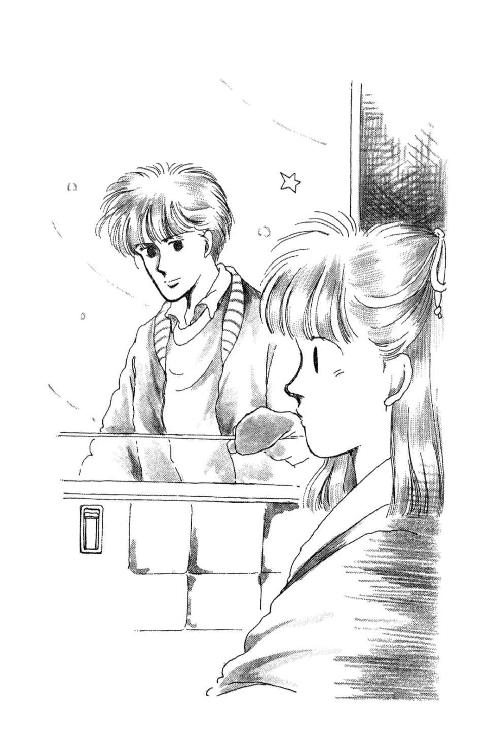
「じゃ......駅で！」
「待って......待って、でも、せっかくの免許皆伝のお祝いなのに、そんなのだめですよぉ!!」
朱海さんは、数歩先で肩をすくめると、ゆっくり戻って来た。
「午前中いっぱいぼくが延々ご挨拶してたの見なかった？ あれで充分なの。それにね、ごく親しい連中は朝まで酒盛りやるに決まってるから、最後のシメの時にはちゃんと戻ってるよ。それとも......いっしょだと、迷惑？」
「............」
だって、だって、心の準備が!!
そりゃ、トコも麗美さんも朱海さんのことはもう知ってるし、は、反対、とかはされてないけど、学園祭にいっしょに行くっていうのは普通は、普通はしなくて、婚約とか、そういう大変なかただけで......。
「じゃあ、ぼくはぼくで行こうかな」
「は、入れませんよ！ 招待状がなかったら!!」
朱海さんは懐に手をいれると、手品みたいに、パッ、と何かの封筒を出した。
か、華雅の校章マーク......西在家香織さま宛......！
「なんとぼくはこれでも卒業生父兄だったりするのさ。兄じゃなくて、弟だけど......入れてくれないことはないでしょ」
「どうして？」
どうしてそんなに、行きたいの？
「どうして？ 決まってるでしょ。おにいさんは、ひとつ年を取って決心した。これまでのぼくは吞気で優柔不断すぎた。これからは信念と実行のヒトになるんだもんね。まずは、とある、縫い目がぼろぼろで不器用で、ちょっと乱暴に扱ったらバラバラになっちゃいそうな人形がどーしても欲しいから、買いに行く」
「......！」
「もしもペアの人形持ってるちっちゃな外人の女の子以外の誰かがそれを手に入れてたら、割り増し料金払っても、甘い囁きでも、なんでもして、なんとしてでも買い戻しちゃうんだもんねー。じゃ、バイバイ！
「あ、朱海さーんっ!! 朱海さんってばーっ!!」
窓から乗り出して怒鳴っても、朱海さんはもう振り返らなかった。ヘルメットを被ると、横倒しにしておいたバイクを手早く立て直して、ちょっ、と指を立てて合図なんかして、走ってっちゃう！
わあん！ そんなに欲しいなら、いくらでも作ってあげるのにー!!
そんな、そんなスピード出して、そんな軽装で！ あれは家業を放り出してお出掛けしていただけるほどのものなんかじゃないんだってばー!!
「あ、どんどん離されちゃう!!」
「そりゃそうですよ、バイクのほうが早いですもん」
「困ります、そんなこと言わないで、駅までに追いついてくださいよ!!」
「大丈夫、ちゃんと待っててくれますって。逗子駅で」
岸田さんは、バック・ミラーごしに、にこぉ、っと笑って、うーん、いやいや、って首を振った。
「いやぁ、若いっていいですねぇ」
ううう。
どうしよう......まさかこんなことになるなんて......。
朱海さんと、ふたりで学園祭に......？ 電車に乗って？ 一時間も乗るのよ。並んで行くの？ それとも、向かいに......？
や......やだわ。頰が熱いわ。
まるですっかりデイトじゃないの！
それに。それに、あの人形。下手だし、まぁ誰にもわからないとは思うけど。
顔作る時、どきっ、としたの。ちょっと......ほんとに、ちょっとよ。
似てるんだもの、朱海さんに......本人に見られたら......もしも、もしも売れ残ってて、本人と並んでるとこ、麗美さんやトコやみんなに見られたら......。
わぁん！
あたし、死んじゃう！
いつの間にか岸田さんが口笛で吹いてる『世界はふたりのために（註15）』が、開けたままの窓から逗子駅前商店街に流れていった。
──つづく──
註
（註１）「ちりがみ交換」古紙の回収はある一時期、かなり華やかな？ 職種だった。軽トラックなどで住宅街をまわり、各家庭から直接古紙などを受け取り、ティッシュやトイレットペイパーなどと交換してくれる業種のひとびとが少なくなかったのである。その後、回収される古紙の量があまりにも増えてしまって値が下がり、コストや手間をかければかけるほど損がでるようになってしまったので、「ちりがみ交換やさん」はほとんど見かけなくなった。いまは、古紙は、市町村ごとに分別処理していることが多い。
当時の典型的な「ちりがみ交換」やさんの「よびかけ」はこんな感じ。
え～まいどお騒がせしております、ちりがみ交換でございます。ご家庭でご不要になりました古新聞、古雑誌、ぼろきれなど、ございましたら、お声をおかけください。こちらから、取りにまいります。
（註２）「アンパン」シンナーのことである。場合によってはトルエンも含むかもしれない。中毒になりやすく、やがては歯がとけ、骨がとけ、脳みそが溶ける。
その昔、とあるところで五十枚だかのサイン色紙を書いたことがある。しめきった部屋の中で、延々とマジックペンを使っていたら、知らぬうちにからだがぐにゃぐにゃになり、しゃべくりがロレロレになってきて気が遠くなりかけ、ああこれがシンナーの効果か、と思い知ったことがある。気持ちいいというより、気持ち悪かった。わたしはお酒のほうがいいなぁ。
（註３）「メガホンで、ぱこっ、」体罰ですね。ドキッとしました。この当時は、このぐらいは、（わたしは）なんとも思っていなかったらしいです。いまだったら、とうてい書けません。
（註４）「北斗の拳」近未来格闘技まんが。作者は武論尊さんと原哲夫さん。殺伐としながらも妙にリアリティのある設定と、主人公ホクトケンシロウのクールな強さ、名文句「おまえはすでに死んでいる」と、（経絡）秘孔を突けば必ずキキメがあるという東洋医学思想、そしてなにより、やられてたおれる敵が思わず口走る意味不明コトバの秀逸さで超人気であった。
体育の岡村先生は、少年ジャンプの読者であったのだな（笑）。
（註５）「ガリ切る」うわぁ。時代だぁ。謄写版印刷（通称ガリ版）というやつの版下（印刷をするためのモト）を作るために、ろうびきの方眼のついた紙を特殊な下敷きの上におき、鉄筆で一字一字彫っていくことを「ガリを切る」というのである。まちがった場合は、オレンジ色の謎の液体をハケでちょっと塗っておいて、乾くのを待って、もう一度上から彫る。これを、型にはめておいて、ローラーで直接インクをおしつけて印刷する（輪転機の場合もある）。辛気臭いといえば辛気臭いし、手が汚れるが、実はけっこう楽しいものであった。わたしが高校の演劇部で脚本を刷っていたのは、コレである。手書きの文字は、ひとりひとりそれぞれで、あとからながめると、しみじみするのであった（といっても、鉄筆で彫るので、エンピツで書くよりカクカクとした特別の味わいの字になりがち）。
いくらなんでもコピー機はもうあったが、今よりはずっと少なく、「高嶺の花」的な存在だった。まして、小中学校などの先生がたが学内テストやプリントをパソコンで自作するほうがふつうになるのは、この作品よりずーっとアトのことである。技術革新というやつは、あっという間にすすむものであるのう。
（註６）「明治のオトコ」「いまどきめずらしいほど小うるさくて融通がきかない硬派」みたいな意味です。
昭和の御世は長く、六十年ちょっともありました。おかみきが書かれたのはその最後のころ。第二次大戦と敗戦で「それまで」の世界観がガラガラ音をたてて崩れ、大人たちの桎梏をのがれた若者たちが欧米型の自由を謳歌し、経済的にもおおいに発展繁栄して頂点になったまさにそのころです。いまいった「桎梏」こそが明治だと思っていただけば、まぁそんなに間違わないんじゃないかと。まじめで勤勉で堅苦しくて儒教的（男女なら男、老若ならご年配のほうがぜったい偉い、したがわないとだめ、みたいな）な感じです。ちなみに明治と昭和の間には、ロマンと頽廃の大正があります。
わたし（昭和三十四年生まれ）の場合、祖父母は明治生まれ、両親は昭和ヒトケタ、身近な先輩が「団塊の世代」。育ったのは、高度成長期まっただなか。ガリ勉もしたけど、バブルも味わった。なるべく、公平に、理性的に、偏見なくものごとを考えようとしても、こういう「背景」というか「環境」は、たぶん一生ついてまわるんだろうなぁ。
（註７）「テープにとる」いまどき残っているご家庭も少ないんじゃないかと思いますが、このころは、カセットテープというメディアが存在し、もっとも一般的だったのです。次のページには１２０分テープが出てきます。二時間も連続で録音できました。ただし、お高いのじゃないと、音質が悪かったり、テープが薄いのか切れやすくて機械のなかでからまったりとかして、たいへんだったりしました。
よほどのお金持ちじゃない、ごくふつうのこどもでも、とっておきたいものをなんでも好きに録音できるようになったのは、まぁわたしらの世代ぐらいからじゃないでしょうか。いまや、誰でもきがるに動画をアップロードして世界配信しちゃうんですから。なんどもいいますけど、世の中はものすごい勢いで変わったのです。
（註８）「エンマ帳」いまもいいますか？ 本来は、冥界のあるじであられる閻魔さまが持っていらっしゃるノートのことで、地獄におっことされちゃった亡者全員について、そのやらかしたすべての罪が逐一書いてあるんだそうです。まあ、ものすごい分厚いノートなんでしょうね。閻魔さまもたいへんです。これに準じて、学校の先生が、生徒のみなさんのそれぞれについて、授業態度とか、テストの点数とか、ひごろの行い（いいのも悪いのも）をメモっておいて、終業式に渡す「通信簿」をつくるときに参考にするものも、こういいます。
わたしが中学生とか高校生だったころは、担任はホームルームにくるときに、黒いものを携えていました。出席簿だったのか、エンマ帳だったのか、兼用だったのかよくわかりませんが。それで、机をバシンとたたいて怒る、なんてことも、まぁ、たまにありました。
さて、それから月日はだいぶすぎて。
おかみき執筆のちょっと前、わたしはよく「下読み」というアルバイトをさせてもらっていました。小説家になりたいひとが新人賞に送ってくる原稿をまず最初に読む係です。五十編とか読んで、もっと偉い先生がたが選考なさるのに残していいかどうか判断するんですね。いまは違うと思います。まず編集部でおおぜいで手分けして読んでアラヨリして、作家のとこにいくのは第二次選考以降だったり、すべての応募原稿をコピー印刷して複数でチェックしたりすると思いますが、当時は、名もないぺーぺー作家のところに、いきなり生原稿、つまり、応募封筒そのものが届いちゃった。じぶんではさみで封をきる。誰かひとりが読んで、「すまんが、これはどーにもあかん」と思っちゃたら、それっきり復活のチャンスはないんですから乱暴です。
そうやってとどいた段ボール箱満杯の原稿のひとつを、ある日、なにげなくあけて、仰天しました。エンマ帳だったのです。いやそうじゃないんだけど。エンマ帳そっくりだったのです。黒い紙の表紙で、原稿がきっちり本みたいなかっこうにしてある。パンチ穴のところは、紐でくくってある。そのくくりかたが、きちんとしていて、うまいのなんの。
「ひい～～～！ なんじゃこりゃ。原稿が緊縛されてる～～～！」
別添えの梗概（あらすじ）をみてみると、案の定、なかみはエロ。しかもハード。そしておそろしく読みにくい癖字。
あっ、ちなみに手書き原稿です。ワープロをふつうのひとが気軽に安価につかえるようになるより、だいぶ前の話です。
おそるおそる読んで......ごめんなさい、お願い、たたらないで、うらまないで、と、ボツの山の底のほうにしまって、なむなむ、とおがみました。
それからです。新人賞の獲りかたについて、誰か、ちゃんと説明しないといけないんではないだろうかと考えはじめたのは。
──原稿用紙はひろげたまま右肩一カ所をとじろ。
誰か、このひとに、ちゃんとそういってあげなきゃだめだと思ったのです。
それで、新人賞の獲りかたについての本を何冊か書きました。それを読んで、勉強になった、おかげで作家デビューすることができた、といってくださるかたが何人か、いや、たぶん十何人かぐらいは、あったと思います。もうずいぶん前の本で、いまどきのはやりとは、「良し」とするものが微妙にちがったりするところもなくもないようですが、それでも、もしかすると、いまでも、役にたつひとには役にたつかもしれません。ご興味をおもちになったら、読んでみてくださいませです。
（註９）「知世のウォーキー」原田知世さんがＣＭをしていた携帯用カセットレコーダーの一種。たぶんもう絶滅したのでは。本家（？）『ウォークマン』は人気で品薄になりがちであり、また、めったに割り引きをしないＳＯＮＹの製品であったから、わかものが持っているのは「ウォークマンもどき」であることが少なくなかった。
（註10）「ユキヒロ」高橋幸宏氏のこと。その頃はたぶんＹＭＯのおひとりである（っていってもわかんないかなぁ）。ようするに一穂は流行歌などではなく、ちょっとおとなびた当時の「最先端」系の（どっちかというと洋楽よりの）音楽が好きだった、ということをわかってもらえればよい。
（註11）「ナウく」すまん。ギャグではない。当時はこういうのがふつうだったのだ。許してください。
（註12）「理科一」ひょっとするといまの中学とは、あるいは、地方によっては、教科の分類のしかたが違うかもしれない。わたしとうちの亭主では、「何年生」の時に「なに」が必修だったか（特に、理科、社会系と、数学の範囲）がぜんぜん違ったりするからなぁ。学校ものを書くとき、これは、ひどい弊害である。
（註13）「あたしと同じ名前の歌手のかたのビデオ」マイケル・ジャクソンの『スリラー』のこと。凝ったプロモーションビデオのはしりとなったコレのソレに、マイキーが狼男に変身するＳＦＸシーンがあった。......未来ったら、そんなもん、どこで見たんだ？
（註14）「妃卯羅香」ＳＦ寡作作家・火浦功さんの名前にかけた冗談。火浦さんのお小説はどれもこれもほんとうにとてつもなくおもしろいので、みつけたら是非お読みになってくださいませ。
ちなみに、ここらに書いてあるなにやらややこしい聞香は、ほとんど、口からでまかせのまっかなウソ八百なので、本気にしないように。この部分は、ある種のひとびとにはあまり評判がよくなかった。「せっかく格調高く盛り上がってるのに、なんでこんなくだらない冗談をいれずにいられないの？」などといわれるのであった。自分がマジになればなるほどたまらなくコッ恥ずかしくなってきて、ついバカなチャチャをいれたくなるのはわたしの性格である。
（註15）「『世界はふたりのために』」相良直美さんの名曲。幸福絶好調のカップルが自分たちのそのラブラブな気分の全能感をあからさまにうたいあげるもの。二〇〇一年六月現在、グリコのパピコのＣＭで優香ちゃんがちゅーちゅーしている時流れてるのがコレの替え歌である。いまはもう結婚式でも歌うひとがいないかなあ。ある程度以上ご年配のかたならわりとご存知だと思います。なんなら歌ってみせてもらってください。
あとがき
おかみき電子版も４まで来ました。おかげさまです。まいどご愛顧ありがとうございます。
確認のために読み返していて、「うわー」と思いました。
夏が好きで、秋になると寂しくてたまらなくなってしまうのは、こんな昔からだったのね......。未来に言わせてますが、この感慨はわたしそのものです。いまだに、夏が好き。一生夏でいいと思う。だったら、HawaiiとかTahitiとか沖縄とか、常夏の国にいって住めばいいようなものですね。せめて、温暖で、冬があんまり寒くないところに。どっちかっつーと、一年のうち半分以上かなり寒い土地にいる......うーむ。人生わかりません。
かけがえのない一瞬をとどめたい記憶したいと思ってやまないのもあいかわらずで、娘が生まれるとこの傾向に、またいっそう拍車がかかりました。娘のことをせっせと撮った写真がものすごい分量になっています。デジタルですからＤＶＤ一枚分たまると焼き付けて両親などに送るんですが、それがいまえーと、ナンバー98です。もうじき百じゃん。「できればもうちょっとセレクトして数を減らしたのをくれまいか」と言われちゃうんですが、どんなアホな画像でも、その時それっきりで、もう過ぎてしまって、忘れてしまうと消えてしまいそうで、大事で大切でしょうがないのです。親ばかです。
免許皆伝の日に朱海くんのおねえさまがたが大集合するシーンのことなんですが。
もとねた？ のようなものがあります。
小椋冬美さまのその名も『Mickey』というマンガです。
小椋冬美さまのマンガがずっと大好きで、中でも、くりくり頭でかわいい女の子が大好きでした。
わたしの髪は強烈な天然パーマで、小学生のころなど、プールにはいって濡れるとぺっしゃんこになるのに、授業中、時間がたつにつれてだんだん乾いて、もわもわもわ～！ とふくらんでしまって、後ろの席の子に鉛筆とか投げて刺さるかどうか遊ばれるほどでした。黒人のひとの髪に近いと思っていただいていいぐらいです。ついたあだなが「モジャ公」。ああ、どんなにどんなに、ふつうの髪の子にうまれたかったでしょう！
でも、少女マンガには、そんなとんでもない癖っ毛のヒロインがときどき出てきて、それが「かわいい」ってことになっていたりする。あこがれましたねぇ。ときめきました。元気がでました。
いまだに天パで、すぐからまるやっかいな髪です。真っ黒のままだとラプンツェルのおかあさん（ほらあの、魔女で、にせもののほうの）みたい！ なので、明るい色にしています。フラを踊るようになってから、がんばってのばしてます。
話がずれた。
だから。ほんとにこんなこと告白するのいまさらなんですが、自分の作品に「ミッキー」という名前を出したのには、つまり、小椋ミッキーのファンだったからですね。あの有名な舞浜のねずみのかたのほうには関係ないんです。
小椋先生のミッキーはくるくる巻き毛で、かわいいのにひどく内気で、おくてで、フィギュアスケートの選手でした。未来とはまったく別人です。でも、彼氏がいるんです。グレイっていうんですけど、かっこよくて、チャーミングで、性格がすごくいい。おとなっぽくて、やさしくて、おだやかで、こっちがなんにも言わなくても、いろいろ察してくれちゃう。うっ。ぎくっ。ちょっと待て。なんかどっかにいないかそういうやつ!?
グレイに愛されて、口説かれて、嬉しいのに、なかなか素直になれないミッキー。学園の人気者で、こんなかっこいいひとに、自分みたいな、運動得意なだけの、女の子らしくない女の子は、どうせ、つりあわない......なんて、思ってる。
ところが、その彼氏に、素敵なおねえさま軍団がいるんですね。三つ子で、おとなで、ハデでおしゃれ！ ゴージャス！ この三人のおねえさまが、うちとけないミッキーに、陽気なハイテンションでせまって「わたしたちがかわいくしてあげる～！」っていうシーンがあるんです。そこが、だいだいだい、大好きだった。
素敵な彼氏がいるだけじゃなく、その彼氏にとんでもなく素敵なおねえさんがいて、イジワルとか、嫉妬とか、ぜんぜんしないで、大盤振る舞いに優しくしてくれる！ 天国っすよねぇ。
毬ちゃんなんかもうまんまそういうおねえさまだったんじゃないか!? と......長年たってから読み返していまさら、気づき。
ああっ、きっと、そうです。そうだったんですね。すみませんすみません。マンガのミッキーが、きれいでおしゃれで親切なおねえさまがたにやさしくかまって導いてもらうところが、かわいくて、うらやましくて、あまりに大好きだったので、自分でもやりたくて、つい、深く考えずに、やってしまったんじゃないかと思います。胸に手をあてて落ち着いて考えてみれば、これ、パクリかもしれません。小椋冬美先生、ありがとうございました。こんなにたってからようやくの白状でごめんなさい。
さて、おかみき中学篇はいよいよ佳境です。「４」ではった伏線の大半は、「５」で回収します。未来と朱海くんが結局いっしょにでかけた華雅学園の文化祭で......うわあ。そうなの？ そうきたか！
刮目して待たれよ。
くみさおり
★この作品は１９８６年に集英社文庫コバルトシリーズとして発行され、２００１年に新装・改訂をくわえた平成版が発行されたものです。このあとがきは、今回の新規電子版のものです。
電子書籍スペシャル対談 久美沙織×めるへんめーかー 第４回
【久】久美沙織・・・「丘の家のミッキー」の作者。
【め】めるへんめーかー・・・「丘の家のミッキー」の挿し絵担当者。
【質】質問者
＜最初の頃の絵のイメージについて＞
【質】これが１巻の絵ですね。
【久】ねー、もう大好き！ かわいいですよね～！ 最高です。色もきれいで、おしゃれだし。平積みでこの表紙をばーんと見せてくれたら、そりゃ、買いますよね～！
【め】ふふふ。
【久】あのですね、そもそもめるちゃんと仲良しになって、「なんかこんど一緒に仕事しようよ」ってことになったときに、「コバルトでなんか書きたいと思うんだけど、絵を描いてくれない？」って言って、「描いてもいいよ」って言ってくださったので、「どんな話なら絵を描きたいかな？」って聞いたら、「かわいい女の子がいっぱい出てきて、お洋服をいっぱい着替える話がいい」って。この人が。なるほど、そうか、着替えか。だったら制服も一種類じゃつまんないから転校する話にしようと。すべては、そこから始まったんです。めるちゃんの「こーゆーのなら描きたい」から。
【質】そこから転校に・・。
【久】めるちゃんの絵柄がまずあって。とにかく大勢女子を出すには学校だろうと。で、タイプの違う学校ならタイプの違う女の子がいろいろ出せるじゃないですか。それで、よっしゃ、なにがなんでも転校だぜ、と思ったのでした。
【め】制服とか描くのはいいんだけど。学校がねー。マンガにしたときに、やだったなぁ（笑）。書きたくないものがやたらあって（笑）。わたし、机とか、椅子とか描けないんで。しょうがないから、ひとをたのんで、描いてもらって。ごめんなさい建物ちゃんとたてられないんで、よろしくみたいな（笑）。
【久】ヨットを描かなきゃならないシーンとか、バイクを描かなきゃならないシーンとかあると、「やめて～」って、怒ってたよね。
【め】古民家とかさ。洋風古民家なら描けるんだけど、ビルとか、ちゃんとした学校とかも、いやなのよ。まともに建てられなくて・・。
【久】建築アシスタントさんが必要だったのね（笑）。みなさま、「おかみき」コミックスも２巻までありますよ！ そこで終わったのがなぜなのか、その秘密がいまこっそりあかされましたね（笑）。......でも本当、当時の読者のかたがたのおおぜいが、めるちゃんの絵にほれこんでくれて、大絶賛でした。この表紙、うちの母なんかも見て「なんてかわいいの」って言ってすごい大好きになってくれました。たぶん、いちばん好きなんじゃないかな。わたしの本の中で。このそこぬけの明るさといい、まぶしいほどの健全さ？ 品格？ なんだろうこの、当時でもすでにレトロっつーか、かなり古風だよね、この子の恰好って。
【め】ああ、そうね。挿絵ってのはあんまり得意じゃないので、どっちかっていうと、ファッション・イラストな気分で。
【久】いま、朝のテレビで「花子とアン」をやってますけど、あんなようなテイストっていうか。クラシカルな。ちょっと外国かぶれで、ぜんぜんスレてない、純朴だけど聡明な女の子（笑）。......で、お嬢様文化（笑）。
【め】でもよくお嬢様がさ、次にあの学校に入ったよね（笑）。
【久】いやいや。みくはさ、自分のことお嬢様なつもりでいるんだけど、あそこんちの両親は、あんまりそれ気にしてない。
【め】湘南方面のもっとお嬢さまな学校にはいれば良かったのに（笑）
【久】それじゃ話にならないじゃないですか！
【め】これ描いてる頃って全然土地勘なかったんだけど、今、当時よりはいくらか湘南よりに住んでいるから、場所の感じが、前よりわかるようになった。もうちょっとわかっていたら描きようが違っていたかもみたいな。背景とか大変いいかげんだし・・。
【久】わははは。そんなの誰も正確性とかもとめてなかったし。そうか。きみには正しいイメージがぜんぜんなかったのか。森戸南女学館はあの辺だろう、みたいなのとか？
【め】森戸南はわかんない。どこにあるの。鎌倉？
【久】そりゃ架空ですから、本当はないところに学校を建てたってことにしてるんですけど。森戸海岸っていうのは、葉山にあるんだけど、学校のイメージはむしろ鎌倉ですね。たしかにカマジョ。由比ヶ浜の。
【め】ああ。鎌倉高校ならわかるんだけどね。
５巻に続く
くみ・さおり
１９５９年４月30日、盛岡市生まれ。上智大学文学部哲学科卒。Ｏ型。動物占いは「狼」。在学中の79年、『小説ジュニア』（のちの『Cobalt』）に短編デビュー。集英社文庫コバルトシリーズ44冊をはじめ、著書多数。近年の作品は『電車』（アスペクト）、『孕む』（イースト・プレス）など。夫の波多野鷹、多数の犬猫猛禽その他動物と共に軽井沢在住。
丘の家のミッキー４
行くべきか行かざるべきかの巻
発行日 ２０１５年８月
著者 久美沙織
発行 株式会社クリーク・アンド・リバー社
〒102－0083
東京都千代田区麴町2－10－9
(c) SAORI KUMI 2015